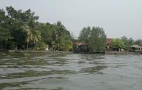
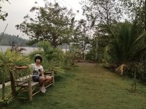
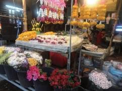
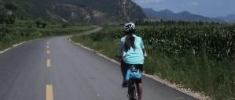
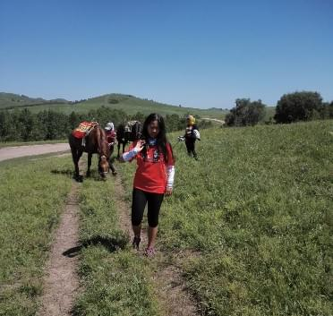

岁月有痕 都在心扉
有梦就还年轻
黑狼
序言

几年间，一直在博客中记录我的生活、心态。写完一篇博文，有亲朋好友点赞，我都会激动不已，这也成为了我最大的乐趣和动力。当写到 100 篇的时候，冲动地要把它整理成一本书，正好这段时间辞职在家，就付诸行动了。
整理成书是兴之所至，但内容却有些杂乱无章。其实通篇只有两大主题：一个主题是伴随着小孩的成长，我从另一个角度感悟童年；另一个主题是我永远的减肥，大量的篇幅描述我骑着自行车四处游荡，如果明白我的目的是减肥，应该能体会到我当时的焦躁与彷徨。
大豆包不喜欢她的这个名字，更不希望出现在书中，让我把关于她的博文都去掉，被我直接拒绝，如果都去掉，我想也剩不下什么了。
我曾经建议大豆包，赞助本书 1000 元钱出版费，我可以给她安一个第二作者的名头，而且还送她 20 本印刷好的书。她疑惑地问我这本书定价多少？我说没有定价，这样你可以随意定价，如果你一本书卖 500 元，只需要卖出 2 本就可以收回本金。她思考了一会儿，说她可以赞助 1 元钱， 能不能享受同样的待遇，被我拒绝了。
如果您已经读完本书，希望您能把它转送给熟悉我、胡有理或者大豆包的朋友。如果因此让我再“吹嘘”几次，不胜感激。
黑狼
目录

愚人节的决定 1
动员与思考 2
有梦就还年轻 3
先开始画地图吧 4
看来大家都挺二的 6
车子有了，尽管有些大，不过，不影响我高兴的心情 7
看来我的屁股还需要更多的磨砺才行 8
第一次见车友，感慨非常多 9
骑了三天自行车，腿疼了两夜 11
也许应该给小孩更多的空间（我的反思） 12
自己动手，制作我的车前包，以及我的新酷造型 14
装上了速度表，发现 20 公里时速也不算快 16
我像不像一个坏人 17
爆发了！拳来拳往！ 18
两全其美的计划 19
密云单车行，我为自己的冲动而感动（上） 20
密云单车行，我为自己的冲动而感动（下） 24
一切都不在控制之中 29
哪里不平哪有我（下班了，回家揍孩子去） 30
不要为了学习而学习 31
骑单车去廊坊吃驴肉面 32
难道我真的有毛病了？ 37
精子和卵子是怎样相遇的呢？ 38
漫无目的游固安 40
希望小豆包能养成好的性格（我的反思与说教） 44
涿州行，差点被晒成螃蟹样 46
别惹我，我得神经病了 50
北京德胜门中医院，黑呀，太坑人了，太坑爹了！ 51
百度不如猫扑 52
戒台寺、潭拓寺、青龙湖单车环行 53
又开始了四处找房子 57
生男和生女的区别（求租心得） 58
搬家，真是累呀 60
箭在弦上，不得不发 61
准备出发！风雨无阻！ 62
骑行长春（第一天，和大暴雨抢时间） 63
骑行长春（第二天，战胜小挫折） 68
骑行长春（第三天，有些疲惫） 74
骑行长春（第四天，意犹未尽，夜宿黑山） 79
骑行长春（第五天，直达法库，精疲力尽） 82
骑行长春（第六天，已达四平，胜利在望） 84
骑行长春（第七天，胜利到达伊通县） 87
只要想到就能做到 90
骑行长春（最后一天，终点长春） 91
又归于平静 93
骑行长春的心路历程（总结篇，备忘） 94
第 2 次骑行潭拓寺（我被捡走了） 100
十三陵、解字石（落汤鸡、疲惫） 103
我最不喜欢夜“谈心”了 106
换了个自行车，XTC750 107
你是想要耍帅哥，还是想要耍流氓？ 108
短暂的快乐后，心情居然是纠结 109
小豆包的作文中，爸爸是智慧幽默英勇顽强的人 110
天天“装睡”，我容易吗！ 112
交换自行车 114
“亲吻的纸张”，什么意思？ ( 修订版 ) 115
“爸爸妈妈，为什么要生我呢？” 117
2013 元旦家庭聚会 119
新的一年，保持好心态，放松、宽容、平和 122
泰国自助游（1） 124
泰国自助游（2） 131
泰国自助游（3） 137
泰国自助游（4） 144
泰国自助游（5） 150
泰国自助游（6 烂尾） 162
海南5天8地 12 楼盘买房记( 胡有理) 164
日常琐事 169
大豆包语出惊人 170
庄稼熟了，骑自行车去采摘 171
大包子又发“高论”：“选择正确的时间来完成梦想” 175
大包子哭的莫名其妙 176
疾病，最痛的感悟 177
在 2013 年的最后一天（猜猜我的手机号） 181
我该如何存在？ 183
柬埔寨自助游（1） 185
柬埔寨自助游（2） 195
柬埔寨自助游（3） 208
柬埔寨自助游（4） 219
柬埔寨自助游（5） 224
柬埔寨自助游（6） 230
柬埔寨自助游（7） 238
有女生的地方才有男生 244
大豆包最敬佩的人 250
《有女生的地方才有男生》花絮 253
谁更重要？ 257
长白山之行 259
我要住宾馆 (1) 263
我要住宾馆 (2) 268
我的心情高兴得超过了 20% 274
改变自己，能否改变世界？ 275
我要住宾馆（国庆活动） 277
坚持，就会改变 286
世界那么大，我本来想要去看看 290
离职了，在我的生命中加了一个逗号 293
腾云驾雾之拔苗助长 295
我喜欢自己身上的味道 296
让别人感到舒服，说明你更成熟了 298
搬家、装修、修车，忙碌的周末 300
我和胡有理的“艰难岁月” 304
时间的朋友 306
写给女儿的一封信 308
世界那么大，我有机会去看看 310
特别的日子，纪念姥爷 314
听天由命的小升初 320
被“虐心”的大豆包 322
一切都是最好的安排 324
骑向乌兰布统（第一天，顺利抵达密云） 327
骑向乌兰布统（第二天，止步白龙潭） 331
骑向乌兰布统（第三天，勉强到达滦平县） 337
骑向乌兰布统（第四天，凤山镇） 346
骑向乌兰布统（第五天，休整一天） 351
骑向乌兰布统（第六天，郭家屯镇） 354
骑向乌兰布统（第七天，御道口乡） 359
骑向乌兰布统（第八天，机械林场） 369
骑向乌兰布统（第九天，乌兰布统） 375
骑向乌兰布统（返京，总结篇） 379
无法实现的愿望 385
量身定做的，都是最好的 388
声情并茂地说服了她，用了两个小时 392
成人礼的风波 395
附录：小豆包的幼升小经历 399

愚人节的决定
2012-04-01
最近，结束长达四年的两地分居生活，胡有理同志返回了北京。回来后，她肯定了我的一些成绩，也否定了我的一些做法。我下定决心，改变一下思维，放飞心情、放飞自己，让那个整天呱呱叫的小豆包多点儿时间独处，调整调整各自的心态。
借用互联网上的一句话：“有些事情，现在不做，或许，一辈子都不会做了”，我做个小计划。
今天是愚人节，我做了一个让我老妈觉得很愚蠢的计划：骑单车回一趟吉林长春（伊通）老家。
计划的全部内容：
主题：骑自行车回一趟老家
时间：小孩放暑假期间，用时 10-15 天左右，往返。路线：北京 ---- 长春 ---- 伊通 ---- 长春 北京
人员：我（1 个）

动员与思考
2012-04-02
什么事情都尽量征得相关人的同意（这是我的风格与方法），这个计划，到目前为止，大家的意见各不相同：
胡有理：“坚决支持，就该干自己喜欢做的事情，想不干都不行” 小豆包：“不同意，永远都不同意；要买自行车，必须是我能骑的”老妈：“多累呀，不好”（心理可能说：疯了、疯子）
丈母娘、老丈人：（目前不在一起住，还不知道我的计划，应该和我老妈的意见差不多吧）
看来要慢慢地争取大家的支持了，不过，准备工作还是马上开始。简单地和胡同志探讨了一下，关于准备的细节，意见分歧很大。
我和她的做事风格不同，她的风格是：“计划周详、装备专业、听从专业人士意见”，我的风格是：“过程中完善、装备实用、自我探索与实践”。因为这个风格分歧，以前在很多事情上争了很多次，比如：健身、旅游、学习等等方面，总是不能统一，不过我妥协的次数居多。这件事情也难以统一，不过，这一次是我控制的事情，哈哈，我说了算。
到 7 月份放假还有 3 个月，应该能准备得比较充分吧。（都准备些什么呢，我茫然的看着电脑）

有梦就还年轻
2012-04-03
下面是 2011 年 10 月 15 日在 QQ 上我写的一句梦话，也借此鼓励自己：
一直有个设想、梦想，步行或者骑自行车，从北京到长春，再返回；也一直希望有个假期，来实现它；
环境永远都不理想，这也许就是个梦想；
今天忽然又想起它，忽然感觉它离我很近很近；环境变了吗？我变了吗？需要有所准备吗？


先开始画地图吧
2012-04-05
今天一整天都在想着单车骑行的事情，单位的事情先缓一缓。正所谓：单位的公事再小都是大事，个人的私事再大都是小事，但，事情总是从小事做起。关于骑行，我现在从零开始准备。以前有的一些东西，不知道能不能派上
用场。目前家里有的，也许能用的上的东西有：滑旱冰的头盔，健身的手套、一根绳子。
上网搜索了一下，需要准备的挺多，大概如下（不准备露宿，所以去掉帐篷、做饭的东西）：自行车、安全帽、手套、单车风镜、水壶、衣服、鞋、裤、防晒油、口罩、背包、雨衣、电筒、高热能食品、水、急用药品等，另外还有路线图。还包括自行车的维修的工具、备用车胎等。
东西很多，慢慢来吧。先来简单的，设计路线图。
在地图网站上画了个路线，不知道靠谱不，强度只能根据实际情况再调节了。计划的路线：
D1 北京三里河 -- 燕郊 -- 河北三河市 -- 蓟县 -- 玉田县 -- 唐山市丰润区 165 多公里
D2 丰润 -- 卢龙县 -- 秦皇岛 -- 山海关 150 多公里
D3 山海关 -- 辽宁绥中 -- 兴城 -- 葫芦岛 -- 锦州 170 多公里
D4 锦州 -- 凌海 -- 盘锦市盘山县 -- 台安 -- 沈阳市辽中县 170 多公里 D5 辽中 -- 沈阳市 -- 铁岭市 -- 昌图 180 多公里
D6 开原 -- 昌图县 -- 吉林四平 -- 公主岭 -- 长春市 190 多公里 D7 （休息半天） 长春市 -- 伊通
然后返回，返回的线路还没有设计，正在犹豫是否走回头路，要看具体时间来决定了。
看来这次的原则还要加上一条，那就是闷头赶路、顺路看景了，没办法，谁让咱时间紧张呢。


看来大家都挺二的
2012-04-08
周末闲来无事，让小孩子自己去写作业，我四处转了转，去了一趟捷安特专卖店和美利达专卖店，自行车种类繁多，看的眼睛有点花，店家给我推荐的都是 2300 元左右的车子，说了一堆的专业术语，一头雾水，还说如果长途的话，全
都配齐了，估计要 3000 左右吧。比我原来的预想要高，我还一直停留在 1000多的位置，看来要站在更高的角度了。应该到网上恶补一下知识了，包括修车方面的。
三天前，我跟大连的一个好友哥们聊起我的计划，他对我和我的计划的一句评价是：“真够 2 的”，不过这哥们就是个臭嘴，从来都不吐象牙！
今天中午，我正在转的时候，接到沈阳好友哥们的电话，问我最近忙什么，还说有机会 5.1 过节啥的回东北聚聚。我说了我的单车计划，哥们也是非常干脆，要从沈阳来北京，然后跟我一块骑车回东北。我心中忽然想笑，看来大家都挺 2的，哈哈。不过，由于我的计划的不成熟以及第一次的茫然无序状态，我没敢应承，说：“要不我到了沈阳，然后再一起骑吧”，挂了电话，还是想笑，呵呵。

车子有了，尽管有些大，不过，不影响我高兴的心情

2012-04-10
骑行，最少需要个自行车！买个什么自行车呢？前两天在网上看了几篇关于自行车的文章，也向有经验的网友请教，网友们挺喜欢指导我这个新手的。不过，建议多了，我更是茫然无头绪。
我比较纠结的问题：我很可能只骑行一次，所以买个好车子有没有必要（如果有一次性的车子最好了）
不过，网友 Jie 的意见很符合我心意：“不确定长期玩就收个捷安特 ATX690, 美利达勇士 600 先玩着，二手的 1000 左右，玩高兴了再换。 ”

说干就干，第二天（就是昨天）我就在网上看到了个卖山地车的，网上说 9成新、发票全。果断联系，约好了见面地点。我去的有点早，等了一会，哥们骑着车子来了。我仔细一看是捷安特的山地ATX770-d，比Jie 说的档次要好不少，价格也好不少，咱也没骑过山地，试了一下，好久没骑了，有点打晃，被那哥们嘲笑了一通，算了不试了，高兴地交钱成交（要了发票，一看是一张他原来买车的收据，算了，收据就收据），高高兴兴骑了 1 个小时，然后去捷安特店里做了个保养，师傅一句这架子应该是 19 寸的，让我又回到现实，怎么把这个忘了，我比较合适的尺寸是 17 寸车架，看来咱一直在跟 28 大架子的在比较，没经验啊。不过，这一切都不是问题，基本没影响我高兴
的心情。
发个车子的照片，大家看看，刚照的，车子都没洗呢。不过，从车子也能看出我的一些风格和品德：含蓄、谦虚、内敛、不张扬、不拘泥小节！也许仔细看看，还能看出更多。
看来我的屁股
还需要更多的磨砺才行

2012-04-11
买车子那天，从四惠桥骑车到三里河，用了 1 个小时；昨天早上，从三里河骑车到长虹桥，用了 1 个小时；昨天中午屁股有点小疼痛，不影响任何活动；昨天晚上，下雨，车子放单位，乘坐地铁；昨天夜里腿部肌肉有点小疼痛，轻度影响睡眠；今天早上，腿肚子有点不适，乘坐地铁。
看来我的屁股还需要更多磨砺才行。
这两天开始关注长途骑行的自行车附件和骑行用品，发现还要补充将近 20种，我都有点晕。
再次深深体会到：“选择也是一种痛苦！”，想当年，商品种类少、社会不开放、不用择校、不用买房子、不担心养老，大家的心情都很高兴很踏实，估计也就是因为选择少而如此吧。现在选择多了，也让我们花费更多的时间、金钱、精力，也让我们更加无助与茫然。
第一次见车友，感慨非常多

2012-04-13
在东方红 1 混了几天，我最关注的是二手骑行装备，也关注组装自行车经验、骑行经验，没事的时候也发几个帖子。
在网上认识了个东北老乡，东方红的“焦立功”，他说非常支持我北京到长春的骑行，同时他也在网上卖东西，让我挑，看中了就送我。正好我手头也有用不上的东西，想和车友们交换点装备。就这样相约，准备换东西。
在见面地点碰到了几个大学生车友，也是在等焦老弟。第一感觉是他们都很年轻，相比较我这 40 出头的大叔，太年轻有朝气了，感觉和他们混在一块儿，我都年轻了。哥几个热情指导我这个老新手，重要经验有二：第一是我原来一直觉得我的车座子已经调的很高了，一个老弟说他比我高 10 厘米还多，一问，他身高才 170 公分，回家路上也大胆调高，感觉不错；第二就是哥几个都走过长途，认为我每天 180 公里以上的目标有点高，应该调整为 120 公里，让我对原来的计划产生疑虑，看来要准备两套方案。
焦老弟见到我后，第一句就说很支持我单车回东北，和几个小伙商量好卖掉自行车后，回家又取了几件东西。回来后，就给我安装，而且说不用交换，送给我了！老哥我 40 来岁，最近 10 年来一直是和人在讨价还价、斤斤计较，一听说要送，立马乱了方寸，这不是我的风格呀，惭愧呀，老弟是真心支持我的东北行呀。太心里过意不去，本来想给老弟个移动硬盘和无线鼠标，无奈，移动硬盘居然忘带了，只带了跟数据线，更不好意思要老弟的东西了，最后老弟实在坚持，就要了个货架子和打气筒，这两件东西确实长途需要，把无线鼠标给我老弟，他非要坚持把眼镜、码表也送我，太惭愧，没要我就赶紧跑了。本来老弟说无线鼠标也用不上，我说交个朋友也不能只要你的东西，幸好是全新的有套装盒子，
老弟自己不用就送人吧，也别让我太惭愧。不过，也批评下老弟，时间观念不强，
1 东方红是一个自行车骑行相关的网站，有二手自行车买卖信息。
拿 20 分钟当 10 分钟来过，万一和女孩约会，那是更要受批评的。对了，那个硬盘我平时也很少用，今天也不知是丢了还是落单位了，如果落单位了，你如果有用随时给你，不过需要准时。
本来都躺下了，半天也睡不着，难于平静，就起来又看东方红。希望坛子里的车友也都大力支持我呀，向焦老弟这样，哈哈。
骑了三天自行车，腿疼了两夜

2012-04-13
自行车到手后，纠结于车架子的大与小。在网上发了几个帖子，交换小点的车子或者车架子。有几个联系我的，不过，都是想给自己的自行车升级。其中一个哥们更是直接了当，夸了半天我的自行车哪个哪个配件比他的好，然后，想要跟我换，搞得我都没了交换车子的兴趣了，哈哈。
买了一把很结实的链子锁，尽管目前还没使用，看着心里也踏实了不少，以前丢车子丢怕了，可不想因为丢车子影响了我的大计。
昨天发现，小折叠自行车也是挺不错的。路上碰到一个中年妇女，骑个小车子，速度飞快，我立马紧催我的 19 大架子，追了 25 分钟，愣是追丢了，下次继续追吧。
骑了三天的自行车，反反复复调整车座子的高低，高了有点挤蛋，低了会导致膝盖受力加大，所以每天都在挤蛋和护膝间反复，调整我的最佳。单位离我住的地方大约 14 公里的路程，每次大约 1 小时，尽管我原来自认为体力不错，跑步能跑1 小时，但单车骑行还是累，骑了三天自行车，腿疼了两夜，还是缺练呀。
继续，痛并快乐着。
也许应该给小孩更多的空间
（我的反思）

2012-04-15
小孩上小学二年级了，已经开始滔滔不绝地表达意见了，也有了脾气。更加地难以“管理”，我和她之间早已不再是那种“我说她听”的关系了。
最近一段时间，让我苦恼。我和小孩吵架、大打出手，已经发展成为了常规“战事”。尤其是早上和晚上，我看见她慢慢腾腾，不忙不慌的样子，并且对我的话听而不闻、无动于衷，我的火气就上来了，经常会“该出手时就出手”，她会立马反击，而且气势比我还盛，甚至还强势要求我给她赔礼道歉。
这种状态形成后我经常反思，不过环境、习惯的养成不是一蹴而就，想要改变、打破，更加不容易。这期间，胡有理同志回北京工作了，她倒是自信满满，大道理把我砸得晕了好几天，反复地砸。高度总结后就是：让她独立、自己管理自己、给她更多的空间。
她走马上任一段时间后（2 周左右吧），有改善，新问题也增加了很多。改善的方面有：小孩偶尔能自我检查她的错误；说话时语气变得平和了许多；我和小孩的吵架次数大大减少。新的问题有：原来 40 分钟完成的作业，现在需要 2个小时；原来不看的电视，现在看上了，电脑也经常玩一会儿；课外书是胡有理强调最多的，经常两个人都看得五迷三道，还强制要求我也要看。另外一个问题是小孩也学着胡有理的样子跟我讲道理。
虽然我和小孩的关系改善了不少，不过，我和胡有理的争执变得多了，也不算吵架，是在用各自的道理去说服对方，以理服人。我的时间概念比较强，希望利用小孩的每一段时间，我总结归纳她的错误，帮助她复习，希望她能快速、有针对地学习。这些我一直坚持的、自认为正确的做法，已经被胡有理同志否定了，认为我不该参与过多她的学习，要给她更大的空间、自我管理自己。对胡同志的做法，我认为从长远来看，是一个很好的教育方式，但短期内，会让效率急
剧下降，我的观念是：转变要渐进，不能放羊，要提高效率。不过，胡同志依旧我行我素，我只能在旁边小声地嘀嘀咕咕。
胡有理同志对我的一个教育习惯非常不满，那就是“吓唬式、威胁式劝说小孩”。我已经不自觉地养成了一些习惯，比如：如果你不 XXX，我就要 XXX。这是我认为胡有理提出的比较有益的一个观点。我也在尽力不再使用这种语法习惯，改为：希望你 XXX，就会XXX。
最近，日子在争执中继续，环境也在争执中改变，习惯也在争执中改变。不过，周末胡有理不在的时候，我还是会冲进去，总结归纳、偶尔威胁。
游泳，让我发现，我又低估了小孩的能力。几天前，她说会游泳了，我问了几遍：“是不是真的呀？”，她气愤：“居然不相信我！”；又过了几天，她说：“我游得可棒了！”，我说：“能游多远呀，会换气吗？”，她气愤：“好几个来回吧，不换气能行？”；上周五，她说：“我开始学仰泳了”，我说：“那周末我去检查一下，看你是不是吹牛”，她气愤：“你还不相信我！”。
前天，周六，我也去游泳了，发现她确实像个小青蛙一样，游得挺棒，我呵呵地笑不拢嘴，在泳池边上想跟她说几句话，她说：“不要说话！”。呵呵，我觉得又一次小看了她，小孩的潜力是很大的呀。
也许应该给她更大的空间吧。
自己动手，制作我的车前包，以及我的新酷造型

2012-04-18
骑了几天自行车，屁股已经渐渐适应了，目前只有腿还不太适应。

今天早上，让小崽子给我照几张最新的英姿照，她满眼的不忿与不愿，说我： “会影响她的时间，再说那么难看有什么可照的，不要臭显摆了”。最后，我许了个好处，才勉强给我照了两
张。她从来都不会说别人好看的，也不会在别人兴头上说几句好听的话。
照片说明：照片中右腿临时用松紧带绑上了，以后会换成专用绑带，自行车加装了货架子，并换了一个短 4厘米的把立，这样会使骑行姿

势更舒服些。这两张照片由于小崽子的心不在焉和火急火燎，请大家忽略掉一些和我的英姿不协调的部分，大家按照我上述说明在脑海中重新想象一下我的英姿，就会更加贴近真实的我了。
骑自行车没有个小包，太不方便，裤子兜鼓鼓的不好看，背电脑包太重也加重了屁股的负
担。在家翻了半天，发现了一个 10 年前的一个阿迪达斯小包，大小合适，就是拉链坏了，背了两天还是不爽，包总是在后背和肚子前来回乱跑，影响骑车的平衡。还是改造一下它吧，再让它焕发当年的青春。说干就干，到地摊儿换了个拉链，找了 2 根联想笔记本电脑电源上的系带，让老妈给缝在了包的后面。就这么简单，
大功告成！我的 DIY 车前包就 OK 了，大家来欣赏一下。
胡有理同志是时常有理、经常有理、永远有理，她就没有无理的时候！我刚刚提出我的想法后，她只有一句话：“真是没劲，买现成的算了”。该同志在教育小孩的时候，那是经常教育她：“要锻炼动手能力、要有创新、要自己做自己的事”。不过，在面对我的时候，该同志又是经常批评我的创新与自己动手，认为我总是在细枝末节上消耗太多的精力和时间，也同时捎带着会批评我的许多传统美德，包括艰苦朴素、勤俭节约等，大谈什么开源不节流。
不管那么多了，道理是总在改变，与时俱进，不能较真儿的；人也到处是牛人、狂人（小孩的同学家长 QQ 群上也有大量的女牛、女狂们）。还是享受咱自己创新的乐趣吧。


装上了速度表，
发现 20 公里时速也不算快

2012-04-20
昨天又在淘宝买了些东西，码表、绑裤带、修车工具、补胎工具等。
换上了正规的绑裤带，发现和我的松紧带差不了多少，无论是效果还是外观。也装上了速度表，这个不错，早上飞奔了一下，平均速度21 公里，最快32.3 公里，家到单位总里程 13.9 公里。感觉速度在 22 左右是比较轻松的，就是不知道长时间这个速度会不会也这么轻松。
现在还缺少头盔、手套，还有自行车内外胎，正犹豫着是否买一套新胎换换练练手。
还需要个包包，装点衣服什么的，正好我以前有个极地背包，个头也不小，已经尘封多年，这次正好曝曝光。可能还需要个小点的背包，装些零散用的东西，可以一起绑到货架子上，咱不像洋骡子，什么都喜欢背着，我是尽量放在货架子上的。
看来需要搞一个详细物品清单，慢慢来，我还是喜欢充足的时间来慢慢准备。

我像不像一个坏人
2012-04-26
前几天，又是下雨，又是周末，身体过量恢复，昨天又开始我的单车上下班。感觉浑身有力，车子也很有推背感，偏偏老天不作美，无论我往哪个方向骑，都是顶风，顶得我满头大汗，让我今天又明显感觉乏力、酸痛。今早碰到了个骑公路赛车的，我在后面猛追了一会儿，最高时速到了 34 公里，两个红绿灯后，那个哥们就跑我前面去了，没了踪影。
骑行的装备又增加了一些，头盔、手套，等哪天再上照片，秀一下。关键是没人给咱照相。
今早把小孩送到校门口后，在月坛南街路口，我正在武装我的新酷行头，一个一年级小学生很吃惊的看着我，跟另一个小同学说：“看那个人！”，我对着他大喊：“好看吗？我像不像一个坏人？”，把两个小同学吓跑了，哈哈哈，小同学的妈妈也笑着跑了。


爆发了！拳来拳往！
2012-04-28
这几天家里，颇不平静。
小豆包的行为越来越嚣张，主要有以下几点：缺少对长辈的尊敬、满嘴胡话毫无顾忌、作业（学习相关的动作）拖拉严重、经常偷跑去看电视电脑。
我对小豆包的行为是大动肝火，经常和她生气，有时打她几下，效果不大。胡有理还算淡定，经常以理服人，效果也还不错。不过，今天早上，终于，爆发了。
事件导火索：早上 7 点，小豆包还不起床，对爸爸的提醒大声抗议。
胡有理同志一改往日的超然与淡定，不再矜持与大谈道理，采用了最直接的手段，跟小豆包大干了一架，两个人拳来拳往、脚来脚往、东西来东西往，互不相让，声调一声高过一声。最终，小豆包还是觉得自己理亏，败下阵来，但是，嘴上不屈服，每隔 10 秒发出高调门的哼哼声。
过程中，胡同志的话：“让她自己不着急，就让她迟到！”，小豆包的话： “让胡回青岛，不想看见她！”，其间，小豆包还企图争取我，让我与她一起和胡有理理论，我直接告诉小豆包：“就是你的错误！”。
小豆包从心里还是担心迟到的，自己坐到桌子边，喊：“我要吃饭。”，我把粥给她弄好，她一边哼哼，一边吃饭，居然还吃了不少，也许是她从来没有不吃早餐的习惯吧。
我送她上学，她担心迟到，让我用自行车带着她，分手时，我说：“我还回趟家，你有没有要跟你妈妈说的话？”，小豆包说：“没有，我还没有原谅她，她把我身上好几处都快划破了。”，学校门口，小豆包又变成了小绵羊，她一出家门，就会变成小绵羊。
晚上回家，气氛格外的温馨，小豆包的行为大幅收敛。看来偶尔的爆发也是有好处的。

两全其美的计划
2012-04-28
明天就是五一假期了，尽管只有三天，胡有理同志还是来电话了，一边发布她的计划一边警告我必须服从她的计划，计划的内容是：“29 号去密云，顺便看看那边的一个房子，然后住在农家院，30 号回北京。”
现在的胡有理同志，居然也学会了边谈事情边恐吓的技巧。我还是顶住了巨大的压力，采用了一贯的不合作、泼冷水的态度。
晚上，回到家，我刚要谈谈五一出行，为了某人的面子，我已经准备配合了。不过，胡同志对计划做了个小小的改动，我一听，呵~~~，不错，很不错，计划改动得不错，照顾了多方面的情绪。
改动后的计划是：“在原来计划的基础上，小豆包的爸爸一个人骑单车前往密云，其他人汽车前往。”

密云单车行，
我为自己的冲动而感动（上）

2012-04-30
放假前一天，和大风较劲，搞得我腿很疼，为了避免影响五一出行，28 号特意坐了一天地铁。不过还是没有缓过劲来，疼，依然的疼，不管那么多了。
准备了半天，还是不够充分，忘了带我的录音笔，以至于我的好多感触，想了就忘了，最后只剩下疼痛的感觉了，还是直接看照片吧。


7:30，我收拾完毕，让胡有理给咱留个影，准备出发，其他人（8 人）要 9点钟才出发。
出发时的英姿

一个小时后，激动和兴奋的心情还是没有降低，尽管腿已经开始酸痛。恍惚间，绕错了路，居然跑到了东直门，往南去了，幸好及时发现。

飞奔在京顺路上，看着路标，感觉不是很远，还剩 64KM。
到了天竺附近的一个桥上，以前开车路过时一直觉得这个桥挺大的，这次感觉它很渺小。路上车堵得很厉害，不过，咱却是一路畅通。

这次来了个 10 分钟休息，大休，休息后腿更加的酸疼，需要骑行几分钟后才能让疼痛的感觉慢慢减弱。
到了枯柳树环岛，又一直骑下去了，1 分钟后，感觉不对，居然又错了，赶紧折回，重新选路口。

G101 国道 30 公里处， 这次的健康出行，也让小草们受益一下，来点肥料。忽然想起我的苹果
mp3 怎么忘了听，咱一直没有听的习惯，这次特意带上，时尚一把。谁知昨天充了一夜的电，居然到用的时候一点电都没有，怎么感觉它只能用电脑才可以充上电。气死我了，苹果这么烂的产品居然还有一堆人在用，包括 iPod、iPhone， 连个 USB 口都没有， 复

制个东西都不行，一群傻二们还拿着炫耀，这帮家伙，太二！（胡有理同志估计看到这个肯定无比地生气与不忿）
把气愤转化为动力，接着走！到了这，天已经有点暴晒的感
觉了。附近有好多卖小狗的，看着挺可爱的。

还有16 公里了，电话响了，接！胡有理的电话， 居然她们堵车还没有上京承高速。她还说我老丈人也骑单车去密云了，挺意外的，不知走到哪了。
很巧，妹夫来电话，说老丈人已经到了密云，我大喊：“不可能，我还有 16 公里，他怎么可能比我还快？”

不管那么多了，又大休，把各种吃的拿出来大吃。给老丈人打了个电话，才知道他居然 5 点钟就出发了，呵呵 ~~，我说怎么比我还快。看了看路线图，发现走的不是我计划的那条线，只
顾着看马路边路标了，一路沿着 G101 线就下来了。
开车坐车的都到了密云的招商大厦，并且开始大吃特吃起来，等我辛苦感到的时候，我已经骑行了 85 公里，时间是下午 1:30。餐桌上的菜基本都是底了，幸好路上又吃又喝的，现在还不饿。

中午一起吃饭，我到的时候盘子基本都是底了。照了些照片，都是合影。
饭后，其他人都开车坐车走了，只剩我一个骑着单车去密云县内转转。忽然想起忘了问他们准备去哪了，算了，反正咱的自行车灵活，密云也不大，逛一会儿再说吧。
下午 5 点，我正在公园的长凳上揉腿、晒脚，接到电话，说到石城镇住宿。穿上鞋，推车出发，路上问了个老大爷，说大概 20 公里的路吧。
谁成想，这 20 公里，有好多的上坡与下坡，让我的大腿承受了多次的剧痛，路上我大叫不止。
黑狼语录：

-------- 饱满的热情，与大无畏的精神，让我坚持到了最后。
-------- 现在回想起来，我还觉得自己很坚强。哈哈。
密云单车行，
我为自己的冲动而感动（下）

2012-04-30
黑狼语录：

-------- 饱满的热情，与大无畏的精神，让我坚持到了最后。
-------- 现在回想起来，我还觉得自己很坚强。哈哈。

最终，我大叫着冲到住宿农家院的时候，已经是晚上 7 点半左右了。大家还没有吃饭，这次不算晚。
看了一下码表，总共 114 公里，最大时速 47.3。高兴、吃、喝、酸痛。
晚上的热炕还是非常的舒服，尽管我夜里痛醒了好几次。屁股不痛，腿痛。第二天一早，6 点半就起来了，感觉了一下，除了腿还痛外，其他地方均好。出去照几张照片。
50 米处有一个不知道是否有火车停靠的小车站，居然还有人问我哪里有售票处，呵呵，我也没找到。

来个正面的照片，背景中是胡有理。
吃过早饭，9 点钟，别人都去逛什么桃园谷了，我自有我的乐趣，骑车出发，回京。
现在想起来，除了睡一觉外，我基本都是在路上，我喜欢路上的感觉。 回去的路居然有点顶风，骑行了大概 30 分钟，腿终于不再痛了，感觉很舒
爽了。一开始的山路让我再次体验到了上坡的剧痛，即使我呀呀呀大叫，也还是有 3 个大坡坚持不下来，最后推着自行车走上去的。下坡的风驰电掣的感觉，非常的舒服和刺激，耳边是呼呼的风声和吱吱的轮胎磨擦路面的声音。不过，最大的时速还是没有超过我昨天的 47.3 公里 / 小时。
都说好马不吃回头草，回来时特意选择原来设计的路线。看到一条小河，还以为是潮白河，应该不是。小休。
路过野花遍地的小路的时候，碰到一个父亲带着 12 岁左右的男孩，也在单车飞奔。不过比我的时速 26 公里还是慢了不少，我酷酷的擦身而过，那个小男

孩立刻大叫：“爸爸，加速，快点！”。呵呵 ~~。我又继续 15 分钟后，无名小桥边休息。
这条路线人车很少，景致不错，到了潮白河，看了眼地图，接下来要沿河走 20多公里，大概 1 小时。唉，悲催呀，地图本来是按照去
密云的顺序排列，回来才用上，一不留神，看反了，应该右拐，我却拐向了左侧。

这条小路，越走越幽静，居然后来都是石板路了，我也把相机放在路边台子上，给自己拍了一张照片。唯一的骑行中英姿。
15 分钟后，感觉不对，又把地图拿出来看了看，当时惊得我差点翻倒在路边。顺势开始吃东西休息。（走错路了）
修正路线后，顶着小风，走上了漫漫的 20 公里沙子路，阳光很足，路上基本没有行人和车辆。
尽管是沿着潮白河，不过已经没有了水，更加的显得热、晒。到了这条路尽头，才知道为何车辆稀少，原来还在修路，看来网上的地图也要谨慎用之。

出了那段漫长的河边路，居然到了牛栏山酒厂，必须得来张照片。
看到了六环的标志，我还是小激动了一下，不过，没走多远，看到距离五环居然还有 15 公里，妈呀，这两环怎么这么远呢。

又回到了天竺附近的那个无名桥上，大休，尽管有点晒，不过跟腿的酸痛还有屁股的痛比起来，已经不是问题了。
回京的路上，缺少了照相的兴致，闷头飞奔。我还是保持 40 分钟左右休息 5分钟，1 个半小时左右休息 10 分钟。每次休息完后，
再骑上单车时，都是两腿酸痛，每次都是要骑行 5 至 10 分钟，腿才不再酸痛，也不知道这种现象在体育方面怎么称呼。

尽管我使用了我的秘密武器，可是我的屁股还是非常的痛，而且有点磨破皮了。
先展示一下我的秘密武器
哈哈，女同志是不是感到陌生而
又熟悉呢？这就是我的秘密武器，咱是低调的人，外面穿的太鲜艳不是咱的风格，哈哈，不过，咱也要充分准备。
屁股还是有点破皮，我认为是出汗过多，导致垫子不柔软所致。各位有什么好的建议不要藏私啊，路上我也思索了半天，想到了一个办法大家看看是否可
行，那就是用痱子粉。
除了腿和屁股，第三个疼痛无比的是手，手也承担了部分身体的重量，后来虽然变化了很多姿势，效果不大，还是疼。
下午 4 点半左右，终于抵达了家。开车的和坐车的在 3 点钟开始回返，居然到了晚上 7 点多才回到家，也不比自行车快多少。第一次没经验，我的自行车轮胎是那种土路适用的，阻力比较大，下次一定要换成细、平纹的。
返程共骑行了 107 公里，两天总共 220 公里（密云县城内没有计算入内）。晚上躺在床上，痛并快乐着。

一切都不在控制之中
2012-05-03
今早起来，除了屁股掉的皮还没有完全换新的外，其他的不适、疼痛均已消失。依照我的性格，本来还应该在兴奋中沉浸几天，不过被胡有理同志的几盆子冷水胡乱泼下来，热气被散了个干净。
昨天我在E 度网发了个帖子《思虑再三，还是公开我的幼升小心路历程吧》，打算提升下我博客的人气，结果广告效应非常的明显，访问量大增，一天的访问量超过历史所有的访问量，不过 90% 都是看我的幼升小心路历程，家长们也对我的心路历程颇有同感。为何思虑再三呢，因为里面有我如何择校，如何捐款，甚至还有如何成功退还捐款，怕引起不必要的意外，毕竟现在的网络谁也说不好哪句话就触动了别人。到了下午，我还是决定把帖子上的链接去掉，结果家长们焦虑而又热情的心态，让我决定发站内信告诉链接，结果下午发了不少站内信，要经常盯着，还挺累。哎，广告焦点不集中呀，看博客的人不多，今早决定，再开放半天，下午把链接去掉，也不站内信了，呵呵。还是在群里面打广告吧，反正都是熟人也不好批评我。
胡有理的几盆子冷水：不要总是沉在历史中，要看未来；不要只热衷于文字，要关注经济；给你看看 facebook 的 XXXX 的一本书吧（没记住，估计是创业发大财的哥们吧）；周末不要出去了，陪孩子，我要出去逛；别碰见个人就提你的博客，自恋呀；别再和我说看你的博客了，我哪有时间看呀。
小豆包的一句话：不要总是弄那个破自行车，你要管管我的学习！ 这冷水，怎么感觉又回到了冬天。呜呜 ~~~。一切都不在控制之中。
哪里不平哪有我
（下班了，回家揍孩子去）

2012-05-08
这几天的日子过得太煎熬了。小豆包过完五一后，马上就进行了期中考试。考前忙碌，家长比学生都忙；考后煎熬，家长比学生还紧张。考试成绩一科科的发下来，我的心情也是一点点的冰凉，终于上周末在家长聊天群里面发了句肺腑之言：“下班了，回家揍孩子去！”。 尽管群里面的家长都有这个“揍孩子”的冲动，但回到家后，看到小豆包的无辜白痴状，估计没有一个家长真的会去揍吧，因为我们这一代，都会觉得：小孩考试成绩不佳的原因也有家长的责任。 胡有理照例在周末又去参拜神仙去了，还好，这次回来后没有胡言乱语，也许她了解了教化别人的不易，知难而退了吧。 我和胡有理同志交涉，希望她这周在家陪孩子学习写作业，胡同志干脆来了个长远计划：“周六狼哥休息，周日胡有理休息”。也好，这样我也可以在周六的时候出去压马路。
周六去哪里压马路好呢？热心人帮我看看，哪里的路不平，我去压！哪里不平哪有我！

不要为了学习而学习
2012-05-10
今天是家长开放日，还是让胡有理同志去体验了。这两天我最常说的一句话： “家里的事再小也是大事，单位的事再大也是小事”。
小豆包期中考试的最后一科数学成绩出来了，我还在单位呢，就给我打电话，说自己考了98 分，班里第一，就她一个是98，别人最高97。我听了还真是挺高兴，说周末送她礼物。结果她支支吾吾，把电话给了她奶奶，她奶奶说小豆包放学后自己决定吃肯德基，而且还给自己买了个名牌的 131 元的游泳镜。她奶奶拦都拦不住，这个豆包，完全忘了自己的英语和语文考试成绩非常地不理想。
晚上我到家，说：“今天你数学还不错，全家决定给你的奖励是：肯德基和游泳镜”，她听后直撇嘴。我接着说：“不过你其他的科目没考好，是不是有点骄傲了”，她说：“我认为自己最好的是英语，最担心的是数学，结果成绩正好相反。”
晚上 7:30 左右，小豆包磨磨蹭蹭的这晃晃那晃晃，我说你赶紧写作业学习，她居然说了一句让我吃惊的话：“不要为了学习而学习”，我大惊，说：“你个小屁孩懂什么，这句话我上了大学才明白是什么意思”。她居然还为我解释这句话的意思，而且意思还很正确。真是让我刮目相看呀。

骑单车去廊坊吃驴肉面
2012-05-12
11 号下班后，出去买了件雨衣，回到家已经是晚上 9 点了。简单吃了点，就在屋子里折腾，把东西往背包里装，把背包往自行车上捆。被我老妈看见了，问我是不是明天要出去。我说：“明天我去廊坊吃驴肉面去，风雨不误”，我妈妈说：“我发现你最近确实有毛病了”。当然，有毛病不只是说我吃面条，还有就是我对小豆包、胡有理的喋喋不休。我现在确实有点絮絮叨叨了。
一早起来，本来说好了我直接出发去廊坊，临时胡有理同志犯懒不想出门，我就先单车送孩子去上课外班。唉 ~~，警告过所有人不要给我找 Trouble，还是避免不了，白白浪费了我的絮叨。

提前几分钟下楼，在出发墙边摆姿势来个照片，请了半天也没人下楼，只好自己来个自拍。
胳膊上弄了个套袖，怕太阳给晒爆皮了。头盔又买了一个黄色的，上一个送给老丈人了。还买了套分体的雨衣，上衣和裤子分开的那种，放在包里了，预
防下雨。

十多分钟后，把小孩送到了上课外班的地方。天空有点阴，有零星的雨点，我就把雨衣给穿上了，刚套完雨衣，骑上单车几米远，就碰到了熟人，还说我装备专业，哈哈，难道在说我那套雨衣？
8:15 开始出发，起点是甘家口，终点廊坊，去吃驴肉面。
9:20 到了南苑路。
路上有点小雨，速度有点慢。还有背包一路上解开又绑上弄了 3 回，觉得不如有个腰包方便，把经常用的东西


9:50 马上就是 104 国道，热、浑身是汗，感觉不是蹬自行车累的，是雨衣太厚不透气憋的。也不知道还下不下雨，先穿着吧。雨下的这么小，雨衣是脱也不是、穿也不是。
放进去，不用老去拆卸捆绑那个大包，胡有理同志新买个腰包放在单位了，我都说了好几遍了，她也不舍得往回拿。
雨天空气比较好，本来想把雨衣脱了，不过路上还有水，甩的腿上、车子上都是泥。

10:50 到了 G104 的 30
公里处，还是决定把雨衣脱下来。一脱才发现，雨衣的外面很干燥，就是有很多已经干了的泥点子，里面却都湿了，都是汗水。感觉有点累。大休。
这次出行，准备的东西比较全，甚至连补胎打气的工具都带上了，不过还是忘了带
湿纸巾、塑料袋等，慢慢完善吧。
休息了 20 分钟，继续出发，刚脱了雨衣，上衣和裤子都被汗水湿透了，小风一吹，唰唰唰 ~~，真凉快呀。

12:05 终于到了廊坊界。刚才看指示牌，再有 10 公里就到目的地了。一路上，车、人都不多，尤其是没有看到像我一样戴着头盔骑自行车的人。
12:50 到了廊坊的兴安市场附近，离我要去吃驴肉面的地方就几百米了。这段路有
点风，也有点疲惫，速度也上不去。
里程表显示总共是 75 公里，用时大约 3 个半小时。
不过，又发生悲催的事情了。我只记得吃驴肉面了，在地图上标记了这个点，却忘记了这家店的名字，转了一圈，马路两侧都看了个遍，除了看见一家驴肉火烧外，居然没发现哪家店是有驴肉面的，不死心，问了几个人也说不清楚，嘿 ~~~，不知道店名呀，又转了一圈还是没有，饿的实在不行了，家常菜吧，哎 ~~，悲催呀。

13:10 家常菜， 给的量真多，我都吃了一半了，还剩这么多呢。
吃饱喝得，到兴安市场转了转，发现无论是商品种类还是价格，跟北京的也差不多，算了，不增加重量了。
感觉时间还早，应该再休息下，路边有个门面还不错的理发店，正好头发被汗水湿了几遍，理个发吧。
理完发，继续慢慢溜达，看见一家药店，为了保护屁股，进去买了点滑石粉，交钱的时候，漂亮的女收银员问我：“是不是骑自行车往手上抹呀？”，我嘿嘿一笑：“错，往屁股上抹”。正准备出门，看见一盒阿司匹林泡腾片，特价，居然有减轻肌肉疼痛的疗效，顺便买下。
在廊坊，马路两边的店铺名称上，看见了两个新的名词：一个是比较大的饭馆门口经常有“三八席”，难道是特意欢迎女同志的？另一个词是网络休闲会所，应该就是网吧。
15:15 开始回程。来的时候是看路标，就沿着 G104 国道到了廊坊，回去的时候，使用我 Go2map 打印的地图，不走回头路。

15:50 在广阳桥附近问了好几个人才找到地图上标注的路口，看起来不像是繁华的大路。走了没多久，拐了几个弯，又开始迷路。
问了几个人，终于回到正途， 16:30 分钟，我飞驰在一条飞沙走石的村级公路上。

尘土飞扬，石子遍地。

又过了 3 段泥浆 路，终于到了北京 界，现在是 16:45，小休。
休息的时候，找了个无人之处，抓了几把滑石粉，塞在裤子里面，哇~~~，那感觉，难以述说。
弄了一片阿司匹林，放到水杯里面，继续上路。
接下来的路就比较好走了，除了有点小风，有点影响速度外，其他都好。尤其是，
接下来的路，我居然没有感觉到腿的酸痛，难道是我的腿已经适应了这种强度的运动，或者是那片阿司匹林真的有作用？下次还是不能乱吃呀。
19:00 来到了东高地的首航超市，饥渴难耐，包里的东西能吃的都已经吃光了，逛超市顺便休息。酸奶、面包、运动饮料。
晚上骑车走在北京市内，戴着墨镜，一片漆黑。（下次还应该搞个夜里的眼睛，否则太影响速度）
20:20 三里河东路南口，到家。一天的总里程是 148 公里，平均时速 20.4公里 / 小时。
很遗憾，没吃到驴肉面，我老妈说那你明天再去吧，胡有理说下次多记几个店，呵呵。另外，顺便再次鄙视下网络地图，带来方便的同时，让我多转了好几个圈。
腿居然不疼，睡觉的时候也不疼。看来明天需要仔细的查查阿司匹林这个药，以后不能乱吃了。

难道我真的有毛病了？
2012-05-15
黑狼语录：

-------- 如今评价谁有理，靠的是看谁的嗓门大、声音高。
以前我都是上京东商城的，自从上个月我知道胡有理的淘宝账号后，我经常上淘宝转上一圈。最近买自行车的装备也基本是在淘宝解决的。
几天前，上淘宝查看已买到的宝贝，吓了我一大跳！从 5 月 5 号到 8 号，胡有理同志居然买了 8 条裙子，这是要干什么，难道账户被黑了？我赶紧给胡同志打电话，她很镇定的说：都是她下的单子，就是想让商家寄过来试一试，不行就退，行了就留下。我差点晕过去。
也由此，我和胡同志在购物理念上，发生了严重的分歧。我老妈也是在这几天对我的评价有所更改：原来是“絮絮叨叨”，现在变成了“比较有毛病了”。
难道我真的有毛病了？
附注：

1、从 4 月 6 号到 5 月 14 号一个月左右共有 19 笔订单；期中胡有理的是 12 笔、
运费 112 元（不包含退单的）、退单 6 次；我的是 7 笔，运费 10 元，退单 0。
2、期间胡有理同志买下 3 条裙子。
精子和卵子 是怎样相遇的呢？

2012-05-16
“男人的精子和女人的卵子是怎样相遇的呢？”这个问题困扰了小豆包将近一年的时间了，这期间也反反复复地问我答案，也对我造成了将近一年的困扰。
问题的起因是上健康课时，老师说：精子会游泳，遇到卵子，然后……。估计是老师讲的有点快、含混，她后来问我：“精子在男人体内，卵子在女人体内，怎么就游过去了呢？”，类似的问题，断断续续地问了我好几个也问了好几遍，我都含糊应付过去，我的回答基本都是：“男人把精子直接交给女人就行了”， “就像东西一样，送给她就行了”，……，“去问你的老师”。
随着时间的推移，越来越难蒙混过关，后来就在群里请教，发现群里面的妈妈们好多都如实交代了。有个妈妈建议我让小豆包直接去问她的小孩子，可能是她交代的更多吧。从那以后，再碰到小豆包类似的问题，我直接就说：“你去问你们跳舞班 XX 一，她妈妈都告诉她了”。
昨晚，我正在吃饭，听小豆包在一个房间大声说：“男孩的 JJ 放在女孩的 JJ 里面，然后精子就游过去了，和卵子相遇了，就有小孩了！我听妈妈说的！”，惊得我下巴差点掉到桌子上，然后小孩又大叫：“爸爸我知道你的隐私了，我知道了！我听妈妈说的。”
“隐私”这个词都知道，我再次惊得差点把菜掉在桌子上。我老妈从另一个屋里出来，也是满脸的惊讶，同时胡有理同志也尴尬地从屋子里走了出来，小声跟我说：“不是我说的。”
等晚上，小孩睡着后，我才知道，原来是她同学 X 香的妈妈告诉 X 香的，X香又告诉她的。估计这个答案在小豆包心中憋了好几天了，正好昨天她妈妈接她放学，她就问她妈妈是不是这样子。胡有理同志向来是有理说理，不说无理的话，就直接承认了，这也就成为了后来小豆包的有力佐证。
哎 ~~，一琢磨，如果当时是我去接她，我会如何回答她呢？估计小豆包她不会问我的，会接着等到她妈妈来接她，然后再问，因为她知道在我这里是没有什么答案的。
这个答案会影响小豆包多久呢？

漫无目的游固安
2012-05-19
5 月18 号星期五，这天真是窝火，从早上起床到走出家门、晚上回家到睡觉，所有在家里的时间都花费在了找东西上，一开始是找数码相机，找了好久终于在被我翻了 N 遍的大兜子里面找到了，然后又开始找苹果 mp3 的耳机，到目前还没有找到。看来 19 号单车压马路时，不用带mp3 了。其他的东西都准备好了，只有一项还没有定下来：骑车去哪里？固安、涿州？
5 月 18 号，这一天另一件更为窝火的事情是：胡有理同志上周日把车停在唐拉雅秀后头，居然窗户上贴了一堆罚单。肯定是那个收停车费的sun 子，太黑了，据他说，每天一张，不过最后网上查了一下，居然才只有 2 张，其它的没有登上，不知道会不会过几天才陆续登上。
5 月 19 日星期六，一大早起来，7 点钟就吃好饭、把所有的东西都准备好了，就是还不知道去哪里，本来打算投硬币决定去哪里的。不过，“不要给我找 Trouble”，是很难实现的。
真正出发却是 8:50 了。太匆忙，都忘了在出发墙前留影了。
18 号晚，小豆包的姥爷不知从哪里抓来条蜥蜴，据说只吃面包虫，胡有理同志非要我去给蜥蜴买面包虫。我找了一圈花鸟市场，买回来居然骑单车跑了 18 公里。到家里后，见到面包虫，胡同志和小豆包都躲得远远的，无奈，还要我继续处理，喂蜥蜴、把虫子放到冰箱里冷藏，完事，时间已经不早了。
8:50 冲出家门，骑上单车，没有目的，先往南走。到了南四环，决定去固安，距离相对近一些，现在时间也不早了，太阳也火辣辣的。
10 点钟，到了五环。
10:30 到了六环，桥下，休息 10 分钟。
一路上，没发现什么风景，也懒得拍路标了，飞奔，奔，奔，...

11:25 到了京开高速南边的榆垡收费站。休息会，自拍几张。


太阳很大，我躲到树下乘凉。
摆了半天姿势，满头大汗，终于拍了张相对清楚些的。
11:50 到了北京野生动物园，拐到门口转了转。（注：下面照片中的哥们

摆了好长时间的各种姿势，太热了，我实在等不及了，拍吧，大家忽略掉照片中央的人物）
本来想买瓶水，一问，脉动居然卖到 8 元，算了，再坚持一下，出发。结果一出动物园往南，几百米，

一个加油站，进去买了瓶脉动，4.5 元，还不错。接着走，据说离固安还有 5 公里吧。
到了固安收费站，国道居然还有收费站呢，不是都开始取消了吗，难道我记错了？
12:23 到了固安，大马路，绿化不错，满大街的售楼先生和售楼小姐。
12:50 找了半天，也没找到吃饭的地方，本来发现了一个自助烤肉，不过老板看我一个人，显然满脸的犹豫之色，算了，继续吃家常菜吧。
14:45 逛了两家超市，没有找到廊坊特产的迎春酒，买了点水、饼干、运动饮料，开始慢慢的骑，准备往回走。

15:05 刚才休息了会儿后，腿部肌肉有点发僵，慢慢的蹬了 15 分钟后，到了固安县收费站，肌肉恢复了不少。
15:30 到了一个桥下，休息会。 无意中发现了一个站牌，居然能到
白云路、南礼士路（离我住的地方 800


米），再一看长长的一列站名，真够远的呀。
17:53 到了南四环，今天的感觉就是太热，太阳比较晒。已经骑行了 106公里（不包括早上的 18 公里）。
18:48 到了家，差点赶上雨。
今天总共骑行 18 公里+ 118 公里 = 136 公里，最高速度 44.5 公里/ 小时。一路上，风景不多，也就基本没有拍照。
仔细体验了下，阿司匹林的作用没有我想象的大，这次骑行腿也没有感觉特别的酸痛，每次休息后，基本几分钟就可以恢复到最佳状态。
晚上，小豆包打来电话，不回来了，居然说是给我放假，还说可以自由地喝酒，今天不管我了。
希望小豆包能养成好的性格
（我的反思与说教）

2012-05-24
5 月 22 日那天，又跟小豆包大吵了一架。最近和小豆包吵架明显减少了，但不等于没有了。
吵架的原因总是老套的那几样。这次是小豆包用力过猛，把抽屉弄到地上了，东西撒了一地，让我帮忙，我只是把抽屉帮她安装上，东西让她自己去收拾。结果她居然大发脾气：“你就是不爱我，连帮我都不肯帮我”，“你看我现在多忙，有这么多作业呢，你还不帮我”， 。然后就是乱喊一气，“爸爸！你不要
在这个屋子！”，“爸爸！我晚上不想看见你！”，“我讨厌你！”，. 。
这种吵架方式也是老套路了，基本就是小豆包的歇斯底里，然后大人们退让，小豆包再得寸进尺。
胡有理同志这次是真正地感觉到了头疼，导致心情不佳，情绪低落。这里面有小豆包的无端发火、无理取闹、无规无距等因素，也有胡同志自己工作生活等诸多因素，总之，这一次明显的心绪不宁。
小豆包看到大家都是脸色难看，也就不再乱叫，安心写作业了。
我跟胡有理同志在一间小屋子里面，头一次很严肃地争论了大约 20 分钟，胡有理的主张是：“希望让上帝的宽容心态来感染小豆包，希望能带小豆包参加聚会，希望她养成好的性格”。我当然是提出了反对意见，并且希望她在小豆包未成年前不要让她接触上帝。我的姿势是躺在床上，胡同志则是激动地站在地上，辩论着那些永远没有结论的话题：有没有上帝、上帝为何不显露于世间，我国的神仙存在与否，信仰上帝会不会让人心绪平静，上帝会不会让人逃避现实，宇宙中广大星系、众多行星中有没有未知的神迹，……，等等。最终，我还是以我习惯的一句话结束：“让你们周末聚会的人看看我的博客吧”，胡同志最后的结束语是：“你就是不敢接触那些人”。
有些事情永远都没有结果，因为：1、我们的生命不够久远，2、我们的视野有很大的局限，3、我们只能生活在一个很小星球上，不了解宇宙。
这一次，我脑中闪现灵光，感觉到了吵架的原因，在胡有理同志的警告（她不许我对上帝亵渎）下，和小豆包郑重的说了几点我的感受：“知道我和你妈妈刚才讨论什么？就是在讨论如何教育你”，“你知道为何我们两个总是会打架吗？因为我总是阻止你做喜欢做的事情，比如电视，比如电脑”，“最近半年你莫名其妙的乱发火，谁对你好，你对他发火更多”，“我是不是爱你的？为何我要阻止你去做喜欢做的事情呢？”，“难道你做你喜欢的事情，我不管你，我们就能关系更好吗？”，“为何我发火？是因为我说一遍的时候，你没反应，说二遍的时候，我就心中有火，说三遍的时候，你还无动于衷我就火大要爆发了，说四遍的时候，我就想动手揍人了”，“你妈妈为何最近心情不好，就是她觉得你性格现在不好，我对你妈说，小孩还小不懂事，小孩主要是针对她爸爸”，. 。
小豆包其实是心软嘴硬，听了一会儿，就说：“我说了我不会后悔，怎么我又感觉后悔了呢，啊 ~~~”，小豆包把地下的东西收拾干净了，尤其最后，我嘴里哼着：“为什么我最爱的人，却总是伤害我最深”，她对我又是很老套的道歉、拥抱。
今天的说教，效果比我想象的好。我又学会了一点，那就是要告诉小豆包，为何会与她发生冲突，让她自己判断是非，达到最终统一认识。
性格的养成是复杂而缓慢的，也许生来就已经由基因决定了，我们家长的努力只是让小孩逐渐地找到自我。也许，随着融入复杂的社会环境，她最终会变得隐藏自己的真实感受，变得圆滑，变得让我们家长喜欢。
涿州行，差点被晒成螃蟹样

2012-05-26
黑狼语录：

---- 当别人都在昏睡时，只有我还在坚持！
7:20 出发，还好，走得比较早，小豆包和胡有理都还没来得及给我找 Trouble。今天的目的地是涿州，在Go2map 上比划了半天，距离差不多80 公里，感觉距离有点稍远。

照例在出发墙前留影，激励自己一下。
7:50 到了岳各庄桥，就听到稀里哗啦一声响，车上的尾灯居然掉了，四分五裂，捡起来看看，用胶布还能修复。
8 点整 到了丰北桥，已经走了 11 公里，太阳特别的大，已经感觉到了炎炎热气，天气预报说今天会达到 33 摄氏度。
8:40 走了 20 公里，到了卢沟桥附近，过了一个小桥，也没看见桥上有狮子什么的，应该不是卢沟桥，紧挨着就是杜家坎环岛。一过环岛也没看路，直接冲过一个大下坡，爽，达到了 41.8 公里 / 小时，然后就觉得不对劲，路怎么越
走越窄呢，一问路人，走错出口了，又冲回了大上坡，找到了G107 国道。这边的道路标识很少，容易走错。
9:12 到了京良环岛，看了看地图，没错，应该就是沿着京周路走。天已经很热了。
休息了几分钟，刚要出发，一个穿着骑行服的哥们从后面过来，看到我，下了单车聊了几句，正好顺路，他住在离涿州25 公里的高碑店，从北京回高碑店，于是开始一起走。
哥们比我年轻不少，还带着 GPS，聊天走路确实感觉轻松了不少。9:45，只顾着聊天了，走错了，走到了京港澳高速上了，偏离路线，估计多走了 5-8公里吧。
11:45 到了涿州，不知不觉就到了。这个哥们体力居然还不如我，这 2 个半小时，我骑的比较轻松些。现在是总里程 70 公里，一路上只休息了两次。最后的 20 公里骑的比较痛苦，有点小坡还有点小风，而且还非常暴晒，平均速度在 20 左右，有时只能达到 18 公里 / 小时。

休息了一会儿，分手，我直接找吃饭的地方，饿了，这次严重体会了饿的感觉，可能和 30 多度的天气有关吧。
进了涿州市内，转了一会儿，看到的第一个建筑物居然是基督教堂。

而且还是一个特别谦虚的教堂，看到旁边发黄背景的红色油漆字了吗，“茁人乐园？”=“拙人乐园？”，难道旁边是幼儿园，还是自我谦虚呢？

又骑行了 2 公里，到了一家人气比较旺的酒家。就是它了，看着比较亲切，我喜欢的风格。
12:20 在范阳酒家，居然爆满，等了一会儿，才有空座位。
14:10 开始往回返，里程表上是 74.4 公里。本来想早点往回返，路上转了转超市，时间过得还真是快，转眼 14 点多了，不休息了，让暴热的太阳来见证我的毅力吧。
身体没有感觉到不爽，只是大腿肌肉稍微有点发木，使不上力量，要慢速骑行缓解几分钟。

一出就感觉很不错，顺风、下坡，来时和那个哥们聊天，没时间照相，回去多照些吧。
14:20 到了涿州收费站，总里程 79.3 公里。
刚骑了 20 分钟， 热，暴晒，一天最热的时间段，哎 ~~，风向也是飘忽不定，忽前忽后。
估计在 15:00 左右，正准备找个地方休息下，补充水分，后面又上来一个骑单车的，聊了几句，也
是从涿州回北京的，又顺路，又同行，没顾上休息，继续。
这个哥们比我小 2 岁，体力明显比我好，带着我骑。看着他轻松的姿势，感觉自己略微急促的喘息，哎 ~~，彻底体会了来时的那个哥们感觉，这么快就角色调换了。
期间，在我的要求下，休息了3 次，那个哥们吸了3 支烟，我则是喘了3 回气。 16:52 两个人分手，我马上又迷路了，就在卢沟桥附近的一个挺复杂的路口。
如下图：

下来，看了半天的地图，还是走错了，居然又跑到了高速路上，看着高速上的标识牌，离西南四环还有 1 公里，没办法，走高速吧。走了一会儿，居然高速路边有个警车，无视，冲过去。警察也无视我。
分手后，我速度就慢下来了，呵呵，时间还早，不急。 18:00 到家，总里程 142 公里，比地图上测的少了很多。
去的时候比较爽，那个哥们体力没我好，带着他走，比较轻松，回来时体会到被带着的感觉，累，很疲惫，非常的想喝水、休息。
夏天还是要穿长袖、长裤，路上碰到的 2 个哥们都是短袖短裤，都是被晒成了螃蟹样了，哈哈，幸亏我没买到短袖的骑行服。
题外话：

----- 到家后，那个找了一周的耳机居然又找到了。就在天天背着的那个包里面，抖来抖去，居然自己跳出来了。哎 ~~，用它的时候，跑的没有影踪，不用的时候，又蹦出来，诚心找不痛快！
----- 高中同学来北京玩，非常应该周六见一见的，不过，涿州行计划了一周，哎 ~~，只能给自己找个借口，下次再见，呵呵。

别惹我，我得神经病了
2012-05-31
最近几天，我经常用“别惹我，我得神经病了”这句话来警告小豆包，确实起到了一定的震慑作用。小豆包还问我是否会打人，我说那是“精神病”，不是“神经病”。
昨晚，我又说了一遍，结果小豆包说：“我知道了，你不就是手指有点发麻了吗！”，呵呵，看来她还调查了一番。
上周六，骑单车去涿州，回来后，小手指顶端侧面有点发麻，没当回事，结果过去了 3 天还麻，查了查，是运动时手腕压力大，使小神经受损导致。
我老妈也强力反对我的周六“神经病”举动，算了，这周六休息一天，先恢复一下。
北京德胜门中医院，
黑呀，太坑人了，太坑爹了！

2012-06-17
老丈母娘最近得了焦虑抑郁症，昨天心情尤其糟糕，决定今早去中医院看看。上网查了半天，到处都在推荐北京德胜门中医院，俨然是中国第一的治疗抑郁的医院，立即电话预约。
今天一大早，开车直奔北京德胜门中医院，居然预约挂号才1 元钱，还是专家，比较意外。治疗抑郁的人不多，很快就见到了专家，大夫简单了解下病情，就开始写单子。
首先来了个做检查的单子，护士服务周到，亲自领着交费、做检查，10 分钟， 680 元。大夫看了眼检查结果单子，开始手写用药单子，旁边的助理（两个助理其中的一个）同步打印出了交费单，居然要 2000 多元，还是自制特效药。大夫开完单子，还说应该做个理疗，胡有理问理疗怎么做，大夫说每分钟 60 元，每次 30-40 分钟，总共做个 7-8 次就可以了，说完接着开单子。胡有理同志这次脑袋比较清醒，感觉到了不对劲，就站了起来。护士也站了起来，要领着胡有理去交费，胡同志说：“算了，太贵了，不用开单子了”。大夫居然当着病人和病人家属立马补充了一句：“谁失眠谁知道（自己的痛苦）”
总结了一下：随便一个检查 680 元，自制药 2000 多，理疗每次 2000 多、需要 7-8 次。为防止你不付款还专门有人陪你去缴费（希望是小人之心度君子之腹）。最后大夫那句话，让我彻底鄙视他，居然想让病人和病人家属对立起来。
很明显的症状，根本不需要检查，从北京德胜门中医院出来，回到家附近的复兴医院，大夫看病并给开了进口药，才 160 多元，以后还是要去三甲医院呀。
太黑了，太坑爹了，为了防止后来者被黑，发帖揭露！
难道这么黑的医院居然没有部门管理吗？这就是为何大家非要去三甲医院的原因？医改的路还很漫长！

百度不如猫扑
2012-06-19
前几天，去北京德胜门中医院给丈母娘看病，感觉该医院的医德太差，敛钱手法太黑。
很久了，都没有这么气愤过。其它的骗子咱能抵制，这医院要是骗起人来，那是很难抵制的，尤其是病人。本来就身心痛苦，再被骗，那是雪上加霜呀！
网上到处都是该医院自吹自擂的广告文章，俨然国内乃至世界第一！本人一向是为人低调，小事能忍则忍，这次实在是忍无可忍！首先在猫扑上发了个帖子，描述了看病的经过，发布成功！在百度上搜索“北京德胜门中医院，太坑人”就能找到。
在百度上，看到好多人在问该医院的情况，我连续回答了好几个人的问题，却发现，百度的管理员删除我帖子的速度比我发的还快，最后居然不让我发了！大骂了几句百度，找了半天投诉电话，居然没找到，只在一个小角落发现个网页投诉链接，连续填了 2 条投诉，3 天过去了，居然无人处理。
本来想发扬一下伟大的助人为乐的精神，在网上曝光一下该医院，没想到多次受阻，最后悲哀的发现，很难发布我的帖子，哀叹：“我等草民，难道非要去自焚或者 XX 门前下跪，才能发泄不满？那又要需要怎样的悲哀和勇气呢？”
没办法，我是边骂百度，边用百度！
戒台寺、潭拓寺、青龙湖单车环行

2012-06-23
黑狼语录 :

-------- 对于走马观花的旅游和各种人造的景点，我一直提不起兴趣。
-------- 我宁可在自行车上走马观花，也不想在汽车上走马观花！

已经三周没有在周末骑单车压马路了，当然有各种各样的理由，今天终于又挣脱束缚，摆脱各种理
由，再一次出发。
在8 点出门，老规矩，来一张出发照片。
早晨有点 风、 雾，没有太阳。今天的目标是潭拓寺。

现在越来越简单，在网络地图上比划了几下，就定下了路线。

8:30 到了西四环，今天天气唯一的好处就是不晒，没有太阳。
8:48 到了五环， 骑行了 13.2公里。忽然发现，莲石路居然已经走到了尽头，感觉不对，把地图拿出来，发现莲石路还应该有一段，应该是走错了。

确实走错了，莲石路应该到六环才对。为了回归正路，穿过了一个小区，小区内居然有 10 多个防止车辆超速的那种坎，把我颠的都快散了。
9:05， 走了 17 公里， 到了京原路、芦井路，算了，到六环再说吧。
9:10， 看 见 了 个 路 牌， 刷

~~，骑过去了，想了想又绕了回来。幸亏！要不又走错了！

路边一个正在建设的楼盘，好家伙，路上搞得尘土飞扬，还有几个保安飞舞着大扫把，能见度特低。
一个上坡的途中，路边休息

10:08，喘，大喘，第一个大上坡，真够长的，速度在 10 公里左右。
碰到了一对父子，路上几次碰到，最后一次在潭拓寺
10:16，到了戒台寺，这一段都是上坡，共走了 31 公里。


一过戒台寺，一个大下坡，好爽！最快速度达到了 46 公里 / 小时。一路下坡，到了潭拓寺镇。飞快、凉快。

又经过了一个 4 公里左右的上坡， 10:50，到了潭拓寺，休息。
精神还非常旺盛，体力也还旺盛，继续按照路线图前进！

过了潭拓寺，路上的车子一下子少了很多。
一个大上坡，到了一个隧道，经过这个幽深黑暗的隧道的时候，居然感觉忽忽悠悠、头上脚下，黑暗的隧道骑车的感觉很不舒服。现在时间 11:40，骑了 47 公里。

12:11，已经错过了饭点，路上的饭馆开门营业的很少。算了，吃自备的干粮吧。
农家院门旁，好密集的站牌。

回来的路，和设计的路线相差甚远，走在了一条地图上都没有的路，然后就来到了青龙湖。
居然到了青龙湖，这个地方以前来过呀，当时开车来的，路上堵的满满的，车子后来就停在下边的路旁。今天居然这么冷清。
13:47，走到了怪村，在青龙湖北侧偏东，没发现有什么怪的。现在走了
76.5 公里。
15:22，骑了 98 公里，到了杜家坎，这路线，一直在跑偏，一直在纠正，却是越纠正越偏离。第二次路过杜家坎，这条路还是不熟，差点又错。天气很凉爽，就是风有点大。
15:44，到了西四环，106 公里。
16:30，到家了，总里程116 公里，平均速度18.2，最快速度47.7 公里/ 小时。这次感觉身体状态很好，尽管中午吃的不多，看来我的体能提高了不少。

又开始了四处找房子
2012-07-05
计划没有变化快。
本来计划 14 号骑单车去长春，准备了快 3 个月了，想不走都难了。
关键时刻，租住的房子 7 月 15 号到期，房东居然狮子大开口，由每月 4800 元涨到 6300 元左右（这个价格还是我猜的），而且房东都不想跟我谈价格，直接说涨幅很大，我肯定接受不了，让我开始找房子。
所有的计划全部改变，本来还想买点衣服、配件、准备地图什么的，现在变成了四处找房子，不久后还要搬家。
三里河附近的房子今年大幅涨价，至少 20%，谁让花钱择校的人那么多呢，咱也是期中一员，又是最旺季节，没有办法，跟着忙活吧。
心情一般，思路稍乱。
生男和生女的区别
（求租心得）

2012-07-06
自从房东说房子不再续租了，我的心情又开始有点焦躁了。
在北京呆了 18 年，从 2000 年开始，先后买了两套房子，在自己的两套房子里住了总共也就 4、5 年，反而是到处去租房子。以前是为了离工作单位近，现在是为了离小孩学校近。搬家十多次了，尽管换地方对我来说已经习以为常，可是心情还是不能平静如水。
在 58 同城、赶集网上发了个求租的帖子。这边的房子不愁租出去，所以网上发帖子，也就是来个瞎猫碰死耗子的撞大运。结果迎来了中介的电话潮。
房源很少，我关注的区域是离学校步行 20 分钟左右，租金区间在 4500- 5500。范围挺大，居然没有几个房子，经常是中介给我打电话，说了半天，最后是：有了房子我就联系你啊，你尽早来看，要不就没了。
看了 3 天的房子，心情焦躁了 3 天。再次体会了几种感觉：
----- 三里河的精装修，比四环附近的中档装修都要低几个档次；三里河的中档装修，基本就是比较干净而已。
----- 65 平米的 2 居，75 平米的三居，都是大房子
----- 能放个 1 米见方的餐桌就是比较大的厅了
居然真的碰到了 3 只耗子，各有特点。一个是房子从没出租过，且自己要占一个房间，朝南的房间墙壁漆黑一片，白天都要开灯；一个是被中介坑过；一个是要价较高（2 居，有个 12 平的厅，要价 5500 元，其它条件很差）。
被中介坑过的人的那个房子，要价 4200 元，是我看过的近 10 个房子中最便宜的了，条件反而能排在前几名。现在租住的是一家在三小上学的，情况和我类似，房间收拾的比较干净，我看过后就动心了。正好胡有理同志也回来了，就让她也过来看了看。期间我和屋里的租住的哥们神侃了近 1 个小时，包括小孩学习、我的骑行、租房心得，都是性情中人，侃起来就收不住了。
晚上 6 点看完房子就给房主打电话约见面，房主还一个劲的说不着急，我却更加着急，哎，心态不稳定呀。最后约定 9 点左右在黄寺大街见面，打车过去，见面，房主一直以为我对房子有不满的地方，说如果 1 年算下来的话（不是年付，季付），就 5 万块吧。居然还给我减少了 400 块，实际上我心里却急着交订金签合同。看来远离三里河地区后，心态都那么好，我却还要煎熬一段时间。
搞定后，回家路上就下起了大雨。
静下来后，回想一下，尽管有些草率急躁，但还算满意，毕竟在这边不是找房子，而是碰房子。尽管新的租住条件有些倒退，但价格也有些倒退，呵呵。说说和原来租住的房子对比吧。
倒退的地方：由 3 居回到 2 居，房子由 4 楼变成 6 层顶楼（加了顶子），由南北通透变成东西通透。
改善的地方：房子很干净，房东人也不错，签了 2 年合同短期内不再焦虑；很静，可以开着窗子睡觉了；很幽深的一个院子，下边小孩老人在聊天玩耍，很久没有了的那种感觉；和我原来在同一个活动区域，如何抢停车位也都熟悉。
要照顾各方意见是很难的，尽管家里相关成员比较简单。黑狼家庭：黑狼父母，黑狼兄弟 2 人；胡有理家庭：胡父母，胡姐妹 2 人。大家对找房子的预期是相差很大的：
----- 黑狼：性价比高，两居就 OK，最好能省中介费
----- 胡有理：房子有点小，不是南北的
----- 丈母娘：最好是个大点的房子，也要省点钱
----- 老丈人：别省钱，租个大的，多花点钱也值，舒服最重要
----- 黑狼妈妈：2 居就足够了
----- 其他人意见不明
通过上述的租房心里预期，可以看出，家庭子女都是男孩的，对舒服度预期较低；都是女孩的，对舒服度预期较高。
这就是生男生女的区别，大家觉得有道理不？我也是有个女孩，不过我的心态还没有调整过来，相信不久，我对舒服度的要求也会大幅度提升的。

搬家，真是累呀
2012-07-16
这一周，过得格外充实。
小豆包周一跟着奶奶去了东北，从周二开始收拾东西准备搬家，一直收拾到周六，总共将近 17 个大的编织袋、10 个纸箱子、还有床单被罩打包的东西，加起来足有 30 个，还真不少。
周日搬家的时候，除了 3 把椅子、2 个单人床、1 个冰箱外，其它的就是打包的东西，居然快装满了一辆车，东西还真多。幸亏有两套家具扔给了房东，要不还真装不下了。以后准备使用那种能支撑 50 公斤的简易衣柜，应对未来的 N次搬家。
东西尽管多，还要爬楼梯，不过搬家公司的小伙子们效率还是非常高的。搬家公司的人走后，胡有理同志开始带头收拾东西，没多长时间，整个 2
居室包括厨房卫生间到处都散落着各种东西，到晚上 10 点多睡觉的时候，东西丝毫没见减少，到处都是。胡有理同志终于说了“以后再也不买乱七八糟的东西了”，我刚要表扬她，结果后来的话又把我吓了一跳，她说“要买就买好的”。预计东西收拾完毕需要几天时间。今早上班，先是找裤子，又找衣服，幸
好胡有理找自己牙刷的时候，把我的牙刷给发现了，简单收拾下，出门上班，头发都没有梳理。
又可以稳定 2 年了，搬家真是累呀。

箭在弦上，不得不发
2012-07-19
我认识的一些朋友，都知道我要骑自行车去长春的“壮举”了，现在想不去都不行了，箭已上弦，不得不发了。
今天发了有 20 条短信，告诉好友在接下来的 2 周将使用一个临时手机号码。结果大家又提了好多问题。
大家的关心，让我忽然觉得我的骑行，准备的一塌糊涂：
----- 下雨怎么办？ （我答：风雨无阻）
----- 自行车买了吗？（我答：前段时间买了个二手的）
----- 住的地方都联系好了？（我答：因为不知道每天能骑多远，所以也不知道会住哪）
----- GPS 准备了吗？（我答：我的手机上有 GPS）

...
如果大家知道，我到昨天才确认：
----- 骑行时将使用我妈妈几个月前来北京的那个圆桶包
----- 自行车还要装一个刹车，今晚（19 号）将去修车摊安装
----- 路线图就是 G102 国道，其他的还没准备
那么大家会是什么感想呢？在过程中完善吧！不实践，永远不知道该准备什么！
（今天发现百度删除了我的 2012-07-12 日写的一个博文，搞得我一天心情郁闷，真是混蛋，纯绿色的也删！）

准备出发！风雨无阻！
2012-07-20
今天从早 6 点多钟忙活了到了下午 1 点多，居然还没有忙完。先赶到单位露个脸，待会还要去买条长裤、骑行短裤等东西，还要再买些吃的用的喝的。
明早即将出发，好多想要准备的东西都忘了，越是临近出发的日子，越是难以平静下来想一想，都是搬家闹的！有些东西居然搬家后也找不到了，也没有时间去买了，过程中完善吧，只要有自行车就 ok 了！
胡有理把使用了 3 个月的iPhone4s 淘汰给我了，可以当做地图和GPS 用，不过这个垃圾系统搞了半天才把地图软件装上，哥们我还是搞软件开发的，看来这东西不是一般的烂呀，怎么就那么多二百五在用呢。
群发的短信尽管回馈者寥寥，不过对我的鼓励也是巨大的，尽管更多的是怀疑我是否有毛病了。如果路途中环境、时间许可，我将更新我的博客，希望各位给予更多的鼓励！
希望这次旅行，让我更瘦、不要太黑、意志也不要受太多磨练，希望是一次轻松、愉快的旅行！
骑行长春
（第一天，和大暴雨抢时间）

2012-07-21
黑狼语录：

----- 大家都只看到了我的疯狂，没有看到我一个人旅程中的寂寞。
----- 当别人都在昏睡时，只有我还在坚持！
天气预报说今天有大暴雨，准备了各种东西，不可能因为下雨而改变。 昨天幸亏听金女侠说的落汤鸡，还有（忘了又是哪位女侠说的）密封袋，
我赶紧准备上，现在心里踏实多了。
昨天最后一次收拾要带的东西，把所有东西都装到了密封袋里面，就差把大包也装进去了，就是没有那么大的袋子。这一下，即使下雨应该也没有关系吧。
今天起了个大早，胡有理同志说在家里吃吧，结果只搞了一小碗粥，还跟我抢着喝，嘿！这家伙！临要走了，非要给我带几根黄瓜，本来包就小。最后胡有理又把我批评了，说我的装备太差不专业，居然还要为带几根黄瓜而争执。
我跟胡有理都是今天去长春，她是下午的飞机，我是早上的自行车。

预祝我成功吧！
出门后，又是给自行车打气，又是给车链子上油。耽误了点时间，准备的还是仓促。
7:50 正式出发，还是按照惯例让胡有理同志帮忙来了几张出发的照片 ( 照片在下一页 )。
今天初步体会了专业装备和非专业装备的区别。专业的自行车可能不会像我现在这样，带上重点的东西就感觉车架子有点软，感觉使点劲一晃车子就会散；专业的包可能会塞进更多的东西吧。还是让实际去检验吧，大浪淘沙，淘汰掉不实用的东西。
8:38 到了四惠桥，骑行了 20 公里，天气比较潮湿，有雾。
9:02 到了会村、杨闸环岛，刚才碰到两个骑行的哥们，去天津，一起走了
20 分钟吧，挺轻松，他们走 G103，我走G102，分手。
大家都只看到了我的疯狂，没有看到我一个人旅程中的寂寞。刚才打了几个喷嚏，鼻涕和汗水都留下来了。

9:30 左右，到了东六环的六合桥。休息一会，今天还好，一点都不热不晒，只要不下雨，这就是最好的天气了。又群发了20 多条短信，呵呵，宣传一下，也鼓励自己一下，呵呵 ~~。

10:24 到燕郊，骑了 43 公里。速度有点慢，风有点大，比天气预报的微风大一些。
快出燕郊的时 候，才看到 G102 的标志，真不容易。本来以为这边的标志会比较多，结果一个没有。今天的目的地 丰润，还
有 118 公里。刚才的两个哥们问我今天住哪里，我想了半天也没想起
来，只说了个唐山北边。呵呵 ~~。
11:10 感觉又累又饿，正好路边看到了京东肉饼，吃！量还真大，牛肉饼 1斤，菜好大一盘子。正吃着，胡有理说北京开始下大雨了，哎，立马没心情吃了，草草了事，吃不了兜着走。山雨欲来风满楼哇。
11:48 继续上路，有大雨还是压力大呀。
上午天气有点凉，我是一边流鼻涕，一边流汗，一边打喷嚏。


12:20 骑行了 63 公里，到了三河市的门楼子，马路中间真是气派。雾越来越大了，潮气也越来越浓了，希望在暴雨之前抵达丰润。 12:45 离丰润还有 98 公里

13:53 刚才又碰到了两个骑行的哥们，从三河市开始一起骑行，速度很快，路不同，又分手了，我的速度也下来了。现在共骑行了 87 公里。
15:05 到了天津蓟县，在一个桥下，有点累，休息一会儿。对了，看见那个雄壮、雄伟、雄武的车头了吗？呵呵~，有点作用。


15:25 骑行了 109 公里，到了河北玉田界唐山界。
15:35 到了 G102 的 99 公里处，本来想拍个照片，结果 3 米附近都是水，并且那个石碑被泥浆给遮盖住了，算了，到 100 公里处再拍照吧。
这里感觉到处都是可以交罚款的地方。

15:40 到了 G102 的 100 公里处，骑行了 112 公里，看来是从北京三环开始计数的。
16:04 骑行了 120 公里，离丰润还有 50 公里。
16:35 到了河北玉田县，还有 40 公里吧，天上有点零星雨点，两难选择，一是住在这里，另一个就是继续前进。本来想找个旅馆，没找到快捷酒店，有几个洗浴的旅馆，算了，继续前进吧。风比较大，这也是打击我的一个原因。
16:50 骑行了 132 公里。喝了点水，吃了点中午打包的牛肉饼，雨点又追上来了。急忙收拾东西，飞奔了 3 分钟后，又没有雨了。
一直在和大雨赛跑，离丰润还有 10 公里了。刚才胡有理打来电话，说雨太大飞机不能起飞了。哇，如果明天不能起飞，我可能到山海关了，如果 7、8 天
不能起飞，那我就成了第一个比飞机还快的骑自行车者了。
18:58 在骑行 167 公里后，终于到达了丰润的中心地带。正面的胳膊上、裤子上、衣服上，都是出了汗后，沾上的一层土，我都担心待会儿被宾馆拒住。终于赶到了暴风雨之前，来到了丰润，还是要相信自己的体力和速度，尽管风很大速度很慢。
现在的感觉上屁股有点不适，左手比较疼。待会养精蓄锐，准备明天的行程。宾馆住下后，总里程 170 公里。
骑行长春
（第二天，战胜小挫折）

2012-07-22
黑狼题外话：

---- 二十年没有骑自行车了，为何有这次旅行？
---- 好哥们老怀问我：为了证明什么吗？为了什么理想吗？为了什么？
---- 其实没有想那么多，正像网友说的：有些事情现在不做，也许以后永远也不会做了。
---- 当今天有个哥们喊我老师傅的时候，我越发有这种体会。
今天早晨本来想起个大早，结果起来后是 7 点 10 分。旅馆的服务员还不错，我都结完帐了，正在捆大包的时候，把我的手机给我送来，落在房间里了。
8:10 正式出发，今天的目的地是山海关。路上很湿滑，不知道会不会下雨。本来想穿上雨衣脚套什么的，待会再说吧。
刚走了几分钟，零星小雨，先把鞋套带上。早上起来没有着急快骑，先慢慢溜达着，等身体热了后再加速。雨越来越大，把雨衣也穿上了，有点闷热。
胡有理同志一会儿的功夫，给我打了好几个电话。她没买到去长春的飞机票，只能买到沈阳的，然后再从沈阳坐火车到长春。她问我有没有收到她的火车票订单确认，因为我拿着她的淘汰手机。我找了半天，没有。没一会儿，又来电话，让我帮着订火车票，我说扯淡，拒绝。两分钟后又来电话，让我告诉她小孩的身份证号，我说我没带身上。一会儿又来电话，问我小孩奶奶的手机号，我说你还行不行啊，直接挂机，大雨这么大，气死我了。
雨天 GPS 就不灵了，因为我不知道自己在哪里。
看到G102 国道了，山海关 155 公里。雨已经停了，刚把我的包打湿就停了。不过雨衣还要穿着，上面都是泥没法装包里，而且一会儿可能再下雨。
9:13 骑行了 12 公里。热的难受，把雨衣上衣脱了，裤子卷起来，凉快许多。出了个小插曲，车子突然蹬不动了，吓我一跳，还以为抛锚了呢。下来一看，

绳子绕到链条里面了，费了半天劲，满手油污，搞定。本来以为会搞一身水，
结果弄了一身泥。算了，还是把雨裤脱了吧。路上没有行人和自行车，都是汽车。
10:10 骑了 28 公里，速度有些慢。一开始有雨，没敢快骑，现在路上都是泥，也不敢太快。赶紧下雨吧，让我出于淤泥。出淤泥而不染。

10:15 正骑着呢，把手机导航打开，发现一个严重问题，走错路了，而且是垂直角度，只能返回。当返回到 G102 的时候，来回多绕了 8 公里多，本来 155，现在 160 多了。走错路比较影响士气，下来歇一会儿，身上都是泥。
（卢龙还有 50 公里）→

11:08 已经骑行了 40.7公里。今天带的水不多， 待会还要补充。本来以为包里面的是水，结果拿出来一看，是胡有理给我带的黄瓜，嘿！算了，等会再说吧，留到最后吧。
11:30 下来后一摸前胎，只有半气儿了，哎，至少耽误了 20 公里，早点发现就好了。路边正好有修自行车的。
花了 10 块钱把我自己带的备胎换
上，继续前进，这回轻松多了。
（中午吃饭的时候照的，满身泥污）↓

13:00 吃完饭，继续出发。现在已经是太阳高照，阳光毒辣，感觉还不如有小雨的时候舒服呢。

13:10 到了G102 的 200 公里处，骑行了 58 公里，下午的速度保持正常。看来上午并不是我的体力不支，而是车胎的问题。现在感觉体力还不错嘛！

又到了一处地方，叫野鸡坨，前方的水很深，没有一辆车敢穿过，我犹豫了一会儿，决定绕行。绕行的距离并不远，大概 1 公里多吧。
14:25 骑行了 79 公里后， 遇到了大概 2 公里长的泥泞道路，泥浆很深，特别的颠簸，很累。


14:40 到达了秦皇岛市卢龙县，已经走了 83 公里。
（我的鞋子上都是泥水）↑

* 自行车上也都是泥水，尤其车链子，应该清洗一下。
15:41 找了个洗汽车的地方，要了 2 盆水把车链子洗了下，这回轻快了许多。
16:40 休息了一会儿，一摸车子后胎，心里一凉，又是半气，祸不单行呀，前胎刚换完后胎又没气了，打气、给车链子上油，继续出发。

17:35 已经骑行了 121 公里，离秦皇岛还有 30 公里，离山海关还有 56 公里，胜利在望， 不过我的目的地是山海关。
今天更加的风尘仆仆。
又给自行车打了次气，这次应该能坚持一段时间。

18:36 往裤兜子里面塞了些爽身粉，很爽。
19:10 离山海关还有 27 公里，到目的地问题不大。
秦皇岛的人太热情了，火车站门前 500 米的路程，居然耗费了我 40 多分钟，要不我都快到了！两个哥们给我指错了路，一个哥们拦住路不让我过。后面包上的两瓶水也
丢了，现在是又累又饿。不过哥们我执意要走，挽留也不停歇。
21:10 我略带嘶哑的嗓音嚎叫着，满身泥污，冲进了山海关。今天的总里程

174 公里。
（山海关的夜景）→

晚上到网吧更新博客，结果快到 12 点了，还没有搞完，算了，明天再更新。


回到宾馆，准备睡觉，顺手摸了下车胎，后胎又只剩少半气了，拆、卸、补胎，折腾到了快 1 点了。
睡！明天还要赶路。
（第二天行程下来，身体状况还不错。今天的坡路比较多，体力消耗比较大。不过老天还是没有让我出淤泥而不染！）
骑行长春
（第三天，有些疲惫）

2012-07-23
黑狼语录 :

---- 也许我只顾赶路，没有留意那些美丽的景色、幽静深远的村子、悠闲的人们，不过对我来说，这已经是最好的感觉，我喜欢路上的感觉。
---- 为什么骑自行车，因为汽车太快、走路太慢。
从早上 6:30 开始收拾，到 8 点钟才走出宾馆。感觉比昨天要累。今天早上计划地图没有找到，不知道目的地，算了，今天没有目的地。
出门的时候，宾馆服务员说今天的天气很好。一出来，哇哇，暴晒，太阳非常的大，天空一点云彩也没有。眼睛有点睁不开，也不知道是不是没有睡好。
8:20 一看手机导航，哇，走了个锐角三角形，多走了一条边。

8:30 回到了 G102 国道。葫芦岛 120 公里，今天身体状况一般，看来葫芦岛比较靠谱。
40 分钟后，身体开始逐渐恢复到比较好的状态。
9:30 现在确实人满为患，本来想在野外上个厕所，居然全是民宅。骑了几公里，看到了个加油站，去
了趟厕所，很爽，又用了些爽身粉，更爽。刚才上厕所，居然蹲一会儿就坚持不住，起来歇会再蹲，反复几次，搞定。已经骑行了 20.3 公里。

10:14 没有拍到 300 公里处的路牌，很是遗憾，补上一个333 的吧。
10:20 刚才休息了一会儿，吃了点东西，看了下股票，今天不错
涨了，这只垃圾股套了我许久了。今天的腿明显不在状态，一上自行车，又酸又软。现在已经养成了下车后习惯性的摸摸前后胎的习惯。不过车胎气都挺足，

看来是我的腿出问题了。
11:00 骑行了 41 公里。前方正在修路，其他车辆绕高速。问了一下路政的人，自行车肯定是不许的，只能绕行沿海公里，我的天呀，至少 20 公里开外。
（硬着头皮骑向断桥处）↓


11:31 刚才非常艰难的通过了大桥。本来大桥正在修建，不让任何人通过。我说了半天好话，才让我从 1 米来高的小墙上把自行车抬过去，幸亏有个工人师傅帮我抬过去，要是我一个人，只能把自行车摔过去。非常感谢这位热心的师傅。


到了桥的尽头，我噻，停了辆翻斗车，又让我焦急万分，根本过不去。又一个师傅帮我把车子抬过去，再次非常感谢。
如果不从这个桥上通过，我中午就吃不上饭了，至少耽误 2 个多小时。

12:30 到达了绥中，现在跑了
63 公里，错过了吃饭的时间，赶紧路边找个吃饭的地方，吃点东西。
13:45 吃完饭，吃的还不错。吃饭的时候把腰板挺的很直，免得颈部受力，同时尽量不用屁股坐在凳子上，免得屁股受力，因为待会儿还有大用。
15:15 骑了 86 公里，休息了一会儿，体力有点恢复，又来了些爽身粉，爽！

13:25 离兴城还有 26 公里，已经跑了 88 公里。

15:55 一段急行军，到了 G102 的 400 公里处，骑了 99 公里。
↓（马路对面的距离北京 400 公里的路牌）


17:00 跑了 117 公里，到了兴城的古城墙。这个地方以前来过，在城门处拍了个照片，没有进去，还是抓紧赶路吧。
17:40 还有 10 公里就到葫芦岛了，今天就扎营在葫芦岛了。因为现在如果蹲厕所，估计要休息个 10 来回。跑在新铺的油板路上，新铺的路真是累呀。
大约 18 点钟，到达了葫芦岛。葫芦岛是以一个大下坡的方式来欢迎我的，真是体谅我呀。
今天总共骑行了 137 公里。
今天的坡路比较多，每个坡都要几分钟或者 10 多分钟，对体力消耗比较大，很累。早点睡觉，养精蓄锐。
骑行长春
（第四天，意犹未尽，夜宿黑山）

2012-07-24
黑狼语录：

---- （这几天）我用磨练屁股的方式来磨练意志
还是昨天那个时间起床，收拾的比较快，出门的时候 7:30 左右。骑着自行车慢慢跑了 30 分钟，才找到吃早饭的地方。
由于昨天行程的改变，今天的目的地暂时还不知道。昨天休息的比较早，今天状态好多了，除了手和屁股不舒服。
9:10 骑行了 22 公里，速度不错。


11:30 左右，碰到了一个北京的骑友，正在就读大学三年级，从北京去大连。总共一起骑行了 1 个半小时，两个人就是轻松、快速。中午一起吃了个饭，我也第一次在路上有了张本人的照片。

12:33 到了 G102 的 500 公里处（字迹不太清楚），现在走了 72 公里。
13:35 骑行了 92 公里，刚才和那个哥们交流了一下经验，我建议他把副把的仰角调低些，让手更舒服些，他建议我把车座子前头调低些。实验了一下，确实对前列腺的压力减少了，也减少了对前列腺前边的一些零件的压力，这几天确实让它们承受太多的压力了，对不起了（眼泪哗哗的）。
一段急行军。
16:05 到达北镇市。刚才沈阳的哥们说距离北镇还有 50 公里，怎么这么快就到了呢，中间就撒了泡尿，比想象中的近呀。现在走了 141 公里，才 16 点多，太早了，继续前进，黑山。

一段强行军，速度保持在 29-31 公里 / 小时。
16:53 已经骑行了 157公里，离黑山县还有 17 公里。刚才来了段强行军，速度在 29 左右，体力还不错。

17:26 到达 G102 的 600 公里处。
17:40 到了黑山，离黑山县中心还有 4 公里。本来还打算来 2 到 3 个小时，
40-50 公里。不过哥们帮忙看了下，如果继续，必须一站坚持到新民，80 公里，太远了，没办法，只能提前休息。


黑山的广场上人们排着队在健身。
好几家宾馆都不让把自行车放房间里，找了好几个才找到可以放的。我一进到宾馆就开始把东西都铺开。
今天状态不错，就一直闷头赶路，照相也少了。总共骑行了 180公里，今天创造了我时速 48.2 公里
/ 小时的最高纪录，现在从北京开始的总里程是 662 公里。
骑行长春
（第五天，直达法库，精疲力尽）

2012-07-25
黑狼语录：

---- 当我只想着屁股的时候，顾不上别的了
今天 8:00 出发，屁股非常的疼，手也很疼。幸好在宾馆巧遇了一个哥们，从朝阳到沈阳（下页有照片），正好可以同行到新民市，大约 70-80 公里。
8:00 还没出发，我的骑行眼镜居然断了，不用还不行，没办法，把镜片拆下来，用胶带粘在夜行眼镜上，效果还不错。
9:40 我的前胎又没气了，把赶紧把备胎换上，耽误了 30 分钟（主要是我捆包的时间）。刚骑上，忽然想起外胎上的刺没有清理，赶紧下车，扒胎、找刺、装上，又用了 10 分钟。两个人就是速度快，继续前行。

一路杀到新民，除了换一次胎外，基本没怎么休息。中午 12:30 多到了新民，一起
吃了个饭，先来一盘大西瓜，爽！朝阳的哥们非要尽地主之宜。饭后，共同骑行了 1 公里后分手，他去沈阳，我去法库。
一个人骑，不如两个人快。 14:30 左右，骑行了 92 公里。
摔了一跤，幸亏我身手敏捷，顺势
来个滚翻，皮都没擦破，1 分钟后，继续前进。
从新民到法库的路不太好走，有 20 公里左右的砂石路（期间还有修路的地方），速度比较慢。

17:00 跑了 127 公里到了 106 省道的 333 公里处，这段路走的很是辛苦。
18:33 到达了离法库 2.3 公里处，今天的腿明显的用不上力量，屁股也不敢用力。
18:50 在法库县内慢慢溜达着，正在找宾馆，今天骑行了 158 公里。
今天状态不佳，把主要的精力都放在了如何减少屁股、手的使用上了，没顾得上照相什么的。总之一句话：精疲力尽。
骑行长春
（第六天，已达四平，胜利在望）

2012-07-26
黑狼语录：

---- “你准备好了吗？”出发之前，我问过我自己，身心两个方面。
---- “你真的准备好了吗？”昨晚（第五天结束后），我再一次问我自己，尤其是身心两个方面。
8:15 从法库出发，今天的腿早上起来就非常酸痛，估计要活动 40 分钟才能缓解。今天的天气比较阴沉，希望我再次能赶在大雨的前面。
胡有理同志这几天也是北京到长春，又到吉林，再到佳木斯。今天早上坐了一架 60 人小飞机，从佳木斯到哈尔滨，说是螺旋桨的，昨晚给我打电话，俨然一幅英勇赴义的样子。我说：“你要是害怕就坐火车吧”，她又嫌火车太慢。
不过这几天她都是在天上飞，我却是一直在地上爬。难道我就是那只俊蛤蟆，她是那只肥天鹅吗？
11:04 骑行了 43 公里，法库到昌图这一段，一个坡连着一个坡，体力消耗比较大，让腿部更加的不舒服。

11:45 跑了 53 公里，看到了去大兴的牌子，仿佛是归途一样。地名 : 亮中桥。
12:30 途径昌图县老城区，马路
中间的英雄纪念碑。走了 66.6 公里，还有大约 7 公里到达中午的休息地：昌图。

（马路中间的英雄纪念碑）
13:55 饭后继续出发，上午跑了75.5 公里。在昌图吃完了午饭，味道还不错。本来想多休息一会儿，内急，提早出发，希望早些碰到加油站或者无人区。

14:48 到达 G102 的 900 公里处。我的码表显示我走了 906 公里，看来新民到昌图这段路，节省了 30-50 公里吧（我中间还有绕行路程）。
下午 14 点到 15 点左右的这段路，走的异常的疲惫，感觉车子特别的沉重。摸了好几次车胎，有气呀。估计是上坡，不过我看了半天，也没看出有坡，看来
是眼睛习惯了坡路，已经视而不见了。

17:20 今天没有太着急赶路，并且上下坡比较多，也快不起来。再有20 分钟，就应该休息了，现在跑了 122 公里。
17:26 走出辽宁，进入吉林。
进入四平市区，高中老同学就在路上开着车子等我了，然后又给我开好宾馆，又请我大吃了一顿火锅，非常的热情，回到了熟悉的家乡，就是有不一样感觉呀。老同学还非常热情的要明天开车把我送回伊通县，哈哈，被我拒绝，岂能半途而废。
很幸运，今天无雨。
总共骑行了 130 公里，最大时速 46.4 公里 / 小时。胜利在望，心情舒畅。
骑行长春
（第七天，胜利到达伊通县）

2012-07-27
黑狼语录：

---- 因为我还有冲动，所以才有了这次旅程
---- 因为我还有冲动，所以能完成这次旅程
昨天有四平老同学照顾，找宾馆节约了不少时间，晚上吃的也很丰盛，今天精神状态非常好，热情高涨。中午到老怀弟弟小怀的加油站，他现在荣升站长了，可惜我是自行车，要不可以去揩点油了，哈哈。
老同学陪我吃完早饭，非要把我送回去，哈哈，这不是害我吗！
照例 8:10 左右出发，今天的距离大约是 120 公里，算是比较轻松的一天了。

8:40 左右，看到 G102 指示牌，离公主岭 45 公里。

11:49 看到了第一个有伊通的标志牌，跑了 61 公里。

在G102 马上到公主岭的地方，居然看到了一个正在收费的收费站，挺不和谐的，哈哈，因为一路上，这是第一个，也是最后一个，希望尽早被和谐掉。
四平老同学说到小怀加油站估计有 50 多公里吧，下了G102 后，
经过一个大下坡就到了。结果，我跑了 74 公里，先经过了 3 个大上坡，才在一个大下坡后，在 12:25 终于赶到了小怀的加油站附近，又累又饿，直奔饭馆。
酒足饭饱，出门已经是下午 14 点了。小怀太热情，今天破例喝了 2 瓶啤酒，前几天都是 1 瓶。目的地伊通县还有 35 公里，不用太着急赶路了。

每到下午 15 点到 16 点，都是我精疲力竭的时候。 15:52 骑行了 99 公里， 在大
孤山粮库附近，看到路旁的大幅祝贺标语，我的母校伊通一中有人上了清华，算是个大事件了，来张照片祝贺一下吧。
大孤山的这段路，明明看着好像没有坡，但骑着自行车很累，应该是个缓慢的上坡。

17:00 到达伊通县城，今天骑行了 114 公里。到达伊通县，总共骑行了大约 1070 公里。
回到了最美丽的家乡（尽管没什么风景，但在我眼中全是风景），心情和身体都很放松，休整几天，再去长春。

只要想到就能做到
2012-07-28
黑狼语录：

----- 只要想到，就能做到
本来想昨夜更新博客，不过，在亲戚家喝完酒后，又跟 2 个老同学聊天到晚上 10 点多，回去后就睡着了。
到了伊通县，看到了熟悉的亲属们。哎，老一辈的现在都“东倒西歪”了（我三舅妈的话），虽然喝酒还是充满热情，但也不敢放开喝了；与我同辈的也都开始独挑家庭重担，岁月的痕迹划满了脸上。
朋友同学也都是拖儿带女，牵挂多多。
大家心中对我还如此冲动地骑行长春的举动很是羡慕，其实我何尝不是如此，只是假期逃了出来而已。
“只要想到就能做到！”，我对自己的骑行最终的评价就是这句话。不过，真的能像我一样逃离现实，放飞自我？说起来容易，做起来难。
今早，洗脸的时候，感觉脸非常的光滑，本来以为是出汗太多，滋润肌肤。后来才发现是手上的指纹都快被磨平了，幸亏有手套，否则就磨破了。
当冲动慢慢清醒，当激情慢慢消退，想到还能做到吗？愿我永远保持冲动。
骑行长春
（最后一天，终点长春）

2012-07-27
黑狼语录：

---- 如果让我再来一次的话，我希望是一万年后。
在伊通县探亲休息这两天，亲朋同学好友听说我是骑自行车回来的，都颇为吃惊地张大了嘴巴；在兴冲冲地看完我的自行车后，再次张大了嘴巴。因为我的自行车实在是超出了他们的想象，卖相太差太普通太烂，和我骑行 1000 多公里，奋战 7 天的“壮举”不太般配。当大家问我自行车多少钱买的，怎么会是如此普通的山地车外形？唉，没办法，我只能大谈什么：就是要用最普通的自行车来完成一些高难度的事情。

伊通县到长春市大约 60 多公里，据说好多地方在修路，这段路，并不好走。今天乌云密布，应该会淋雨。
10:14 大约骑行了 27 公里。走了一段 3 公里长的泥浆路，是那种铺了水泥石子而形成的泥浆。

（时间不详）又是一段几公里的泥浆路，今天大约走了 4 段泥浆路，每段都有几公里长。
离长春还有 20 多公里，莫名其妙的有些情绪低落。这次的骑行已经是要结束了，返程肯定是坐车回北京了，因为我心中已经有了些畏惧。返京后，我将返回到现实生活中，然后我又会迷茫、发呆好久吧。
一路上乌云密布，路上到处都是刚下完雨后的积水，但我并没有赶上大雨，也算是上天对我的眷顾吧。
到了下午 14 点多，才到了终点（长春市劳动公园附近吧），73 公里。今天的体力消耗很小，主要是泥浆路及情绪低落影响了速度。
这次从北京到长春的全部里程是：1138 公里。

又归于平静
2012-08-06
假期结束了，开始回归正常的生活、工作。
这次骑行长春，瘦了 10 斤，仔细一算，吓了我一跳，一共骑行了不到 8 天，每天平均减少 1 斤多的脂肪，下降的有点快了呀。
本来以为这一次的骑行长春，会让我炫耀 2、3 年时间。没想到，才经过几天的休息，几十次的吹嘘，现在忽然觉得没有什么可值得吹嘘的了，看来 8 天 1100 多公里还是太短太近了。
不过，我找到了一条快速减肥的新方法，也是件喜事。
骑行长春的心路历程
（总结篇，备忘）

2012-08-07
黑狼语录：

----- 当冲动慢慢清醒，当激情慢慢消退，想到还能做到吗？
当这几天胡有理蠢蠢欲动地叫嚣着要骑自行车的时候，我觉得应该讲讲我的骑行心路历程了。
谨以此篇博文来劝说胡有理不要冲动，保持理智。
因为她的性格和我截然不同。我做事是在过程中完善，初始投资不大；她做事要求专业的教练、装备、计划，初始投资很大。我比较善于坚持，基本都能坚持较长时间，她的热情保持时间较短，后期会以各种理由来逃避。就好像当年她喜欢网球、羽毛球、乒乓球、游泳、健身等等一样，买了一堆东西，然后就是积满灰尘，买的卡、票、券也是放在一旁，静待过期。有时候我实在看不过去了，就只能勉为其难，亲自去消耗那些卡、票、券，结果造成了我的羽毛球、乒乓球、游泳、健身等等取得了比她还高的“成绩”（自我评价）。

前一天：充满期待，难以平静对于骑行长春，信心满满。
所有的劝说及建议都是耳旁风。
自我感觉准备稍有仓促，因为搬家后东西都不见了。
最能体现当时的心情及状态的词语 :“... 风雨无阻！”“... 难以平静 ...”群发了短信：我是 XXX，从本周六开始我将骑自行车回东北，临时使用
这个手机号码，为期两周，有事就用这个号码联系我。可以到我的博客看我的英姿（后面是我的博客网址）。
第一天：马力十足，稍有点累

一整天都在亢奋的状态之中，即使流鼻涕打喷嚏几个小时，心情也不受
影响。
大雨在后面追着，赶路有点急。
颈部和腰部由于长期坐着，有些劳损，骑行中感觉很容易酸痛。都是平路，总里程 170 公里。
最能体现当时的心情及状态的词语：“... 一边流鼻涕，一边流汗，一边
打喷嚏 ...”“疯狂”“有点累”“屁股有点不适，左手比较疼”“... 汗后，沾上的一层土”
群发了短信：我是 XXX，已经在路上。从本周六开始我将骑自行车回东北，临时使用这个手机号码，为期两周，有事就用这个号码联系我。可以到我的博客看我的英姿（后面是我的博客网址）。
第二天：热情高涨，体力消耗过大

前胎气不足，发现的较晚，后胎扎胎，没有太在意，消耗了过多的体力。有点冲动，17:35 离山海关 56 公里，不应该坚持到达山海关。
缺少经验，让手和屁股过早的受累。
颈部和腰部原因，采用趴着的姿势每次只能坚持 1 分钟左右。晚上 1 点睡觉，第二天有点乏。
今天总里程 174 公里。
最能体现当时的心情及状态的词语：“... 走错路比较影响士气，...，身上都是泥”“身体状况还不错”“体力消耗比较大”“略带嘶哑的嗓音嚎叫着，满身泥污，冲进了山海关”
群发了短信：当我嚎叫着，带着满身泥污冲进山海关的时候，已经是晚 9点 10 分。
第三天：心情不错，身体疲惫

前两天的大运动量，让肌肉在今天非常的酸痛一起床就感觉到了疲惫
坡路较多，体力消耗很大。
颈部和腰部的酸痛，相比屁股和手的疼痛已经是很舒服的了。今天总里程 137 公里。
最能体现当时的心情及状态的词语：“... 没有睡好”“今天的腿明显不在状态，一上自行车，又酸又软”“吃饭的时候把腰板挺的很直，免得颈部受力，同时尽量不用屁股坐在凳子上，免得屁股受力”“现在如果蹲厕所，估计要休息个 10 来回”
今天未群发短信
第四天：状态不错，意犹未尽

我用磨练屁股的方式来磨练意志
昨天路程较短，休息的也早，除了手和屁股外，状态比前一天好多了屁股非常的疼，手也很疼。
今天总里程 180 公里，还意犹未尽。
最能体现当时的心情及状态的词语：“... 闷头赶路”“体力还不错”“强行军”“意犹未尽”
群发了短信：一口气到达黑山，180 公里，才5 点半，本来还能来40 公里，无奈 80 公里内无宾馆，只能夜宿黑山
第五天：精疲力尽，精神受挫

由于身体肌肉疲劳，各方面反应都跟不上，摔了一跤，影响士气，也增强了安全意识
精神严重受挫是因为：
1、右手掌心周围神经受损，导致长宽3 厘米范围皮肤无触觉感应。
2、十男九痔，哥哥我的痔疮犯了（第一次披露隐情）。不知道骑行对这个病影响是否很大，动摇。
“你真的准备好了吗？”体现了精神的动摇开始不再喝酒，并买了痔疮和治疗神经的药今天骑行了 158 公里。
最能体现当时的心情及状态的词语：“... 状态不佳，... 减少屁股、手的使用 ... 精疲力尽”“今天的腿明显的用不上力量，屁股也不敢用力”“辛苦”
群发了短信：直达法库，精疲力尽
第六天：心态动摇，体力透支

一整天都在考虑手和屁股，幸好没有恶化，否则可能半途而废胡有理一早给我电话，好像她要英勇赴义，影响了我的士气 每次休息都会看看我的受伤的手
为了让手和屁股多休息，让颈部和腰部承受了更多的压力，导致更容易
疲惫
今天全是坡路，体力消耗巨大，幸好今天距离短。长长的缓坡，让我感
觉明明是平路，怎么这么累！没有喝酒
骑行了 130 公里，碰到了老同学心情才好些，也不在动摇。
最能体现当时的心情及状态的词语：“... 你真的准备好了吗？”“一个坡连着一个坡，体力消耗比较大”“回到了熟悉的家乡，就是有不一样感觉呀”“胜利在望，心情舒畅”
群发了短信：已达四平，胜利在望

第七天：放松心态，热情再起 休息的不错，但还是精疲力竭
距离较短，心情和身体都很放松到达老家，必须坚持
有了畏惧，决定放弃回程骑行，改为坐汽车今天骑行了 114 公里
最能体现当时的心情及状态的词语：“... 比较轻松 ...”“又累又饿”“2瓶啤酒”“精疲力竭”“心情和身体都很放松”
群发了短信：我是老 X，骑自行车从北京出发，今已是第七天，今日绕行伊通县，博客已更新。有冲动才有生活！最后一次广告，我的博客（地址略）

第八天，第九天：休整，养伤总是在关注我的手和屁股
到处吹嘘 , 却故作谦虚状“只要想到就能做到”，忽然发觉经常把 20 公里说成了 40 公里，哈哈
老一辈的亲戚都“东倒西歪”了，影响了我的情绪
最能体现当时的心情及状态的词语：“... 东倒西歪 ... 岁月的痕迹 ... 牵挂多多 ...”“手上的指纹都快被磨平了”“当冲动慢慢清醒，当激情慢慢消退，想到还能做到吗？”
群发了短信：因为我还有冲动，所以才有了这次旅程；因为我还有冲动，所以能完成这次旅程

第十天：乌云密布，情绪低落 “如果让我再来一次的话，我希望是一万年后”是伤痛对我情绪影响的
最好写照。好多人以为我在调侃，实际上反应了我对返程骑行的畏惧。缺少捧哏的吹嘘，已经缺少兴趣
很多泥浆路
今天骑行了 73 公里
最能体现当时的心情及状态的词语：“... 泥浆路及情绪低落 ...”“有了些畏惧”“如果让我再来一次的话，我希望是一万年后”
情绪低落，没有群发短信

第十一天：情绪低落，汽车回京下午 3 点大客车返京
情绪低落，手掌的麻木范围有所缩小
群发了短信：我已经坐上了回京的大客车了，骑行长春，很遗憾没能最终骑回北京。我已心有畏惧，正如我在博文里面所说：如果让我再来一次的话，我希望是一万年后。
后记：减肥新路

瘦了 10 斤，骑行了不到 8 天，每天平均减少 1 斤多的脂肪，有点快了吹嘘炫耀的热情没有想象中的那么持久
冲动是魔鬼
第 2 次骑行潭拓寺
（我被捡走了）

2012-08-25
黑狼语录：

---- 减肥、喝酒，如何能有机的结合在一起呢？
自从 7 月底骑行长春归来后，失去了目标，一直修心养性。 喝了几天酒，脂肪增加不少，又需要消耗掉储备的大量能量了。
胡有理同志周末带着小孩去参加单位的 2 日郊游，让我骑自行车去，晚上可以在那住宿，第二天再骑车回来。我一查地图才 90 多公里，太近了，算了，不去凑这个热闹了。
周六一早起床后，犹豫着到底是去涿州还是潭拓寺。等快到 9 点钟，骑上自行车出了小区后，还在考虑着这个问题，反正不是涿州就是潭拓寺。
快到西四环沙窝桥的时候，碰到了几个骑行的哥们，他们要去潭拓寺，我说非常好，我终于知道要去哪里了。跟着走了不到一分钟，才发现原来后面还有将近 20 人，好大的一群人！
从今年 4 月份以来，我都是一个人骑行，没有太紧迫的计划，累了就休息，比较散漫。

跟着大家走了一会儿，才想起没有预备矿泉水，赶紧趁大家上厕所的功夫

买了 2 瓶水，这条路，基本没有补充的地方。
( 爬坡前最后集结时的英姿 ) →
这条路基本就是一个大上坡，到达戒台寺，然后一个大下坡，就到了潭拓寺镇，然后再 4 公里的一个上坡就到潭拓寺了。
一口气爬完第一个大上坡，到戒台寺。上次我还是中间歇了 1-2 次，看来人多就是能发挥出不少潜能。
( 戒台寺休息 ) ↓


休息闲聊的时候，大家都称呼我为“半路捡的”，搞得我像是被人遗弃的小孩似的。错！应该是走丢的老大爷！一群人都比我小，居然还有几个 90 后。

( 返程前拍的合影）
中午（15:30）吃饭，确实有点饿。
这次的活动，群里面的几个哥们（还对不上号），组织的非常有序，居然还有后援车，大家互相照应，直到分手。
我是在现实中通过眼睛搜索到这个群的，希望以后能多多参加群集体活动。
十三陵、解字石
（落汤鸡、疲惫）

2012-09-01
黑狼语录：

---- 第一次体会到走下坡路不是爽，而是后悔的感觉。
和群里的车友约好周六十三陵、解字石，只要早上不下雨，就成行。
早 7 点 30 天气还不错，从家里出发，到阜成门和车友常爷、袋鼠会和，结果还是晚了几分钟，最后在西直门北大街会和。
今天百分百有雨，但还是没有带任何雨具。因为如果下了雨，穿上雨衣也是浑身汗水湿透，带与不带效果不大。
还有几个人约好是在辛庄桥集合，还有 24 公里左右吧，常爷前面带路，结果速度越来越快，后来居然都达到了 30 公里时速，到了集合地点，我已经有些累了。
点钟，到了辛庄桥集合地点，稍作休息，前往十三陵，今天总共 6 个人。蚊子带队，速度控制的不错，25 公里左右，正合适。
点半左右到了十三陵，稍作调整，继续出发。
从十三陵开始，就有上坡。都是第一次走这条路，也不知道是不是已经开始解字石的爬坡了。很累的时候，问了几次常爷，他说还没开始爬坡呢。到了离终点解字石还有 8 公里的时候，常爷居然还在说没有正式爬坡呢。
之后的路，每隔 1.6-1.8 公里，休息一次，每次都是气喘如牛，每次都是我断后。
距离终点还有 2 公里的时候，我确认早已经开始爬坡了。大家最后一次休息，喘，大喘 ~~。
出发后几十米，就居然有个下坡，很爽，然后居然是大下坡，但已经没有爽的感觉，居然有种越走越后悔的感觉。很快到了解字石，最后 2 公里竟然都是下坡，后悔呀，待会儿回去的时候又增加了 2 公里上坡路。

到了解字石，雨也开始下了起来。跑了 74 公里。
合影是 5 个人，期中一个车友不堪上坡路的折磨，在距离解字石 10 公里处等我们一起返程。
返程的下坡路，不是一般的爽，是非常的爽。如果没有下雨，如果没有泥水，如果没有冷风，那就只能用完美来形容了，最适合疲惫的我了。
衣服湿了几遍，泥水溅了满身，终于是晚 7 点左右到了家。今天总共跑了 146 公里。胜利完成任务。


我最不喜欢夜“谈心”了
2012-10-08
今天一早起来，头昏昏沉沉，眼皮发黑。
昨夜我正迷糊之际，胡有理非常气愤的要和我“谈心”，说她忍了很久，忍无可忍了。跟一个总是有理的人“谈心”，最后的结局基本都差不多，又一次把我的好几个传统美德挨个的批评一通，都是宏观上的“矛盾”，我分析了半天，无从辨起。期间，她还大谈了一通她的客观公正有理。最后她认定我正逐渐朝着她的目标在变化，气消了，然后一片安定呼呼大睡，我却彻底从迷糊中清醒。
最近一个月，身体不是这儿疼，就是那儿疼，也没怎么锻炼身体，感觉脂肪又要不受控制。
10 月 6 号，热身，骑行了将近 70 公里，比较轻松。
月 7 日，骑行了 95 公里，腿有点酸。

换了个自行车，XTC750
2012-11-06
那个 770-D 的自行车架子总是感觉有点大，最终还是决定卖了。没有了车子，体重开始飞快的增加，让我总是隐隐担心。
一直在考虑买个什么样的自行车，看了几天，最终看上了XTC750，就是下面的这个。
终于又开始了我的减肥运动。

你是想要耍帅哥，还是想要耍流氓？

2012-11-06
小豆包最近总是满嘴的流行词语，搞得我哭笑不得。
前几天总是批评家里面的人太“幼稚”，我则笑着说：“怎么最幼稚的人，反而说别人幼稚呢？”。
有一次看见我正在镜子前梳头发，就问我：“老爸你是想要耍帅哥，还是想要耍流氓？”
当我催促她抓紧时间的时候，她总是说：“我的人生如此的不幸福”。如果对我的话语感觉不满意，就大喊你怎么“坑爹”呢，我回答说：“我是你爹，怎么能自己坑自己呢”。
最让我气愤的一次是，我说了句：“他妈是XXX”（不是脏话），没想到，小豆包听到后，居然：“他妈的，XXX”，说了一堆脏话，把我气坏了，问她从哪里学来的，她支支吾吾，说学校听同学说的，我教育了她一顿，看着她左顾右盼、无所谓的眼神，心里暗叹收效甚微。
小豆包这半年的变化确实太大了，每天喋喋不休，经常把胡有理同志说的哑口无言，俨然已经是家里第二有理了。
短暂的快乐后，心情居然是纠结

2012-11-07
黑狼语录：

------ 短暂的快乐后，心情居然是纠结
我自己都怀疑我快成了车贩子！刚买的9.999 新的xtc750 居然架子又大了，又想要换！
昨天，非常高兴的买了辆 2 手捷安特 xtc750，真是非常的新呀，车子上连灰都没有，发票是 12 年 10 月 18 日的，妹子说是 17 寸的，男朋友个子太高，所以卖掉。
我试都没怎么试，掏钱，骑车走人。非常的好用！
走了 7、8 公里，调了调车座子，忽然发现怎么跟我上一个卖掉的车子大小差不多呢。前一段时间买了个 770D，卖的哥们说适合我，结果发现是 19 寸的，就卖掉了，这个不会又是这样吧，那个妹子看着很诚实呀，还是东北老乡！
今早特意骑到团结湖捷安特店，让店老板帮忙一看，说是 19 寸的。哎，怎么能一而再呢，咱也太￥%# ￥#%%…* 了。
车子实在是新，不舍得卖，想换个 17 寸的架子，希望能在万能的东方红实现这个愿望！
小豆包的作文中，
爸爸是智慧幽默英勇顽强的人

2012-11-09
小豆包的作业中，只有作文这一项不需要我的指导，由她完全独立完成。最近老师让家长把孩子的作文放到网上，我才认真地看了小豆包的两篇作
文。以前她写作文都是非常保密的，不许别人看的，时间长了，我也就没了看的兴趣了。
尽管小豆包以前说写作文要虚构情节，没想到她的作文真的“很虚”，我这个爸爸居然多次出现在作文中，并且都是智慧幽默英勇顽强的正面角色，我自己都感觉反串了角色，哈哈。
先放上两篇，以后陆续再上。第一篇我的课余生活，虚构了 7 岁的情节，并且把学会 2 种泳姿，说成了爸爸的功劳，实际上都是后来在培训班从 0 开始的。第二篇我的小伙伴，学校的事情问了她，她拒绝回答，所以不知道哪些是虚构，哈哈。
附上原文：
我的课余生活
我的课余生活丰富多彩，有读书、游泳、弹钢琴和画画。其中，我最喜欢游泳了。记得刚学得时候我还不到 7 岁，因为那时我还不知道水有多深呢！于是我就急
忙从梯子上下去了，到水里以后，我就立即感到水里凉飕飕的，在加上脚够不到底儿，所以我就立刻扑腾起来，爸爸见了赶快就从梯子上下来，扶着我说：“你先别急！我在慢慢教你！”于是我就踏上了学习的道路。经过我不断地努力，最终我学会两种泳姿，一个是蛙泳，一个是仰泳，从那时起，我高兴地都快要叫出来了。以后，
我还是和往常那样，天天来游泳，随着我的勇气和决心，我决定让爸爸给我报一个游泳班，好让我更加地喜爱游泳，从快乐中锻炼，也让我把学校的疲倦和烦心事抛到脑后让我变得更加有活力。
这就是我的课余生活，你们看，丰富多彩吧。
我的小伙伴
我的小伙伴是平洛嘉，她是个干事不慌的女孩儿。她有一双闪闪发亮的大眼睛，和一头黑色的长发。和她一起相处真是太快乐了！
记得有一次下课了，我正和平洛嘉说话呢，突然有一位同学飞快地从我们中间跑过去，后面还跟着一位同学，只听扑的一声，前面那位同学摔倒了，平洛嘉赶快说： “走，我们去看看！”“好的！”我说，于是我们走了过去，我们仔细的看着那位同学的胳膊，平洛嘉对我说：“他只是破皮了，没什么大问题，你帮我把后面追他的那位同学叫过来！”于是我把那位同学叫过来了。平洛嘉站起来对那位同学说： “这位受伤的同学为什么老躲着你？因为他往我的作业本上乱画！”平洛嘉对那位同学说：“他往你的作业本上乱画，是错的，但是你又和他斗，你就是错上加错！”那位同学听明白了平洛嘉的话，告诉了老师，老师解决了问题，他们又和好了。
我的小伙伴平洛嘉，有爱心这点值得我们学习。
天天“装睡”，我容易吗！

2012-11-13
黑狼语录：

----- 很多好的建议我们不能去尝试，因为我们无法承受失败。
（怎么感觉有点沉重呢？抱歉，这是一个轻松的话题。）
很久了，至少连续 4 年了，晚上 9 点左右躺在床上，睁着眼睛打呼噜，脑中却是毫无睡意。我不是失眠，而是太早根本不能入睡，没办法，这也是为了让小豆包早点睡觉。我，一般需要晚上 11 点后才能入睡。
胡有理回到北京后对我这种刚躺下，还睁着眼睛就开始打呼噜的行为大为的气愤和不满，对此更为的不解。对我说：“你这种装睡的行为，能骗得过谁？”，我高深莫测地说：“这你就不明白了吧！”。
确实如胡有理所说，小豆包对我的装睡行为心知肚明，而且也是很气愤，不过，由于以前我独自带着她，所以她明知道我装睡，却一直害怕在我睡着之后她还没有入睡，所以听到我的呼噜声，立马就会安静下来，而且不到 5 分钟就能进入梦乡。久而久之，现在听到我装睡的呼噜声，她还是会很快安静下来，马上进入梦乡。
就这样，我也养成了天天“装睡”的习惯，我容易吗！
这学期以来，小豆包更加能把握我和胡有理的心思，我经常的“我数到 5你就要 ...”这样的督促方式已经效果不大了，磨蹭来磨蹭去的行为经常会让我暴跳如雷，我也经常顺手抄起苍蝇拍什么的拍她几下，然后就是“鸡飞狗跳”。胡有理非常地看不惯我这种“粗暴”的方式，有几次因为这个和我单独“谈心”。胡有理一直以来心中的理想模式是：让她自己规划自己的行为，让她犯错
误然后被老师批评，让她学习下滑然后奋起直追，培养她的独立、自我控制。 我一开始也指望着老师来批评她，却发现，这基本上是遥不可及，现在的
老师，很少批评学生了，更不会因为迟到、没有完成作业而批评学生了。
几个月过去，没有见到明显的改变，渐渐地，对于胡有理的这种模式，我也产生了疑问。不是每个人都会跌倒了再爬起来，不是每个人都知耻而后勇，不是每个人都会一直坚持自己的目标。小豆包才小学 3 年级，哪有什么自制能力，而且，正处于学习的起跑阶段，如果她把自己归类为学习较差的一堆儿后，有信心和能力奋起直追吗？我不会去做这个尝试的，因为无法承受失败。
我还是一如既往的坚持我的方法，不过我也放慢了节奏，不再催促的那么紧，由原来的 5 分钟，变成现在的 15 分钟，也给了她更多的闲暇时间。

交换自行车
2012-11-20
月 6 日买的自行车XTC-750，除了车架子大了一号外，其它都令我非常满意。
抱着试试看的态度，在网上发帖子交换自行车或者车架子。
网络就是高效快捷，居然一个哥们的自行车和我的一模一样，刚好比我的小一号，尽管比我的稍旧一些，但整体也很新，换！
这回踏实了，买些小的配件就差不多了，终于不用大折腾了。今天听到一个新闻：酒协承认白酒都含塑化剂成分
顿时无语，在中国你还能相信什么？！
本来我还义愤填膺，想说点什么或者骂点什么，张了半天嘴，却发现，我已无话可说！
“亲吻的纸张”，什么意思？ ( 修订版 )

2012-11-20
黑狼语录：

----- 留住时间，保存记忆。
小豆包写作文，唔得很严实，不让任何人看。我好不容易逮个机会，用相机拍了下来，过程跟间谍似的，终于弄到了稿子，确实是第一手的稿子，里面错字、病句非常的多。尽量保持原样，不做更改。


昨天帮小孩找东西，居然又找到了两份《亲吻的纸张》，而且还都有变化，也不知哪个是最后的版本，干脆都修订上来吧。修订后的内容用不同颜色突出显示。两个版本变化较大，其中黑点下划线为最初版本，双线下划线为另一个版本。看着有点乱，哈哈。
亲吻的纸张


今天上午上课了，我们静静地坐在位子上，等待着语文老师的到来。忽然刘老师走了进来，她微笑着对我们说：“同学们，今天咱们来做一个有趣的实验。”同学们听别提有多高兴了，齐声喊道大家很期待，高声喊道：“好！”


实验开始了，刘老师先从桌子上拿起两张纸，当时我有些好奇，心想用这两张能做出什么有趣的实验呢？于是我带着问题看了下面的过程。原来，然后老师用手紧紧地捏住纸的一端，她刘老师把纸的角贴住嘴角，两张纸中间约三四厘米，刘老师再深吸了一口气，鼓起腮帮子，接着使劲一吹，最后纸竟然合拢了！大家疑惑不解，议（本处一个错别字）论纷纷，谈着纸为什么会合拢呢？老师大声地问：“大家想不想知道两张纸为什么会合拢的原因呢？”同学们也大声回答


到：“好！”于是刘老师耐心的说：“因为，吹气时中间气流加快，纸条内侧气压减少，两边气压增大，造成里外压差，外侧向内挤压，两纸合拢。”有的同学脸上露出一丝得意的笑容，还有的同学显然有点失落，还过大家还是怀着期待的心情照着老师的方法自己做了一遍实试，结果还是和老师的一样，但同学们依然很快乐 课堂上充满了欢乐的气息和笑声。大家听了恍然大悟，有的同学已经拿着自己桌子上的纸开始做实验了。教室里充满了快乐的气息和笑声，铃，铃，铃，下课铃响了，大家拿着自己的东西依依不舍的离开了欢乐的课堂，都希望有时间还能来上这样的课。回到了自己的教室。大家谈论着这篇作业的题为什么会是亲吻的纸张呢？原来当吹的时候，纸会合拢，于是就叫它“亲吻的纸张”。


这节课不仅让我们快乐了，也让我们学到了很多知识。通过这次实验，我学到了知识很广fan，我们赶快学习，比如这个实检，我们大家还不知道原理呢。
（附上偷拍的剪裁图片）
“爸爸妈妈，为什么要生我呢？”

2012-11-26
黑狼语录：

----- “爸爸妈妈，为什么要生我呢？”标准答案：“希望你能有机会体验幸福快乐的生活。”
上周五，小豆包的学校举办了一次针对家长的讲座，题目是《家长智慧》。本来一直要求胡有理去听的，我刚参加了学校的家长会，也该轮到她请假参与了。
到了周四，胡有理居然出差了，周五晚上才能回来，哎，还得有劳我呀。 盘算着到学校，听一会儿讲座就开溜，所以也没带纸笔什么的。到会场之后，
发现居然不到 50 人，呵呵，看来我还算积极参与学校活动的家长。
这次讲座针对的正是小学三、四年级的学生家长，我一直听到讲座结束才从学校出来。一开始是因为人太少不好意思开溜，到后来是讲的内容确实比较精彩，不舍得开溜。
其实这次的讲座胡有理来听，那是会有最好的效果的。老胡平时喜欢弄一些很“空”的想法，然后会让我来实施她的想法，让我每天都在“云里雾里”， “摸着石头过河”。这次学校的讲座也是在很高的“空中”，阐述完美少年是如何养成的，家长应该有怎样的智慧来应对。理论很多，比胡有理的想法更具可操作性，老胡来听，正好“空对空”，会让老胡能平稳“着陆”，起码能让老胡向陆地靠近一些。
尽管我们不以培养完美少年来做目标，但这次的讲座确实解答了一些困惑我的问题。
郭彬老师的课让我有很多的感悟：
----- 我发现我一直以来都小看了小豆包的成长速度，尤其是心理方面的。
----- 到了小学三四年级后，小孩有了更多的自主想法，以前的方式方法都不太管用了。
----- 小孩成长需要五大营养：生理需求、安全感、群体生活、被尊重、自我实现。
----- 你只能影响别人，却不能改变别人，只能改变自己，然后再去影响别人。
----- 父母不要因为爷爷奶奶等长辈的付出而减少付出，因为每个人都是孩子的一整片天，不是半片天，如果缺失，天是不完整的，孩子感受不到安全感的爱。
老师有一段话让我颇有感触，那就是小孩在不同时期的问题。曾经有一段时间，我不厌其烦地回答小豆包的各种问题；过了一段时间后，我发现好多问题我居然回答不清楚；再过一段时间，我惊讶的发现，有些问题我居然不能回答、不敢回答、无法回答，只能推荐她去问老师问同学。
老师说，到了小学三、四年级，小孩子会问：“爸爸妈妈，为什么要生我呢？”。这个问题怎么让我似曾相识，好像小孩问过，我没有在意，忘了怎么回答的，也好像没有问过。
晚上在家，胡有理出差回来，我边吃饭边叹息她不该错过这次的讲座，这次的讲座起码能让家长了解如何培养完美小孩，以及现在的方法差距有多大。恰巧，小豆包也在旁边，说：“多亏我，你才有这个听课的机会！”，忽然我想起老师的那个问题，我等不及她来问我了，她不问我，我就主动问她：“你知道，爸爸妈妈为什么要生你吗？”
小豆包怪叫着让我闭嘴；胡有理则意味深长地说：“你终于开始考虑这方面的问题了！你也太 ...，对于你这种不看书的人 ...”
结果让我愕然！我居然又接受了半天的再教育！看来我问的时机不对呀，要不，就是这个问题本来就不该由我来发起！
周一一大早送小孩上学，到学校门口快要分手的时候，我不死心，又忍不住问她：“你知道，爸爸妈妈为什么要生你吗？”, 小豆包说：“不知道！”，我把老师的那个很好的答案说了出来：“希望你能有机会体验幸福快乐的生活。”，小豆包叫道：“你是不是觉得你非常伟大呀？别以为自己是思想家！别骄傲！别跟我讲大道理！”。
结果跟我想象的相差很远。

2013 元旦家庭聚会
2013-01-02

元旦家庭聚会合影。

大豆包、黑狼、胡有理。

胡有理的妹妹、妹夫及嘟嘟一家三口人。

回到家才发现，还有人给我留了一封信！
新的一年，保持好心态，放松、宽容、平和

2013-01-09
黑狼语录：

----- 简单粗暴：我越来越习惯于用最简单的方式来处理问题，最简单的处理问题方式，可能就是暴力。
9 岁的小豆包总是能让我大吃一惊。今早，她被我从迷糊的状态中叫醒，准备上学。吃饭的时候，突然跟我说：“我要来月经了”，我没有太听清楚，依旧在迷迷糊糊地吃饭，昨夜我居然莫名其妙地失眠了，早上起来状态很差。小豆包看我没有反应，又说了一遍，这次我听清楚了，心中比较震惊，但我脸上没有任何表现，我已经习惯于处惊不乱了。她又加了一句：“就是出好多血的那个！”我实在忍不住，拍了她的头一下，说：“别废话了，快吃饭，要迟到了。”看来晚上还要批评胡有理，估计又是她的直白造成的。(* 注：小豆包一直喜欢信口胡说，这次当然是胡说，有人还当真了？ )
每次临近期末考试，我的心情都会比较焦躁，表现出来的是更多的催促、更多的大喊大叫、更多的发脾气、更少的容忍。尽管我的这些情绪都是针对小豆包，并且都是短暂的，用我自己的话就是：“都是在我控制范围内的”，但我还是受到了家庭所有成员的“弹劾”，我也深刻的体会到了简单粗暴的真正含义，那就是我们都习惯于用最简单的方式来处理问题，最简单的处理问题方式，可能就是暴力。
又到了一年的新旧交替了，发现我喜欢上了写年终总结。几天前就想写总结了，一直这样那样的事情，拖到了今天才开始写。
2012 年总结：这一年发生了很多事情，各个方面，
----- 我又开始写博客了，这次坚持的相对好，各种方式激励自己不要放弃
----- 骑自行车上下班。放弃开车，恐惧拥堵、找车位。
----- 卖了那套 2000 年买的房子
----- 骑行长春，让我吹嘘了很久，经常迷失自己
----- 股票大亏 30%，让我的承受力被迫大幅度增加
----- 我谈笑风生地经历了 2012 世界末日
----- 小豆包变成了大豆包，开始喜欢了群体生活
----- 脾气越来越差，喜欢用最简单的方式解决问题了
今早上学的路上，小豆包跟我说：“我现在喜欢周一到周五去学校上学，不喜欢周末在家。”这已经是她第二、三次说这个发现了，开始我还以为是她讨厌周末的补习班生活，今天我才意识到，她逐渐地融入了同学们的群体生活了，这是一个好的开始，尽管来的有些迟。
希望在 2013 年，保持好心态，放松、宽容、平和。

泰国自助游（1）
2013-02-16
黑狼语录：

----- 新的一年里，少些牢骚、怨言；新的一年里，多些热情、理解；
----- 当几个英语二百五碰到一起，必须用英语交流，大家最多的表情是：频频点头
在胡有理的强烈要求下，今年春节期间，又去泰国自助游了一圈。“又”是因为以前跟着旅行团去泰国玩了一次，大约是 2007 年吧，这次老的小的都有，就又选择了泰国。
胡有理很早就开始策划这次自助游，提前两个月就买好了飞机票、预订了宾馆，又在网上看各种旅游攻略、游记。尽管她一再要求我也参与其中，不过，我一直没怎么上心，这不是我喜欢的旅游风格，我更愿意骑着自行车或者背着包四处无目的乱转。胡有理当然很生气，尤其是在我表现出对她的计划不满时，更是令她火冒三丈。总体来说，
胡有理的准备还是比较充分的。
2月1 日下午5 点的泰航航班，晚点了一个小时。一上飞机，最高兴的就是小豆包了，她喜欢飞机上的快餐，
登机后就两眼放光地等着晚餐。不停的问：什么时候可以吃饭。飞机平稳后，快餐来了，她居然吃的一点不剩，连平时不喜欢的菜叶也吃得一干二净。还冲着空姐说：water。
到泰国曼谷，下飞机已经是当地时间 22 点多了，打车 700BA 到宾馆（120元，被绕路了）。立马体会到英语水平很差了，呵呵。
2 月 2 日一早，吃早餐。
在宾馆楼下吃的快餐，120BA一份的。
大豆包在盯着姥爷盘子里面的美味。

早饭后，先来个合影。
今天的安排是上午休整一下，下午去安帕瓦水上市场。
去安帕瓦要去乘坐 minivan，打车的时候跟司机说了半天，司机仍然迷迷茫茫的，一直觉得是我们的英语不好，几天后才明白，司机应该是在考虑如何绕路呢（泰国出租车比较黑）。地图上距离是不到 5 公里，打车下来居然 117BA，按照出租车上自带的里程价目表，应该至少 20 多公里。
终于找到 minivan， 在 minivan 长途汽车车站等车
老胡在窗口购买汽车票。
坐车去 Amphawa floating market 安帕瓦。
安帕瓦的水上市场别具风格，各种小吃、商品，还有在船上售卖的。

乘船游览安帕瓦，河岸旁都是各式民居。船会停靠在几个寺庙，让游客进去参观。泰国的寺庙太多了，第一天就看的有些审美疲劳。

逛完了水上市场，准备到预订的宾馆休息一下，却发现，订好了 hotel，居然不知道在哪里，拿着酒店的英文名称和地址，居然无人知道。最纠结的就是对方一顿猛点头，我竟然分析不出来他知不知道位置。一个多小时后，好运碰到一个懂英语的哥们，我灵机一动，让他用笔把英文翻译成泰语，此后事情简单多了。泰国人很热情的。
安帕瓦的出租车很少很少，只有那种双条车（后来网上查的名词），开始以为是黑车（安帕瓦应该是个小镇，应该只有这种交通工具，要不，就是乘坐摩的），后来跟当地人用半熟的英语交流，才知道只能乘坐双条车。到宾馆，大约 6 公里，150BA，双条车都是按照人数收的，每个人 30BA。
宾馆是那种家庭式的，环境非常的优美，可惜老板的英语比我还差，很难沟通，连手带脚的比划了半天，终于明白了他要表达的意思，竟然是把我们转到另外一个宾馆。相距大约 2 公里，到了另一个宾馆，也是个家庭式宾馆，花花草草的很精致，女老板英语水平不错，起码我说的她能明白。

住在 Amphawa 的类似农家院的 hotel，很干净，很清静，宾馆的风景很不错。小豆包的照片，还有我跟胡有理的合影。
宾馆的早餐味道还不错，而且管饱。
第二天，女老板开车把我们送到了返回曼谷的 minivan 车站，居然还是昨天到处打听宾馆的那个地方。
到了曼谷 minivan 车站，打车居然又被绕了很远，出租费 110BA，让我有些迷茫，曾经一度误以为打车就是这个距离这个价格。
旅游的心情是很不错的，泰国人的热情、平和，让我很受触动，也让我发现自己平时说话的嗓门太大，语气太生硬。尽管泰国的出租车宰客很令人不满意，但除此以外，都令我非常满意。或者说，如果在国内旅游，你也许遍体鳞伤。哈哈，开个玩笑，希望我字里行间的牢骚话不要影响到你，因为它毕竟所占的比重太小太小。

泰国自助游（2）
2013-02-16
黑狼语录：

----- 出门在外，急！找 2 小时找不到宾馆急 ( 宾馆订好了，找不到地方 )，订 2 小时订不到机票急 ( 机票订好了，付不了款 )，保持好心态不容易
2 月 3 日中午，从安帕瓦返回曼谷，本来要去宾馆老板建议的一个泰式本地餐馆，结果意外关门。旁边发现了一个自助餐厅，每人 250BA，吃！
小豆包也是从这儿开始，成为她姥姥姥爷的英文翻译。第一次是帮助寻找厕所，哈哈。估计也是她第一次开始英语主动跟人交流吧。
下午去了大皇宫，里面到处是金碧辉煌的色彩。需要脱鞋才能进入到殿内，很多人虔诚的拜佛，我也被小豆包洒了好多圣水。
在大皇宫门前的草坪前。
大皇宫内一片金色的建筑。

走出大皇宫后，同门前的警卫合影。小豆包不敢上前合影。
大皇宫门前的草坪合影。
从大皇宫出来，我和胡有理直接去火车站买从清迈返回曼谷的火车，体验一下泰国的火车，尽管大家都说泰国的火车比较陈旧，不过看看沿途风光也是不错的。从曼谷去清迈的飞机票早已在国内就买好了。
烤香蕉，品尝了一下，味道不太感冒。
去火车站的路上，走过电子市场一条街，挨着华人街的地方，居然发现了好多成人用品和光盘也在售卖。
曼谷的火车站很小，而且也没
有安检措施，候车的人也不多。和售票员说了半天英语，结果没有卧铺了 the 2nd class，只有硬座。售票员推荐我们去 2 楼碰运气，上去后才发现，2 楼是旅行社，有票，但要包括宾馆、清迈的游玩等等套餐才行，放弃，回去订机票！体验了泰国的公交车，很破旧的，款式也旧的那种公交，马达的声音很大。
售票员是个年轻的男孩，穿着拖鞋，笑笑闹闹，前串后跳。相比较，北京的公交售票员太郑重、太端庄，我也由一开始的惊讶忽然体会到另外的一种随意、平和。
到了宾馆，我跟胡有理开始在网上订机票，发现机票涨了 1 倍多，看来还需要早些预订呀。最悲催的事情就是，订好了票居然无法付款。银行的各种 key没有带在身边，亚航的信用卡付款需要地址信息怎么也通过不了，支付宝、快钱也可以用，但账户里面没有钱，从下午 7 点多到夜里 12 点多，尝试了各种方法，国际长途打了好几个，还是无法付款，无奈放弃。
小豆包中途饿的要吃饭，让姥姥姥爷领着出去自己找地方吃饭去了，她又充当了翻译的角色。
如果是我，早就放弃了，胡有理比较喜欢南墙不回头，一直希望成功付款。对于我的建议：“大不了火车硬座，
大不了大巴”，她很气愤，她认为老的老小的小，必须飞机。
半夜我出去找吃的，顺带进 7-11 超市买了 2 瓶啤酒，放松一下，结果发现居然不是啤酒，酒精 8％，不知道是啥酒，没有啤酒的泡泡，
凑合着喝吧。酒劲还挺大。
正好碰到酒店老板也在，老板娘是武汉人，嫁到泰国的。聊了会儿天，她说附近有亚航的售票点，可以去直接付款。心情大慰，喝、吃！
4 号一大早就是买机票， 结果
要 10 点半才上班，太悠闲了吧。泰国的商店、餐馆，开的都比较晚，也许是晚上营业时间长吧。逛逛考山路吧。
到处有鲜榨水果摊，一般 20-40BA，相当于4-8 元人民币一杯。走一路，喝一路。
搞定机票已经是中午了，回宾馆，准备下午去清迈。
本来还准备去别的地方转的，买大皇宫门票的时候，附带着还有 2 张票，一个是柚木宫的，另一个看不懂不知道是哪里，结果，泰国曼谷大部分景点周一休息，只能等着坐飞机去清迈了。

泰国自助游（3）
2013-02-16
2 月 4 号下午在曼谷的暹罗商业区转，一直到转到下午 3 点多，才打车去 Don Mueang 机场。注：也只有这次的打车，司机没有绕路，并且打表计价，车费才不到150BA。（在曼谷总共打车10 次吧，如果你是游客，知道大概的距离，并且要打表，没有出租车会去的。）
又看见了鲜榨果汁。
曼谷的空气很好，灰尘也少，累了，到处可以坐着休息。
曼谷的道路上，很少有开车抢路的，也很少能听到骑车喇叭的声音，如果堵车，都会安静的等待。值得国内的司机学习。
街头雕塑
胡有理在攻略上看到并慕名已久的曼谷包店
去清迈的亚航航班，快餐、饮料、托运行李包括选座都是收费的项目，只有一个小时的航程，没有订餐，小豆包眼巴巴地看着空姐走来走去。
4 日晚上 9 点多，到达清迈的宾馆。去宾馆的途中，出租车司机极力推荐各种一日游，并希望我们包他的车，他会提供很好的服务。在国内咱就深刻了解景点、车站等地方的热情不能接受，所以尽管聊得比较开心，但最后只是要了司机的电话，留待联系。咱也是为了多练习下英语。
顺带说一句题外话：泰国的男厕里面的清洁员都是女士，而且大家也都毫不避讳。
清迈的宾馆都各有特色，绿色植物很多，布置的也很精心。很多游客会走入各个宾馆，去欣赏不同的景致。
入住的宾馆门前。

5 日一早，刚吃完早餐。自助，还算丰富，每位 120BA。
宾馆的狭长走廊
清迈城长宽各 4 公里左右，吃完早饭，去城内闲逛。原本的行程中，2 月 6、 7、8 打算去 pai 县玩，后来听不少国内的自助游客说路上太颠簸，遂放弃。
老人和小孩嫌太热，不想逛街，安排去游泳。我和胡有理边逛街边找宾馆。
现在住的宾馆如果续住的话，价格涨了 1 倍还多。
小豆包在小型游泳池边摆 pose
隔着几十米，紧挨着的一个宾馆的院子。
另外一家宾馆的门前
一家宾馆内的游泳池
路上一群游客骑着一种小车子。
2 月 6、7、8 号，最后分开两个宾馆住，老人小孩住在下面的这个宾馆，大堂很明亮宽阔。
我和胡有理住在一个很幽静深远的家庭宾馆，小小的院子里也很精心地布置了一番。
路边的一个小广场，居然还有一群无人喂食的鸽子，明天带小豆包来，她肯定高兴。
晚上，吃过晚饭，所有人在城内慢逛，顺带去水果市场购买水果，山竹每公斤 35BA，那个外壳圆圆的 55BA，榴莲也很便宜，买了几十 BA 的回去先尝一下。
路上看见了一个 Fish massage，小豆包的脚立马发软，走不动了。
去咬脚吧。
小豆包是最快乐的，一直兴致勃勃，坚持到了最后返回北京。

泰国自助游（4）
2013-02-17
2 月 6 日，我发现的脸上起了好多个红色的小包，也不知是晒伤了，还是过敏了。
清迈的太阳很足，今天的安排还是休整为主，上午准备去逛逛清迈寺，下午换宾馆，晚上随意活动。
宾馆的早餐很丰盛，自助，吃了 2 天，感觉胖了，看来以后还是少吃自助的好。
逐渐习惯了泰国慢节奏的生活，一听说逛寺庙，除了我和胡有理，别人都不去了，嫌太晒。走路只需要 5 分钟，不去就不去吧，我跟胡有理两个人去逛。路上少不了鲜榨果汁，呵呵。
泰国的寺庙据说好多好多，基本都不收费，人也少，清净，狗懒散的地睡在马路上。在泰国，想找公厕或者停车，寺庙是一个不错的选择，不过，还没发现到停车收费的人。
清迈寺内人很少，随意进出，连个把门的也没有。


不太清楚供奉的是哪个大神，泰国寺庙修行的是小乘佛法。我是无神论者，只是参观，没有拜佛。
寺庙不是很大，花花草草风景宜人。
唯一看到的一个镀了一半金光的佛塔，不知有什么典故。
休息片刻。
寺内的人（可能是香客）定时放置食物给流浪狗。
中午回到宾馆，大家一起草草吃罢午饭，搬着行李换到另外的宾馆。后来发现，还是这个宾馆相对好一些。
清迈的路边有很多小店，没有拉客的骚扰，也没有大声叫卖的嘈杂。人们随意的走走看看，无人打扰。
清迈找午餐的时候，发现路边一辆北京牌照的车，牛人！
路上走到昨天发现的鸽群处，鸽子还在饿着呢，还是国内的鸽子吃的好啊。休息，顺便喂鸽子。
小豆包高兴了，无人跟她抢着喂鸽子，也无人围观，呵呵。
老人和小孩住的宾馆，大堂宽大明亮，但客房居然不在同一个楼，效果差了不少，呵呵。
我和胡有理住的家庭式的 hotel。宁静深远。
晚上的节目就是逛街、马杀鸡、水果市场什么的。不过，小孩没有安排按摩，我也要陪着她。
最后领着小孩去路边吃小吃，我也顺便喝点啤酒啥的。泰国的啤酒比较贵，一般瓶装的70BA 到90BA，相当于15 元以上了，而且很少发现有当地人在喝酒。

泰国自助游（5）
2013-02-17
休整了 2 天，接下来 2 月 7 日、8 日，是连续 2 天的一日游。清迈有好多一日游的路线，比较固定的项目，省心。
废话少说，以图为主。
2 月 7 日安排的是兰花展、长颈族村子、大象表演、漂流、坐牛车、骑大象。兰花园很大，兰花非常漂亮。花根都悬在空气中，难道不需要水和土吗？
胡有理和兰花相映红。
各种兰花，很多种类。
长颈族的小村子在一个很幽静的山上，还有河水流过，环境优美。
长颈族女子在自己织布。
两个从小就带着项圈的小女孩。
长颈族只有女子带项圈，项圈很重，感觉至少 30 斤吧。长期带着，应该是把肩部压的有点下塌，并不是颈部拉长。
与长颈族人合影，胡有理带着的是一半的项圈。

游客在小村子中随意走动。
小女孩很配合照相，应该是见识的比较多了。
大象 show，印象深刻是大象画画，其它的表演在国内都看了好几次了。这两幅都是大象画的，还是彩色的。
竹筏漂流，两岸都是热带丛林。
摆，show。
爆晒，都带着草帽。漂流的时间很长，过足了瘾。
坐牛车感觉比较新鲜。白牛，有峰。木头轮子非常颠簸。
牛车很高。

骑大象还是大家最感兴趣的项目，排队等了比较长时间，大象不多，难道都吃午饭去了？
沿着河水而下。
大象在要香蕉吃。
大象真的很高哇。一步一忽悠。 大象要进入河水，我听到了自己心
跳声。
大象在往身上喷水。
大象队伍缓慢前进
结束后，慰劳一下大象。
回去的路上，小豆包累的睡着
了。
一天下来，兴致盎然。
2 月 8 日是丛林穿越 Jungle flight，热带雨林，原始森林。
经过 1 个多小时的汽车颠簸，终于到了深林中，树木高大茂密。

穿戴上了行头，先来个合影。
小豆包兴奋异常，喋喋不休地问我是不是很可怕。
小豆包已经适应了这个飞翔。
开始飞 ......
走过浮板桥。离地很高，看下去有点目眩。
笨鸟后飞。
又一个浮板桥。
高大的树木，离地很高。林内很静，只有游人的稀稀落落的尖叫声。
中途步行约 1 公里。
向上飞 ......
我飞、飞、飞。
最后的垂直降落，40多米， 心跳有些加速。不停的让教练慢些再慢些。
到中午 12 点多的时候，结束了丛林飞跃，大概有 2 个小时吧，还是比较紧张的，感觉手有点累。
午饭吃的又是自助，居然有炖菜，吃的比较舒服，饱。返回清迈城已经是下午 3 点多了。

按照网友推荐，去了 iberry 休息，居然正在休息的 95% 都是中国游客。
小豆包的喜欢的东东。
我在摆 pose。 有没有看到脚上的小豆包？
（有没有看到小豆包在咽口水？）
晚上去吃芒果饭，也是网友极力推荐的。MangoTango，进入到里面，不大，更加夸张的是都是中国游客。
这是 145BA 的芒果饭，可惜饭给的太少，那个白色的小球就是米饭，跟冰激凌球一样大。
每人吃了一份芒果饭，居然没吃饱，接下来逛街的时候每人又吃了一份 noodle soup.

接着又逛了花市、夜市。
夜市中看见一群老太太在跳舞，不如北京的老太太跳的花样多。
一天下来，腿都有些走细了。

泰国自助游（6 烂尾）
2013-03-15
本来计划泰国游写个6 或者7、8、9，怎奈最近，各种事情毫无头绪、千头万绪，始终没有静下来完成这个博文。
先在这里写个标题，欠着，6 的部分还是要写完的，不过肯定是没有 7、8、 9 了，烂尾了。
（最终没有完成，罗列一些照片）
海南 5 天 8 地 12 楼盘买房记 ( 胡有理 )

2013-03-15
我先写个序，呵呵。
注 1：这篇博文是胡有理写的，记录了她 5 天的买房经历。我更改了其中涉及部分人的称呼，免得实名出现在文章里。
注 2：老胡写的东西，缺少描述这段时间来的看房心得、选择时的心理挣扎、我每天在北京的各种配合以及我在电话中对她买房的各种影响（负面的居多）。
注 3：房子是买了，很多的满意，比如：最南端的热带，海边，大社区，精装修拎包入住；也有很多的不满意，比如：土地使用权已经过去了 18 年，离海边太近，
地处离三♘ 40 公里陵水 30 公里的荒凉地带，高价每平米 1.7 万。
注 4：买房记的后面 , 我又加了几个附注，呵呵，谁让我是主编呢。
下面就是胡有理的买房记：
海南 5 天 8 地 12 楼盘买房记
从 08 年 7 月 17 日到青岛工作后，一直很喜欢大海、那种开阔、无忧的感觉，2010 年在崂山区鲁信长春看了房子，约 130 平米（估计 1.2 万，150 万元左右），但小区有点向后倾斜，没定；特别是 2011 年看了几个楼盘，先在薛家岛石雀滩看了一个 55 平的一居室（1 万元左右，毛坯），薛家岛环境优美、交通方便，交了定金后感觉家人度假可能性不大退了；后又在李沧区金水路看了万科的楼盘（2014 年青岛开世园会），景色优美、精装（好象 8000 多元，排了号但没选房（当时开盘正好在北京、黑狼也不太同意买）；2012 年公司在田横
建家属房，估计含简装每平米 2500 元，买一个一室一厅也就 20 万元，交了钱后又考虑交通不方便退了；2012 年 2 月份把东风家园的房子卖了 209 万元（挂了好几个月），当时想在西城买，有点犹豫，没买上，结果 2012 年底到 2 月份北京房价涨了30%，2 月份春节上班后又集中看了房山的房子，万科的2 万元（精装），后来北京雾霭严重，心情低落，又想到海南买房子（老领导在凌水乐活城市、同事在阿罗哈、好友在海口、文昌买房子），好多北京的朋友们在海南各地买房子，为了更好的生活，我也憧憬着更绿色、更请新的空气，去海南！
3 月 8 日总部在舟山开非钢财务会，原本带妹妹一起去，正好周末玩玩，后决定周末就去海南看房子，就改变了行程。3 月 7 日上午接待口行后，直接到机场飞宁波，晚六点坐大巴到舟山东海大酒店，8 日一天会，晚近 11 点到宁波开源酒店入住，9 日坐动车到杭州，转大巴到杭州萧山机场，下午 4 点到三亚机场，飞飞（表弟）和他师兄及另一个小伙（德佑地产的）在机场接我：开启了本次海南看房之旅！
1、 3 月 8 日下午，三亚市，（1）鲁能开发的山亚房地产：离机场近、约
2 万左右，但回民居住的多，一般。（2）香醇 25 度：三亚市离海 2 公里多，套内面积 52 平米约 105 万，德佑地产比较推荐，属于市区，生活配套好！（3）晚上住在亚龙湾的公主郡，公司老总去年买的房子（3.2 万元，一室一厅，一楼送绿地），小区非常棒，远处有山，海滩有 400 米远，绿化率达到 80%，早晨在院子里散步，各种颜色的植物太养眼了！
2、 3 月 9 日上午，清水湾（陵水县），首先看了（4）珊瑚宫殿，装修非常豪华，让人感觉有点过度、奢华、富丽如宫殿，好象与自然有点远，均价估计 2 万左右；（5）阿罗哈，鼎晖作为投资商开发的，50 万平米，设计精良，不错，当时售楼小姐小崔说争取能打 95 折 --- 折后 16500 元 / 每平，装修不错，另外近 80 平属于 2 室一厅的，厅沙发也可以打开住人，细节考虑非常周到；
3、 3 月 9 日下午，中午在阿罗哈吃完自助餐（30 元 / 每人）后，与表弟的师兄告别，约华润地产在石梅湾开发的项目（6） “石梅湾九里”，2 点半左右派车接我们往万宁方向走，司机是一个租车公司的总经理，他在海口住，一路聊，他建议在海口买房、另外也推荐买石梅湾的房子，说应该在艾美酒店住一晚体会一下（非诚勿扰 2 的拍摄地），华润独家开发石梅湾，湾的海景很漂亮，容积率 1，
有点密集，89 平一方一厅约 140 万元，后参观样板间 --- 格局一般，一室一厅没有独立分开（电视没办法放），同时有个辽宁的看房 --- 刚买了特价房，返回售楼厅，有人急得要去万宁赶飞机，我们也着急一同离开，路上售楼小姐发了特价房价（不看海的 103 万元、108 万元），也没有销控表，同行的重庆夫妇买了 139 平（175 万元的特价房）。
4、 3 月 10 日，3 月 9 日在万宁车站无有住的地方，我们坐 9 点动车到了琼海车站后住阳光万豪酒店，出租车司机建议去看万泉河旁边的房子，10 日早我们打车到万泉河带状公园附近，是有很多楼盘，一位热情的新疆退休体育老师带我们看了她刚买的（7）翠提春晓楼盘看了一下，使用面积 50 多平米的房间约 40 万元（无装修），户型方正、不错，售楼的小姐又推荐我们到博鳌海边的房子看看（8）我们做公交 20 公里到博鳌镇，先看了长滩，后又看了椰风楼盘（离海估计 500 米，98 平米带装修的约 80 万元），博鳌海滩长 12 公里、将来在海边建栈道仅供人行或电瓶车过，这点非常好！（9）香槟郡这个楼盘，一线海景，有点青岛老城区红瓦绿树碧海蓝天的感觉，75 平米（68 万元），户型结构一般，有点暗。晚上我们直接到了海口省图书馆附近住
5、 3 月 11 日，上午 9：30 海口（10）美林湖项目销售接我们去看房，
250 亩别墅区，中间与鸿洲共用一个湖景，173 平的联排送 65 平的花园折后
170 万元，比较满意；（11）旁边的鸿洲别墅项目，占地 7000 亩，坐着电瓶车兜风，光一个酒店占地就 250 亩，联排很贵 2 万多一平米，还有马场，比较奢华，但开发进度太慢，显得有点荒凉、没人气；这离海口美兰机场及动车站非常近，估计 5 公里左右；
6、 3 月 11 日下午，我们用了 20 分钟到了文昌站，又穿过老区到了文昌清澜区，看了旺旺妈住的（11）天海紫贝项目，楼盘 2010 年交房，小区绿化很好、颜色干净，正好看了 2 处 2 手房，估计 6500 元 / 平（售楼时估计 5000 元），但交的税费估计达到 15%，二手房不划算（两室长租估计也就 1000 元/ 每月）
（12）又看了两个楼盘，盘小、规划一般，决定不买这儿的房子。晚上我们住在文昌老区，和黑狼商量买哪里的房子，第一倾向是美灵湖，但晚上黑狼（夜里 1 点多）查了机场要向北扩建新跑道、估计东西会和小区平行，噪音污染太大。非常纠结啊，到底买哪个，热带的、亚热带的？咨询朋友一圈，各有各的观点！
7、 3 月 12 日，在文昌车站，终于决定去陵水阿罗哈，昨天晚上希望能谈到 95 折--- 但售楼的做不了主让直接和她经理现场沟通，中午 11：30 到楼盘，最后谈到 96 折，12 点定了，吃饭后付款、签合同，2：10 分出发去陵水动车站， 4：20 到美兰机场，5：30 登机，9 点回北京，10 点到家。
8、 终于不用买房子了！了结了。心情归于平静！不再纠结、不再比较，选择多了短时间也是痛苦！
（完）
( 下面的还是黑狼的序 )
注 5：
最近几天来一直在北京看房子，对于买房子我其实是不太赞成的，最近两会期间的调控雷声很大，总觉得这次政府要来真的了。不过，胡有理一直因为房子卖的便宜了而耿耿于怀，以至于寝食难安，结果导致在北京四处看房子，最后几乎已经决定了要在良乡长阳买房子。
突然的 20% 交易税，把老胡的热情打击了一下，不过，她还是寝食难安，我后来建议买房就买以后住的，否则交易税很高。结果倒是启发了她要去海南买房。
胡有理的性格是说干就干，忽略后果的。我的性格是充分考虑后果，优柔寡断。呵呵，这就导致了很多时候我处于喋喋不休的试图说服她状态中。
我还没有来得及说教，老胡就买了机票，目标买房，目的地海南。（海南有多大，基本不清楚，去哪个县买房也不确定，哎，盲目型的）
又是一次意外，上一次也是买房子，我也是没有来得及说教，她就交了定金，还跟我说：“不买也可以，就是损失定金而已”。
为了避免类似的情况发生，她从北京出发后，我每天都会上网查询海南各种关于房子的资料，包括：海南每日成交数据、各个网站楼盘推荐、各县市特色位置等等。我每天也不忘了提醒老胡：不要被那些附近的五星级酒店别墅高尔夫等与我们不相干的配套打动，不要忽略生活的方便性，不要被销售制造的紧张气氛左右，不要擅自改变预订的买房思路，不要为了买房而买房。
结果收效甚微，她从三♘到陵水、万宁、琼海、海口、文昌，最后再返回陵水，看中的房子还是优先考虑升值、靠海的，对于方便性考虑的不多。甚至，到了最后，为了买房而买房，已经是不可能空手而回了，否则，她会一直失眠的（我猜测的）。
注 6：
选择是痛苦的，多次交流后，第一目标定在了海口美灵湖别墅，173 平米，送 60 平米绿地，2 层联排，车位，湖边，生活比较方便。
如果没有我在半夜中惊醒，如果没有我用手机执着地花了 2 个小时寻找到了美
林机场 2 期规划位置，那么肯定会买这个别墅了。共 170 万元，刚好在预算内。
海口美灵湖的别墅，因为机场 2 期的因素（开发商各种理由否认会有影响），放弃了，才真正显现出她最后的不甘心空手而回了。除了陵水县的阿罗哈楼盘，已经没有时间再去其它楼盘了，也没有时间考虑我所关注的琼海、博鳌等等地方了，时间只有半天，只能选择阿罗哈了。
注 7：
三♘湾我认为应该不错，被她坚定否决，也许这个地方才是真正能升值的。其他的地方都被炒的很高，还有升值空间吗？如果不卖的话，还能升值吗？如果已经使用了 20 年，还剩下 50 年，能升值吗？如果考虑利率因素，还能升值吗？疑问太多，只有等待 N 年后才能知道答案。
注 8：
买了，并且也没有什么贷款压力，以后养老有了去处，了却了北方人对南方温暖气候的向往，生活中多了好多的绿色与期待，终归是件好事。
注 9：
最近半年，我对自己的优柔寡断、节俭节约等等习惯做了较大的矫正，效果比较明显。最直接的表现就是我现在的心态。
注 10：
胡有理回来的 3 天中，睡眠还是不好。难道又要发生新的意外？

日常琐事
2013-05-08
小豆包和我周日去超市，她见什么都想买，
我恰好看见卖醋的，就说你要不要醋。
小豆包问我：“我喝醋了”，是什么意思？我说：你喝醋了吗？
小豆包说：我说的是另外的意思。
然后她就不再关注这个问题了，干别的了，也知道从我这不可能知道答案了。

大豆包语出惊人
2013-07-26
大豆包语录：

----- 任何事情，想的太美，就只有悲哀！
晚上照例催促着大豆包（快小学四年级了，变成大包子了）写暑假作业。每天看着她慢慢悠悠地写作业，我都替她着急。
大包子写着作业，她居然说出了一句：“任何事情，想的太美，就只有悲哀！”，让我大吃一惊，我忙问什么意思，她莫测高深地说：假如想的太美，就做不到，假如你做不到，就只有悲哀。
居然还挺有哲理的，看来确实成为大包子了。
庄稼熟了，骑自行车去采摘

2013-08-04
胡有理同志自从买了自行车后，一直不满足每天骑车上下班，也希望能跑个长途啥的。
怎奈何我最近总是加班，三四个月没骑车也没有锻炼。自从长了好几斤懒肉后，更是不想骑车运动了。
胡有理连续好几天的各种逼迫，又恰巧本周末没有加班，就被强拉着去采摘。老胡预计6 点出发，谁知道起床已经9 点了，先把小孩打发走了（没给吃早饭，
被姥爷骂了）。胡乱吃点儿东西，开始找各种骑车的用品，急匆匆下楼后发现自行车铺了厚厚一层土，车链子居然生锈了，车胎也没气了，折腾完，已经是 10点多了。
出发，不能犹豫，目的地：45 公里处的那片玉米地！
暴晒，汗流如注，眼睛居然都有点睁不开。
中午13 点左右，到了目的地（中午吃饭用了50 分钟）。地里长满了草，很高，无处下脚。
采摘了30 多棒玉米，半斤红豆，实在是受不了闷热的天气。30 分钟后，回返。明显感觉今天浑身不得力，体力消耗不大，汗出的有点过多。不过，老胡
一直是兴致盎然，兴奋异常。
到家时已经是晚上 6 点 20 分了。
也不知是感冒了还是消耗大了，居然有点低烧，也许是中暑了吧。
注：下面是 4 月 30 日，播种前灌溉的壮观场面，胡有理同志是总指挥，指挥着老弱，包括黑狼，在挥汗奋战着！还有一个小外援，注意到了吗？
右图是6月 12日 除草时的照片，种的是玉米、黄豆、绿豆等。
右图是6月 23日 除草时的照片，胡有理依旧是总指挥。
右 图 是7月7日 除草时，大豆包在田头路上摆拍动作。
大包子又发“高论”： “选择正确的时间来完成梦想”

2013-08-21
大包子语录：

----- 每个人都有梦想，你的梦想是要付出时间。梦想选择不对的时间，实现你的梦想是很难的事情，会如同烟一样飘走，遭到人们的反对；选择对的时间，就会完成你的梦想，不会被别人干涉。
大包子今晚大哭，又用了将近20 分钟发表一个人的演讲，大谈：梦想、时间、干涉别人、骑自行车、父母要花更多时间照顾孩子。过程中，她尤其强调了几遍她的“语录”, 真的好像在讲说一样，到后来只顾着说了，都忘了是要“阻止别人的梦想”了。
原因只有一个：今天她听妈妈说，父母可能要在十一放假时骑自行车去内蒙。今天晚上，胡有理在小孩的姥姥家，大谈放假的时候准备骑自行车去内蒙，
结果遭到所有人的反对（我当时加班，没有在场）。
说句实话，这个提议确实是胡有理几天前的一个想法，而且态度坚决，逼着我当时就表了态。
晚上回到家，无意中大包子想起这个事情，就大发了一通脾气，又哭又笑，还发了一通演讲，发现大包子越来越能信口雌黄了。最后大包子的愿望只有一个：至少爸爸要在假期陪着她。
我听她说的有趣，就用电脑记录着，结果被她发现，她说你不要发到网上去，还高喊着：一定要记住我的网址，三 w 点西西 com 点 cn 。

大包子哭的莫名其妙
2013-09-11
晚上吃完饭，回家。（我家特有习惯，自己家不做饭，去亲戚家蹭饭）大包子和胡有理前面走，我 5 分钟后出发。
一进家门，大包子正哭的带劲，看见我立马冲过来，对着我说：“你 ... 保证...
，呜呜呜”。
我一头雾水，保证什么？她说：“保证不让妈妈再生孩子，她刚才说她还想生一个！呜呜呜”
我说：“为何你不想要一个弟弟或者妹妹？再说了，你妈妈要生孩子，我也管不了呀！”
她说：“我不喜欢看见一个刚出生的小孩！再说了，小孩长到 10 岁，你们都 xx 岁了！”
...
过了一会儿。
我从洗手间出来，看见她们两个正嘀嘀咕咕，我说你们在说什么？大包子立马喊道：“不许说！”
然后，胡有理也是满脸的做作，说没有什么。
我对着大包子说：“我猜到了，你一定在说为何不要小孩，我知道了，你就是怕小孩会让大人分更多的精力。”
大包子、胡有理还是保持沉默，难道是达成了某种协议！

疾病，最痛的感悟
2013-12-24
黑狼语录：

----- 疾病，让我们更深刻地感悟生命。
----- 医患之间的潜规则之一：大夫对病人心理的安慰，大幅提高了看病的成本。
----- 提问：每次生病，去医院医治，我们需要看几个大夫？货比三家够吗？
希望这篇博文能够为胡有理同志带来：士气，豁达心态，信心。（如果读后，是错误的效果，比如轻视、忽略、调侃等等，希望再重新读一遍本博文。）
最近的 3 个月，胡有理病了。又一段感悟生命的心路历程。
9 月底，胡有理出差去了2 次青海的乌兰县，海拔挺高的一个地方。开始头疼，比以往的头疼更加的头疼。10 月底，一次，偶然查出血压有点高。立马去了复兴医院，大夫不到一分钟，确诊为高血压，开了降压药海捷亚，让回去吃。
对于这次的看病吃药，最痛的感悟是：轻率。因为高血压确诊需要观察一段时间，也因为海捷亚是降压比较厉害的复合药。
连续吃海捷亚 15 天后，老胡感觉血压不高了，便停止了吃药。
这次停药，最痛的感悟是：上次吃降压药，太轻率！因为降压药一旦服用，不能轻易停下来，否则，会在停药的 5-7 天的时候，引起血压反跳和难以控制。
老胡也血压反跳，无措的她差点叫 120。
之后的一段时间里，我去阜外心血管医院排过 2 次长队，广安门中医院排过 1 次长队，复兴门医院排过 1 次长队。还有几次老胡自己去了同仁医院、核工业医院等不同或者相同的医院。
这段时间，老胡总是想从迷茫中找出答案，寻出病症的真相。
随着看过专家的越来越多；随着药物种类的持续增多；随着不同的专家，推荐着不同的特效药，否定着不同专家的诊断结论；随着一次或者几次的：血、尿、心电图、B 超、脑血流图、CT、核磁共振等等检查后。
——愕然发现：真相更加的扑朔迷离，难以捕捉。这么多的专家，终归有那么一个或几个会对症，那个人会是谁呢？
月底，老胡要去欧洲参加一个节能展会，历时 12 天，下面的对话是在去之前的几天里发生的。
老胡：“去还是不去呢？” 黑狼：“去吧，肯定没事。”
... ...
老胡：“你说我真去吗？”黑狼：“去吧。”
... ...
老胡：“去不去 ...”黑狼：“去！！！”
上面的问题，专家大夫的回答很有趣，去与不去各占 50%，而且赞成去的大夫说的很轻松，让你感觉到不应该有这种困扰，不赞成去的大夫说的很严重，觉得这是拿生命在开玩笑。
带了急救药，带了血压计，带了一棵忐忑的心，胡有理同志兴奋地完成了欧洲之旅。
胡有理同志是蓝色的性格（乐嘉《性格色彩学》），试图理性看待周围的事物。这也造成了她的一系列性格特点（只说缺点）：偏听偏信专家、做事力图专业与高起点、自动屏蔽非专业人士的观点等等。
月 20 日的一次高中同学聚会，让我意外发现了一个高中同学竟然是神经内科大夫，这可是绝对的专业人士，针对我的疑问，他只有两句简短的回答：
医患关系、停药。
及时雨呀，老胡刚好又碰到了新的问题：最近几天吃药后头晕、血压偏低。老同学是神经内科专业人士，没有模棱两可，没有话到嘴边留半句。老胡
和我的高中同学几次电话长聊后，重新审视自己的疾病，并且又一次大胆的决定：停药。
其实我一直都认为老胡过度关注自己的疾病感受，过度医疗。但是老胡一直的奉行着“我的疾病我做主”的原则，对我的看法观点基本忽视，或者只做为 30 分钟的安慰剂。
昨天，12 月 23 日，15-17 点左右，又一次的异常，出汗、心慌、疲劳、头疼，类似上次的血压反跳，老胡这一次的反应理性了很多，居然没有测量血压，居然没有吃降压药，居然没有想起 120。给我的高中同学打了一个电话，老同学还是那句话：停药，可以检测一下肾上腺嗜铬细胞瘤。
老胡晚上到家的时候，不到 19 点，我正在吃饭，当胡同志说了句：“你先别吃了，我 ...”。我就知道，还是需要去医院，时间是：立刻、马上。
复兴医院急诊的大夫是个性格比较强势的人，做了心电图、血、尿等等检查后，大夫说基本没啥问题，你应该调节情绪，不要太关注血压，不要太关注这种不舒服的感受 ...。
有些问题一直让胡有理茫然、惶恐，我很奇怪她为什么一直不去问大夫，难道是给我表现的机会吗？比如下面的几个问题，我终于表现了一次：
----- 血压突然升高，会否脑血管破裂？ 答：头部有自己的调节机制，脑血管不会那么轻易破裂。
----- 核磁报告中脑部片状、点状的阴影 ... ？ 答：也可能是皱褶等。这就和我们面部的皱纹一样，随着年龄增长而增加。
----- 那您觉得 ...? 答：调节情绪，不要太过关注血压。
----- 先停药吗？ 答：先停吧，继续观察。
----- 那CT 现在还做吗？ 答：可以不做，你要是心里感觉不舒服的话，就做一个。
----- 需要做肾上腺嗜铬细胞瘤检查吗？ 答：可以不做，血压变化没有到那个高度，如果你心里感觉不舒服，就做一个。
----- 那就不做？ 答：调节情绪，不要太关注。
最后，没有做CT，到了CT 的门口，老胡认为这个检查做多了，对脑部有伤害。早上起来后，胡有理问我要不要去查肾上腺嗜铬细胞瘤。我说再等等吧，
观察观察再说。居然说服了胡有理同志。
昨晚，在医院大厅等待检查报告时，我整理几个月来各种检查单据，顿悟出了一些积极的结论观点：
----- 专家毕竟是专业人士，很多情况下，已经给了我们确定的诊断，只是我们自己一直在怀疑；或者是，专家认为有些诊治方案及结论不需要说的那么明白（说了患者也不懂或者没时间那么多废话），造成了我们的困扰与对专家的不信任。
-----“如果你觉得心里不舒服的话，那就做一个 XXX 检查。”这样的检查基本可以暂时不做，除非你认为心里压力会造成疾病的恶化。
----- 如果你认为专家有应该给你做的检查而没有给你做，那你肯定是误会他们了。
再一次祝胡有理战胜自己，战胜疾病。
在 2013 年的最后一天
（猜猜我的手机号）

2013-12-31
（1）
今早，胡有理第三次交代我，让我给大夫老同学打个电话，感谢老同学在她最憔悴的这段时间里为她解惑、给她信心，助她战胜疾病战胜自我。我一直没打，是一直不确定她是否真的胜利了，这胜利来得有些早。
老胡看了我前一篇关于她和疾病斗争的博文，批评我没有写到位，缺少不同医院不同专家不同结论对她造成的困惑，缺少以自身来尝试不同药物找出最佳组合的过程。也许吧，也许站在不同的角度，看到的喜怒哀乐都不相同吧。
很难得的一点是，这一次老胡是非常坚强的，没有像几年前那样，对我交代一些诸如“你要照顾好孩子”“你以后要更多地承担……”等心里话。
（2）
圣诞夜晚 , 看了我的体检报告 , 噢！卖糕的！这是给的什么启示？我的自行车呢，你快回来，我一个人承受不来 ... 来 ...
然后，又开始了我的自行车上下班。
唉，这 2013 年的最后一天，我居然还病了，发烧呕吐。
（3）
2013 年，我的年度汉字是：惑。 我是迷惑的惑，老胡是有心病的惑。
本来都该不惑了，可惜却是越来越迷惑。
（4）
我老爸有两大爱好：
一是持续了有快十年的 3D 彩票，他每天都会从彩站抄写几句话回家来研究下期会出什么号码，家里居然有他厚厚的几十本日记，详细的记录了每期他的猜测以及最后结果，还有心得体会。不过他很少买，基本属于纸上谈兵。
另一个是最近新添的爱好，用手机上网看新闻。我今天居然发现了他的新闻笔记，里面记录有新闻里面提到的大型国企、有习近平吃包子等等。
在 3D 彩票笔记里面胡乱翻了几下，竟然找到了我的手机号码，公布一下我的手机号：
小光棍、山楂果、来拉车、鹌鹑蛋、立扁担、把味调、有铅笔、接力棒、新娘子、便害羞、秃毛笔。
能猜到吗？哈哈。

我该如何存在？
2014-01-23
----- 题目有点不合适，或者应该说文不对题，跑题了。写博文的时候，刚好听着汪峰的歌曲《存在》，里面的一句歌词：“我该如何存在”恰好反映了我当时的心情。
周一（1 月 20 日）晚上，被胡有理拉去听了堂讲座，是关于家庭夫妻关系方面的。最后体会最深的一句话是：没有丑女人，只有懒女人。
昨晚（22 日），又被胡有理派去听讲座了，题目是：父母如何教育青少年子女。最后的体会是需要给“大包子”更大的空间与自由。
两节课都是同一个慧慧女老师讲的，老师讲得很精彩，收获很大。
如何教育青少年子女，正越来越成为我和老胡平时争论的焦点，每次争论过后收效甚微。不过，我和老胡确实也都在潜移默化的改变着。好的变化是思想正在走向一致，坏的变化是脾气都在增加。
对于小孩学习，一直以来，我总是过于地紧张，怕她迟到、怕她忘了老师的嘱咐、怕她某些数学题型不会、怕她被老师批评、怕她睡眠不足、怕她视力下降、怕她生病等等，结果，造成了目前家里的很多问题，比如：
----- 大包子面对催促，总是会说“给我 1 分钟”，结果她的 1 分钟比正常的
30 分钟还要漫长；
----- 大包子生气发火总是会第一个冲着她的爸爸，因为尽管爸爸总是发火，但她依然认为爸爸的脾气是最小的；
----- 老胡一直认为我的教育方法和言行举止，对孩子有负面影响。
----- 我本来想要假装发火的，结果变成了真发火。
----- 。。。 。。。
这次教育讲座，我找到了我的问题所在，那就是针对孩子的生活学习，收放之间的“度”把握的不好，没有发挥孩子的“主观能动性”。由于我的“怕”，收的太紧，放的太少。
其实，这半年我和胡有理的“碰撞”中，我也“放”了，只是幅度有限。说实话，我还没有勇气“放”得太远。之前我还沾沾自喜地认为我对她的关注已经从每隔 10 分钟，“放”到了 30 分钟，进步了不少，现在看来还是不够。
有些问题应该可以总结一下了，比如：我的“经验”，她能“吸收”多少呢？我是不是应该让她自己去总结“经验”呢？
青少年，越来越不能被“压”着了，即使我们是父母也很难奏效，该引导她们慢慢自律、慢慢了解责任了；她也会越来越在乎周围人的评价，我们要学会用更“优雅”词句表达我们的喜怒哀乐。
我怕什么呢？收放之间的“度”该如何把握？
也许让她自己体会那“可怕”的“后果”效果会更好，我们的作用减少到只给她建议，不让她的“后果”无法挽回就可以了。
问题没有减少，新的问题层出不穷，她长大的速度超过我调整的速度，“我该如何存在”？
还是定几个小小的目标吧，也许“放”了之后，距离会产生“美感”：
----- 避免发火，牢记：让她自己承担“后果”、“责任”。
----- 给她更大的自由和空间，只给她建议。尽量让她自我管理（老胡的理论）。
----- 尽量短的时间内，改变我的“碎碎嘴”形象。
----- 对她少些关注。
新的一年，我们都需要进步。

柬埔寨自助游（1）
2014-02-07
黑狼语录：

----- 我总希望从不同的视角来看这个世界，结果昨天又有了好多的眼屎。
从开始考虑要旅游，到决定出国，再到决定去柬埔寨，最后购买完机票，全过程就花了大概不到一个小时的时间，可见我们现在生活的方便、快捷、随意。
这次的前期准备工作依然是胡有理同志主持，能者多劳，尽管她“怨声载道”。老胡买了 2 本柬埔寨旅游的书，嘱咐我和大包子一定要细致地阅读，结果一家子 3 口人都打算在飞机上看攻略，哈哈。我买了一些药品以备不时之需，后来确实派上了用场。
飞机上可能是气压低的缘故，感觉昏昏沉沉，看了几页攻略就迷迷糊糊的睁不开眼睛。
大包子在飞机上最大的乐趣就是机上提供的饮料和快餐，一有餐车经过，眼睛亮如灯泡。
先到广州转机，最后抵达柬埔寨暹粒机场，到暹粒的时候，已经是当地时间下午 4 点多了。
暹粒机场很小，外观很有特色。
在暹粒机场出关的时候，遭遇了网上提到的索要小费的情况。是因为打印好的 e-visa 网签，我把它用胶水粘到了护照上， 哎，这个动作需要海关的人员来完成，所以被索要小费。被拒入关了 2 次，咨询了 2 次服务台的官员，第 3次才被放行。公职人员收小费，就一个字：“不”，不惯他们这个毛病。
结果，等我们入关后，发现整个大厅就剩下我们 3 个人了。暹粒的机场大厅，从入关到出去乘车，就几十米的纵深，挺不适应的。更不适应的是两个行李居然少了一个，在大厅里转了几圈，居然没找到工作人员，最后终于在一个角落找到了 2 个工作人员，一查，那件行李要明天才能到，郁闷。暹粒机场大厅很小，加上签证和入关的所有工作人员估计 10 个人左右吧，没有任何的安全检查。
大概晚上7 点钟，坐着接站的突突车（tuk-tuk）到了宾馆。很温馨的一个宾馆。
办理入住的时候，恰好碰到几个国内游客在攒人包车，欣然加入。
暹粒的游玩都是围绕着吴哥（Angkor）的古迹，分为外圈、大圈、小圈，至少 3 天的行程。这些建筑是公元 9 世纪到公元 13 世纪建造的。
1 月 26 日，吴哥的第一天，我们走的是外圈，攒了 11 个人，分别住在 5个宾馆，包车一天 85 美元，居然
还是个奔驰，呵呵，整个路程大概 200 公里。
一早，司机从不同的宾馆把人捡到车上，第一站女王宫。
在吴哥，穿透气的运动鞋就好，因为到处是很细的沙子。很多马路都是用红土铺成的，一开始我还以为吴哥都是红色的土地，后来发现只有马路是特意用红土铺成的，也许有什么其他的含义吧。
女王宫的检票点非常的简单，不过，后来才知道，这已经是非常“豪华”的了，至少还有个木头门。
女王宫建于公元 900 年 -1000 年，石头上的雕刻给人一种刻在木头上的感觉。那个年代在中国是宋朝。
小姑娘卖掉一叠明信片，收入一美金。
第二站是高布斯滨（Kbal Spean），检票处已经没有木门了。
走了 30 多分钟的原始热带雨林，才知道要去山顶看那些印度教生殖崇拜的雕像。
路上到处是纵横交错的粗大树根，保留着原始的模样，没有修建台阶，走
起路来有些吃力。但是我认为，没有台阶更能接近自然，也许再过若干年后，这里也都是台阶和水泥了吧。
第一天大部分的体力就是消耗在了这里。
我拍摄的瀑布效果还不错吧。对于雕塑，因为不懂，没有太多地关注，后来去了柬埔寨国家博物馆后，才稍稍了解了一些。
第三站崩密列（Beng Mealea），一座印度教寺庙的废墟，巨大的石块到处散落，依旧能感觉到当年的辉煌和神秘。
从废墟的一个豁口走出来的时候，‘大包子’（10 岁那个）哆里哆嗦地走在杂乱的巨石上，一个柬埔寨小女孩主动扶着她，让我很是感动。分手 50 米后，
我才想起，返回去给小女孩小费感谢一下。
最后一站是罗洛士群，好像是曾经的首都。刚一到这里，就听到洪亮的诵经声，这个遗迹的旁边有一个新建的寺庙，正有僧人在诵经。
游玩总是要早出晚归，尽量多玩几个地方。整个第一天，早8 点30 到晚6 点，感觉很累，主要的体力都消耗在了那座原始森林。
最后参观罗洛士群的时候，由于体力和审美疲劳双重因素，最后没有爬到寺庙的顶端。

柬埔寨自助游（2）
2014-02-07
黑狼语录：

----- 和去年的泰国游比较，我更喜欢这次的柬埔寨游。因为又看到了我小时候的那种无拘无束、融于自然的生活状态。只是旅游的时间太短，遗憾自己无法参与其中。
这次柬埔寨游的计划是：时间是从 1 月 25 日到 2 月 4 日；路线是从北京转机广州，飞到暹粒，从暹粒到西哈努克，再到金边，最后从金边返回。在暹粒住 4 天，1 月 29 日金边住 1 天，然后在西哈努克的一个小海岛上住 4 天，2 月 3 日返回金边住 1 天。
在北京的时候，胡有理就安排好了住宿。
昨天在宾馆，购买从暹粒到金边的车票时（宾馆代买），计划还是稍稍改变了一下，1 月 29 日坐sleeping bus 直接到西哈努克，距离只有 500 多公里，却要 11 个小时，金边的宾馆改在了大巴上睡了，遗憾的是宾馆的费用已经支付过了。
昨天跑了一天，还挺累的，今天晚点儿出发，大圈。
我和大包子聊天的时候，说我小时候的生活状态和那些柬埔寨孩子非常相似，只是我的老家没有游客。大包子明显兴趣不大，只是偶尔问问那时河里面的鱼是不是很多等等她关注的问题，也许她永远也无法体会到我当年的那种贴近自然的状态。
（小孩子很有我小时候的风采）
柬埔寨的小孩子会向游人要糖果或者兜售小商品，但你明显能感觉到他们那种简单的快乐、旺盛的精力。
1 月 27 日，在吴哥的第二天。今天游玩的路线是吴哥的大圈，昨天的团员只剩下了 5 个，其他人都玩过大圈了。不看日出的话，就没必要早起了。早 9点 30 分出发，还是继续用昨天的司机，包车 35 美金，约 40 公里，人少，换了辆普通小轿车。
在吴哥买的是三天的通票，40 美金一张，12 岁以下的小孩半票（这点比国内人性化），然后基本不用再购票。
第一站圣剑寺，12 世纪的建筑寺庙，占地 700*800 平方米，远比照片要恢弘大气，里面很容易迷路。这里是印度教的风格，崇尚生殖。老胡认为很邪恶，我认为很正常，因为我们两个理解的角度不同，她认为印度教是崇尚生殖过程，我认为是崇尚生殖结果。
在寺里面恰好碰见有个导游笑着对一群台湾游客说：“那个东东，男同志可以多摸几次，摸一下就可以生一个小孩，如果我带大陆游客，我就会让他们只摸一次，因为他们最多能生一个小孩。” 我听到后，哈哈大笑，我对导游说：“这么说，我现在一次也不能摸了。” 大家都哈哈大笑，大包子使劲地掐我，说我笑得真是难看。（当时人多，没有照相）
这是一片很大的建筑群，据说被遗忘这里很多年。到处是高大的树木，其中有些巨大的树根长在了房子上，当年应该是人迹罕至的地方。
成片建筑都是用石头垒成的，可以想象当年的辉煌。
12:30 左右，到达第二站龙蟠水池，曾经的圣水，泡在里面可以治病救人，现在估计没这个效果了吧。

13:00 左右，塔萨寺。据说有一个门已经被一颗巨大的树给包裹住了，可惜没有去走那个门。胡有理和大包子只顾着看旅游攻略了。门口的红椅子就是检票点，呵呵，这个是相对“豪华”的。
14:00 大家都饿了，跟司机说了一下，来到了一个风景秀丽的餐馆。价格跟北京差不多，啤酒 4 美金，小罐的 2 美金，菜基本是 6 美金，这在当地应该是比较贵的地方了，菜量很大。这个地方也是我在柬埔寨去过的最接近中国菜做法的地方了。

15:10 到达东梅奔寺，据说这座寺庙是建在湖心岛上的，不过一点水也没看见，就更没有找到岛了。寺中有 4 只神象，与真象是同比例的。新买的遮阳帽， 12 美金买了 2 个，老胡还是不擅长砍价的，认为这种行为很残忍。
吃东西永远是大包子最快乐的事情。
柬埔寨景点旁的商品价格并不比超市或者市场贵，在柬埔寨价格一般能砍掉一半左右。大椰子 3000 瑞尔一个（1 美金=4000 瑞尔，1 美金=7 人民币）。
16:40 比粒寺，是皇家的火葬场，这里的建筑明显粗糙了不少。台阶很高很陡峭，真不知道当年的棺材如何搬运上去的。
17:30 到了豆蔻寺，这里很小，破损的只剩下主塔了，几分钟就转完了。
本来还想看日落的，可惜时间还早，大包子嚷嚷着要去吃意大利的披萨饼，应该是上午看攻略的结果。看了一天的残垣断壁，红黑色巨石，大家都有些审美疲劳了。

柬埔寨自助游（3）
2014-02-09
黑狼语录：

----- 贵吗？ 从柬埔寨回来后，我改变了我的想法。
在柬埔寨的暹粒，超市商品的价格比北京要高，这里的商品大部分都是进口的。还有，在北京药店 4 元人民币的药，在这里至少要 2 美金，还可以打开包装，散着买。
昨天（1 月 27 日晚）回到宾馆，直接去机场取那件行李，宾馆帮着叫了一辆突突车，来回 16 公里，车费 6 美金。直接到了机场取行李的地方（没人询问），看见了自己那件久违的行李。意外地获得了40 美金的延误赔偿，也算大慰我心了。
昨天（1 月 27 日晚）没有去吃披萨饼，因为今天（28 日）要起大早，4:30出发看日出。今天的路线是吴哥的小圈，继续包车，还是那个司机，费用 30 美金，今天有 9 人，
又是那辆奔驰大面包。
一大早起 来，人迷迷糊糊，照出来的照片也感觉很‘困’呢，居然有很多‘迷迷糊糊’的光线。
5 点钟就到了第一站：吴哥寺。这里有两个池塘，是观日出的好地方。
我们一行 9 人赶到右侧池塘的时候，居然一个人都没有，与传说中的“人满为患”相差太远，呆了有 10 分钟，还是不见有人过来，发现游客都去了左侧的那个池塘，大家商量了一下，决定从众。
（照片里面为何只有 8个人，猜猜我去哪里了？）
走到左侧的池塘，果然有不少人都围在了池塘边上，还有空位，虽然人多，比国内还是差了不少。
离太阳出来还有大把的时间，有云，先拍一张找找感觉。
等待日出的无聊时光中，胡有理和大包子在远处“拳来拳往”，也不知道是在抵御“寒冷”，还是在爆发冲突，难道又像以前写的博文那样《2012-04-28爆发了！拳来拳往！》。
吴哥寺就是吴哥窟，这里的建筑、浮雕在吴哥是保持得最完好的地方，被誉为古代东方的四大奇迹之一（还包括中国的万里长城）。
出了吴哥寺后，为了避免人多，我们让司机反向绕小圈。
10:30 第二站班黛咯蒂。一进门，大包子买了 2 个小笛子，1 美金一个，没想到里面更便宜，只要 3000 瑞尔一个。

出寺庙门走向汽车的时候，一个小女孩推销她的珠串和雕刻的小牌，大包子对着小女孩频频指手画脚，我警告她如果不买的话不要搭讪，关汽车门准备出发的时候，大包子更是对着小女孩频频点头，好像很遗憾车门关的有点早了。哎 ...
...，也不知道怎么就触动了大包子的捣蛋举动，以前没发生过这样的事情啊。
11:30 紧挨着就是塔布隆寺，这个寺庙很多地方被丛林所吞噬。这里的树太高大了，有几张照片是用手机的全景模式拍的。
下面的两颗大树也是全景模式拍的。
12:30 最后一站大吴哥城，曾经的吴哥王朝国都，城内有巴戎寺、巴方寺、空中宫殿等等好几个建筑群。大吴哥城和吴哥寺的建筑都是佛教的风格。
巴戎寺，有著名的吴哥微笑，笑得最甜的就是我旁边的那张脸。49 座佛塔均为巨大的四面佛雕像，共 196 张大脸。
和昨天一样，到后来匆匆走过那些古迹，没有深入其中。如果有时间的话，一个个慢慢看过去，会有更多的收获。
晚上，大包子迫不及待地领着我们去吃意大利披萨饼，结果，地图看反了，南辕北辙，只好在 old market 旁的酒吧街吃了一顿，约好明天再去找披萨店。
我和胡有理在拍照片选景上也是有些不同意见的，我始终认为，如果照片中没有人物的话，那它就不够鲜活，不会让我们自己有多次观赏的欲望，所以我拍摄的照片绝大部分都是以人为本。

柬埔寨自助游（4）
2014-02-10
昨天（1 月 28 日），在大吴哥城游览结束，路边休息等候其他团员的时候，一只猴子肆无忌惮地走了过来，和我们挨着并排坐在石阶上，我当时连照相的勇气都没了，怕惹恼了它。大包子被另外一只很幼小的猴子吸引住了，眼睛放光、口水都快流出来了，如果我当时说：“把它抱走！”，大包子肯定会冲上去。
昨天收工早，回宾馆喝了口水就开始逛街，捎带着吃饭、购物。又杀奔了老市场，只有那个地方才是暹粒最热闹的地方。
* 照片说明：路边踢毽子健身的人；柬埔寨的突突车是摩托车拉着一个小篷车，可以拆分的，第一次见到这样的组合；最热闹的酒吧街；大包子最爱喝的鲜榨果汁，一大杯 1 美金。
今天（1 月 29 日）比较轻松，宾馆附近的几个地方：吴哥国家博物馆、大包子坚持要吃的意大利披萨饼、购物，最后晚上 20:30 乘坐 sleeping bus 去西哈努克。几个地方离宾馆都是步行 10 几分钟的距离，13 点多才从宾馆出发。
吴哥国家博物馆 (Angkor National Museum) 门票每人 12 美金，租讲解器每个 2 美金。馆内禁止拍照，展品为各个时期的石像石雕和影视介绍。如果能把顺序调整一下，先来这里，再去景点，效果应该会更好。
用了 2 个多小时逛完博物馆，继续去寻找大包子指定的意大利披萨饼店
（L'Oasi Italiana），上次大包子把路线搞反了，应该向北，却向南寻找，最后一直到老市场附近也没找到，南辕北辙。希望这次能大吃一顿。
路上有人爬树摘椰子。
* 照片说明：爬的是一根天然的竹竿。
* 照片说明：这条路明显土多、人少、落后，有些地方是红土路；后面四张照片是相邻的中学、小学和一所寺庙，应该是相连一体的，除了大门不同外，里面是相通的。
过了寺庙没多远，就到了那家意大利披萨饼店，其实应该叫披萨庄园可能更贴切些，从大门望进去很幽深的一段也没有发现哪里是吃饭的地方。可惜要晚上 6 点开始营业，大包子只能望‘门’兴叹了。
不过大包子铁了心要吃披萨，于是乘坐突突车， 又杀回了老市场的一家披萨店。
晚上 8:00，被接站的突突车接到长途汽车站，距离很近，步行 5 分钟吧。很小的一个长途汽车站，小到屋子里面只能容纳 10 个人，也许是个体经营？在这里才发现还有种 Hotel bus，价格 25 美金，可以平着躺下，我们买的 sleeping bus 居然还有个 70 度的角，价格 15 美金，可惜 hotel bus 已经人满了。
Sleeping BUS 的床太狭窄了，如果不想和旁边的人身体接触，睡觉的时候双臂不能放到身体两侧，需要放在脑后。11 个小时的行程，和想象中的一样难熬。

柬埔寨自助游（5）
2014-02-14
黑狼语录：

----- 别人过情人节的时候，我过元宵节。
题外话：

----- 这几天单位事情比较多，博文也拖了几天才开始写。
----- 今天是 2 月 14 日，大包子早晨吃饭的时候让我送她礼物，我说：“情人节是没有结婚的男女恋人过的节日。”，她说：“那妈妈为何也要礼物？”，我说： “结过婚的人过情人节是为了追求浪漫。”，她说：“你送她什么？”，我说：“我已经送了，就是今早吃的汤圆。”。
1 月 30 日早 8:00 左右，终于结束了难熬的一夜，到了西哈努克，下一次一定要尝试 Hotel bus，肯定比我们坐的 Sleeping bus 舒服。汽车站是个很乱的大杂院子，公厕收费每人 500 瑞尔。
今天的目的地是 Koh Rong Samloem 岛，在地图上很小，距离西哈努克很近，未来的 4 天将在那里度过。
联系酒店的前台接站。10 分钟后，来了一辆 SUV，上车后很快就到了一个旅行服务店（或者小型旅行服务社），发现酒店留的电话竟然是这个店的电话，店里售卖汽车票、船票等等。到了岛上才知道 Koh Rong Samloem 岛是“世外桃源”，没有这个店确实不方便。
店主会说简单的中文，沟通时需要英、中文混合才行。很简单的几个询问解答，居然花了 10 多分钟才搞定，女店主是个平和的人，看到我们焦躁的神情，认为我们生气了，也显出不安，最后所有问题沟通完毕后，大家才露出了笑容。
（店主认为我们生气、表示不解、安慰等等，当时我没听明白，琢磨很久才体会，并且到现在还不知道自己的理解是否正确）
其实说白了，焦点就一个：这个小岛每天只有一趟往返的船，4 天后，如果我们 2 月 3 号去金边，只能乘坐晚上 8:30 大巴，每人 12 美金，到金边要夜里 1 点到 2 点，时间太晚，2 月 4 号早 8 点返回广州的飞机，没时间睡觉了。
最后，决定让店主帮我们包车，从西哈努克到金边，大约 200 公里，费用 50 美金，晚上 9 点能到金边。
购买了去 Koh Rong 岛上的往返船票，每人 20 美金，小孩 15 美金。去旁边的餐饮店里吃了早餐，赶时间，先付了款，不到 14 美金，一张餐桌上有一个老外拿着大把的钱在冲着我说着什么，最后一句 "Thank you." 我听懂了，其它的没听明白，等我要走的时候发现还没有找零钱，又发现那个老外冲着我说话，才知道原来他才是老板，哈哈，还以为他也是食客呢。
9 点左右，突突车来服务店接客人上船，虽然柬埔寨并不繁华和发达，但各种接送还是很方便的。
到了船上才知道需要大概 3 个小时才能到达 Koh Rong Samloem 岛。到了船上才知道原来提供免费的午餐。
船上的人很少，船行驶了 1 个小时，停在了中途的一个小岛边缘，吃午饭，
船上立刻涌出了 10 来个男男女女，跳到海中，很高的跳台，至少 4 米，看着都害怕。大包子也想跳下去，被我说服，海水太深了，咱还是吃东西看游泳吧。
大海清澈，海水碧蓝（不过照片中怎么看不出来呢），阳光耀眼。
12:30 到了Koh Rong Samloem，耀眼的银白色沙滩，晃得眼睛都睁不开。我和胡有理在沙滩上艰难地拖着行李走向宾馆的时候，大包子就冲进了大海。
又学会了一个单词 Resort，在小岛上的宾馆都是 Resort。
安顿好后，才发现这个小岛是真正清静的地方。这里游人稀少，大部分游客下午 3:30 乘船返回西哈努克；这里唯一的电器是灯泡；这里只有夜里才供电；这里的手机信号时断时续，没有互联网。

只有大包子是真正高兴的人，一个人享受着百米海滩，悠闲地爬泳，我和老胡还没有清静 2 个小时，就开始担心未来的 4 天是否太清静了。
远离人群，一下子由喧嚣变成了宁静，白天捡贝壳，夜里听着海水的哗哗声安然入睡，这里真的是“世外桃源”。
（在小木屋内，只有晚上 6 点以后才有电）
题外话：

----- 下班的时间到了，为了让胡有理尽快看到我的情人节礼物，今天这一篇就到这里了。

柬埔寨自助游（6）
2014-02-17
题外话：

----- 有些事情越想越后怕，幸亏它只是虚惊一场。
1 月 31 日吃过早饭， 带着大包子去深潜（Diving）。 昨晚听说可以 diving，她很兴奋，毫不犹豫地就报名了，终于可以近距离地看看热带海水中的生物。
今早她却心事重重，仿佛将要经历一次重大的人生挑战。大包子一直鼓动我跟她一起深潜，我最近身体不适，一直吃药，就大费口舌地拒绝了她。
我们坐船约 30 多分钟，到了小岛北侧的渔民生活区，在这里大包子要学习一下潜水动作。
第一次深潜，需要学习 4 个动作，并试着深潜 2 次，如果合格，再看 3 天共 5 个小时的教学录像，就可以拿到深潜证了。
教练是个美国人，很有耐心。
四个动作都要在潜水状态完成，前三个动作是把呼吸管从口中拿掉，然后排水，再放到嘴上正常呼吸，第四个动作是让海水进入到眼镜内，然后鼻子出气，排掉眼镜内的水。
前三个动作完成得还算顺利，第四个动作大包子试了几次都不行，嚷着鼻子总是进海水，嚷着海水实在是不舒服，到后来大包子拍着胸口说呼吸费力、憋
气。教练询问小孩的心脏和呼吸是否有问题，我和老胡都说没有问题。
我和老胡一直试图把大包子的这个状态翻译给教练，口说手划，教练一直也没弄明白，到最后只能对教练说：“continue（go on）继续”。
一次，大包子浮出水面，大喊“妈妈，我不行了，我要上去”，我和老胡说“继续”。又尝试了几次，大包子又喊了几次“妈妈，我 ”，教练实在是看不下
去了，哈哈，也许是想让大包子调整一下状态，上岸休息 30 分钟。
休息过后，重新穿戴，教练带着他到远处去体验 5 米深的潜水，因为规定动作没有完成，不能去深潜了，只能象征性的体验一下。
大包子潜水的时候，我在小渔村里面闲逛，这里的东西比宾馆那边便宜很多，大瓶矿泉水才 2000 瑞尔（便宜一半），虽然在一个岛上，可惜没船是过不来的。

潜水结束，大包子对我说：“你知道我在水里为何喊妈妈而没有喊爸爸吗？”，我这才发觉，她好像一直在向她妈妈求助，便问为何，原来大包子太了解我了，哈哈，知道我小气，花了钱，就不会让她半途而废的。
回到银色沙滩的时候，已经是下午 3 点钟了。换上泳衣，继续爬泳、捡贝壳。
我和大包子沿着海边慢慢地捡着贝壳，海水清澈见底，偶尔看见黑色的东西，我都会用脚去踢或踩一下，看看是否是贝壳，不过大部分都是树叶、水草等。
又隐隐约约看见一个黑乎乎的东西，我说：“大包子，快去踩踩，看看是不是贝壳！”，大包子天生胆小谨慎，看了一会儿没有去踩，我又催促，她说： “不对，好像是海胆！”，我吓了一跳，忙仔细观察，果然隐隐约约的有好多长刺，幸亏大包子胆小没踩，后怕，我让大包子去找家伙，把它弄到岸上去。
大包子跑到岸上去找东西了，等了半天不见回来，估计岸边没啥“工具”吧。我又发现前方有一个黑乎乎的东西，正在游动，用脚踩了一下，“啊”的一声大叫，感觉脚上扎了刺，用手在水下摸索着拔下来，居然是两根细长刺，再看那个黑东西，居然是一条鱼，而且还在原地游来游去，一点儿逃跑的意思也没有，你
不跑，我躲！
大包子找了一根木棍，我和大包子把海胆弄到了岸上，还没玩几分钟，大包子又开始担心海胆有毒，躲得很远，最后还逼着我把海胆送给了别人。
海边的生活，简单而又轻松。老外们都在阳光下暴晒着后背，我和老胡则在树荫下乘凉。
小岛上有 3、4 家西式小餐馆，每天的大事就是盘算着去岛上的哪家餐馆吃饭，除此之外无大事。

柬埔寨自助游（7）
2014-02-19
题外话：

----- 到了柬埔寨游的结尾篇，你是不是也和我一样长出了一口气呢。确实，没完没了地弄，谁都受不了的。
月 31 日的小小虚惊，并不影响我和大包子的心情。我们两个每天依然花大部分时间在海边爬泳、捡贝壳，只是现在会穿着拖鞋。有一次差点抓到了一只很大的螃蟹，当时我用脚踩住，又让大包子去找工具，结果还是让螃蟹跑了。
岛上的生活，简单而又安静。
月 1 日，我带领着胡有理和大包子在原始森林中横穿小岛。
小岛上都是纵横交错的树木，游客们只能在沙滩边活动。从我们所在的海滩去东侧的海滩，有一条蜿蜒崎岖山路，大约 40 分钟的路程，就可以穿过原始森林。
没有行人，原始热带雨林，宁静得让人窒息。
东侧海边的海浪比较大，海滩的沙子是黄色的，。
2 月 2 日，胡有理再也忍受不了海水的诱惑，泳衣下海了。我和大包子后来分析的结论是：胡同志看到海边都是三点式泳衣，不好意思把自己的连体式穿出来。
从大年三十，到初四上午，一个不同以往的春节。远离喧嚣的生活，没有电视，没有网络，没有电话，没有短信，只有平和、宁静，仿佛回到了我的童年，那个记忆中的年代。
2 月 3 日，在小码头等候渡船出岛之际，大豆包最喜欢的真丝围巾掉入大海中，并很快沉没，大豆包伤心不已。
坐船返回西哈努克港时已经是 17:00 了，那个小旅行社已经联系好了去金边的包车。看到车，吓了我一跳，丰田的SUV 居然没有车牌子。后来注意观察，才发现柬埔寨好多车子都不挂牌照。
从西哈努克到金边大约 200 公里，50 美金的车费。双车道的公路，路况一般，车辆并不多，时速 50、60 公里，需要行使 3、4 个小时。
路上，司机很疲乏，为了避免司机注意力不集中，我和老胡只能用英语和他攀谈。攀谈中，知道司机年龄在 50 岁左右，父亲是中国人，可惜司机并不会汉语。
这一路上，我说的英语单词比前面的十天加起来还要多，大包子时不时的品评我和胡有理的英语，但她并不与司机交流，可能是怕自己说错吧。
没话找话，还闹出了一个笑话。当时到了一个小镇，我忽然想说：“这个小镇很繁华”，就问大包子“繁华”怎么说。大包子沉默，胡有理说：“hot”，结果司机一听，把空调打开了，我赶忙解释说不用开空调，我对司机说：“The buildings is very beautiful”。后来的情况就是：我遭到了大包子的表扬和肯定，胡有理遭到了大包子的批评和鄙视。
一路无惊无险，到了金边已经是晚上 9 点 30 分了。
2 月 4 日早 6:10，坐出租车到机场（8 公里 12 美金），人非常少，几分钟就结束了签票和出关安检。
离开几天，再到北京机场的时候，已经开始流行带女朋友回家了。结束了短暂的宁静，又将回到那个喧嚣浮躁的生活。

有女生的地方才有男生
2014-05-04
今天在群里面发过的广告语：

----- 今天发布我的重磅博文，大学毕业 20 年聚会评说，欢迎围观。
----- 题目是：有女生的地方才有男生
----- 希望所有人都在角色之中，尤其是几颗耀眼的巨星
----- 巨星不得缺席，不得辞演，不得罢演
----- 先来的可以选个好角色，剧本酝酿中
----- 另外，晚上跟我跳过舞的女生，都会得到清纯形象
----- 不过各位要有心理准备，这可是个诙谐搞笑剧
----- 今天将投入大量广告
----- 不过评选最佳男主角、女主角，最佳配角啥的奖项，我就不参与了
----- 时间有些急，从早上决定要开始写，到完成，用了几个小时，很仓促，望各位星星见谅，并丰富之。
黑狼语录：

----- 大学毕业了 20 年，我们还在挽留那渐渐远去的清纯。
题外话：

----- 调侃一下、开心就好，勿当真，跟我急也没有用。
----- 黑狼的一个特点是嘴巴很大，这不只表现在吃的方面，还表现在说的方面。
----- 文中姓名基本都打了马赛克，勿乱猜测。另外这次聚会有两个骡子参加，大骡子和骚骡子，不要搞混了。
（一）
收到阿炼、二汉、小魏子、敏敏、阿健、汪汪等等同学的 20 年聚会召集令，
义不容辞。
本来还心有忐忑，担心同学会聚西安后，能否人与名字对号，能否还会再相知。
一切都无需烦扰，一切都自自然然。
时隔多年，同学再次相见，没有陌生感。无论男女同学，都从 20 年前的握手礼仪，发展到拥抱礼仪。也有尝试那些超前（目前）礼仪的，如啵啵、小魏子，已经开始探索亲吻礼仪，希望下次聚会时普及开来，我们要共同进步的吗！不过，二汉之流，偷偷拿着些鲜花，哆哆嗦嗦地口中叨咕着阿炼什么什么的这种行为，暂时不要提倡。
多年后的再次相聚，也无需太多的客套与虚伪。
当晚酒店匆匆用罢晚餐后，同学们无论男女，不作停留，直接都又冲入了烧烤大排档。
大排档的桌子，聚集为相隔颇远的两排（组）。其中第一排全是男生，第二排包含了所有女生和部分男生。第一排的男同学特点是大部分为啤酒海量的同学，第二排中男同学的啤酒酒量相比第一排要逊色很多。
凉风吹过，顷刻间，成箱的啤酒变成了空瓶。
5 分钟后，姥姥说要去方便，后来被发现跑到女生所在的第二排去了；
10 分钟后，女生第二排已经拥挤不堪；
15 分钟后，本来坐在第二排的、酒量稍逊的男同学，都集中到了第一排，去躲避恶意灌酒；但是在第一排，偶尔有个别哥们还在坚守，比如黑狼春子等等。
20 分钟后，战况简报：阿健为了躲酒失踪了几次；睡不醒的阿勇、老韩等连上 11 次厕所；最后时刻，女生堆里只剩下闷骚的老单、文浦等几个，还在拉着女生的手没完没了的说着。
谁能想得到他们会是最后的胜者！
叹息，物竞天择，有女生的地方才有男生啊！
（二）
重游校园，感慨万千，只有那操场、教学楼、宿舍楼，和那隐藏无数秘密的深幽小花园还依稀在脑中记得，其余满眼所见，已经是面目全新了。
20 年后，我们宝刀未老。
大骡子、骚骡子、鹏小弟、志坚、还有小钰等几个血性汉子，在几个女同学的簇拥下，莫名其妙，要决斗！居然决斗 400 米！
叹息，血性依然如故。
阿湘、睡不醒的阿勇、志坚、彭小弟、翁兄、老任、好像还有双眼皮的大浓等等，跟几个年级起码小 20 岁的小朋友跑了几圈篮球，结果：面色惨白，浑身发抖。
叹息，宝刀未老。
大家发现谁最有血性了吧？是鹏小弟和志坚，哈哈！
（三）
茶话会上，高潮迭起。
骚骡子还是风骚依旧，居然深情地抱着好好女生，直视着对方，要在台上和好好女生表演任何动作，还可以让好好女生自选动作，最后更是让敏敏、阿恋等等眼冒金星，以为该骡子是奉行女士优先的翩翩君子。当然，被抱的好好女生也是意犹未尽，看到照片后，更是大赞摄像师的角度、技巧之专业之无可挑剔，并主动推荐下次聚会时一定要循环播放。估计骚骡子下次聚会只能抱着好好妹妹了，其他粉丝还是只能眼冒金星。否则的话，肯定会被群起批斗。也不知这对骚骡子来说是喜是忧。
茶话会的高潮非阿湘和阿炼的小品莫属，女一号的表现可圈可点。喜时满屋春色，忧时百转千回；爱恨情愁，一笑而过；无风起浪、狂风巨浪、风平浪静、无风无浪，（都不知该如何表达了）。男一号稍显不足，尽管肢体语言、面部表情比较到位，可惜台词基本没记住。
希望阿湘下一次有更佳的表现，同时通过小道消息掌握了几条线索，也许下一次聚会时高潮迭起，比如田园、小钰、光头雷啥的，都是会说故事且有故事的人。
也发现了有些同学平时不锻炼右脑，已经有些迟钝、开始健忘却还外表清纯。甚至都忘了初恋的对方是男是女了，如汪汪，阿健，双眼皮的大浓，小钰等等兄弟，还有的就不特别强调了，都多多注意健康，要学习大骡子的养生之道。
说起大骡子，这些年居然变得温文尔雅，大谈他的养生心得，以及他追寻
中的神仙人物，大有飞升之志。
本来含蓄稍有羞涩的同学，也已经开始侃侃而谈，多年后的这次相聚，让人大吃一惊、耳目一新。比如豪哥、二汉、眯着弯弯眼睛的阿徐、双眼皮的大浓
（特别说明的是，浓哥临上飞机前还请狼哥大吃了一顿）、阿洪、阿翔、阿龚、章全、阿贵、阿海等等，需要提一句的是阿翔、章全、阿龚，西装革履，气质依旧，仿佛回到了 20 年前的风花雪月之中，尤其章全，脸色煞白。对了，还有翁兄，特意传授了追女孩之绝艺，可惜晚了 20 年啊！
（四）
有女生的地方才有男生！在第二晚的欢聚宴中，更是表现得赤裸裸。就连睡不醒的阿勇都在高喊今夜只和女生喝酒，哪怕今夜再次一醉不醒！阿健更是混蛋，每有路过的女生都要极力拉拢到自己身边，却让狼哥春子我把椅子让出来，幸好狼哥我脾气好，仅仅是义正严辞拒绝而已，碰上另外的血性少年，如豪哥、鹏小弟、志坚、小马哥等等，早就老拳伺候、老拳相向了。
腼腆的老任已经不是原来的那个任了，满嘴里喊着我是干人事儿的任，明显可以看出口不对心，不过同学们都见怪不怪了。本以为我的嘴巴挺能胡说的了，比起老任、田园等等还是差了很多。
不经意间，发现这次聚会，男同学有一大共同特点，那就是头发都很短。尤其胖子、光头雷，更是在闪光灯的闪耀下，大放异彩。
（五）
午夜的夜场，灯火迷离，又有几人能愿意清醒。
广东妹妹的肚皮舞分外妖娆，如果用一个字来形容就是：美，如果用两个字来形容就是：妖娆，如果用三个字来形容就是：流口水，如果用四个字来形容就是：美中不足。其实这些个字都不同侧面说明了广东妹妹的肚皮舞跳得好，前两个是形容舞姿，后两个是描写观众，尤其是男同学观众！流口水，说的是男同学浑然望我地陶醉在优美舞姿中的面相；美中不足，说的是男同学观众的素质较差、鉴赏水平不足，尽管他们已经尽量地睁大双眼、目光也瞬间明亮如灯泡，但是始终没有达到发出绿光的程度，就连姥姥也只是微微泛绿。希望下次广东妹妹
稍加改进，抓住我们男女同学的目光，让同学们眼冒绿光。
不过，接下来舞台上，小魏子和广东妹妹的热吻却是如痴如醉，当时如果没有阿健的强行打断，恐怕会有更多的男同学跃跃欲试，他们的眼中分明有绿光闪动。尽管小魏子被打断后也满眼悲愤，但我理解阿健应该是看到了那些绿光，而为了小魏子的安全着想，应该没有私心。后话：两天后广东妹妹还在群里抱怨嘴部疼痛。
二汉的脱衣舞表演很不专业也很不敬业，脱了两件上衣后居然里面还有上衣，女生实在等不下去了，不需要女生发话，就被姥姥强行打断，据猜测如果继续进行下去，恐怕到散场结束时也未必能脱到倒数第五件。二汉下去后，姥姥至少上衣脱光了三次，有一次还被热情的观众撒了满身啤酒。难得的是姥姥第二天醒来好，说自己昨天被脱光。这次确实很有进步，在以前，都是醒来后毫无印象。不过他还是错怪了别人，因为是他自己主动脱光的。所以姥姥的清纯，有一少部分原因是忘却造成的，谁还敢不承认姥姥是清纯的人呢？
骚梁阿宽完全放弃了过去的羞涩路线，改为粗旷的野狼路线，从他略带沙哑的歌声可窥一斑。也许也和男女同学们的优美的交谊舞姿息息相关。
（六）
毕业 20 年后，我们还很清纯。
男生中，那些一如既往地保持着清纯、简单、微微羞涩的同学还真是有不少，如黑狼春子，鹏小弟，骚梁阿宽、立志、志坚、阿单、胖熊、胖子、阿甫、阿洪、小钰（小道消息不作数）、阿翔、阿贵，等等。
很可惜，老方跟着骚骡子混，有点儿学坏了。经常守株待兔在签字屏旁边，看见女生就非要拉着照相，太浪费胶卷了（幸好现在是数码的）。还有跟骚骡子一起施展的风骚舞姿，哎 ...，可惜了了。
小马哥自从成了老大后，也开始刻意羞涩起来，难道也是在扮清纯？
动作巨星老韩也变成了偶像派，稍稍关注了一下，就会发现，应该已经放弃了他的标志性动作，不过还是一如既往的能侃，常常扎在女生堆中，天南地北，海枯石烂（此词在这里是风景描述）。
鹏小弟依然充满血性，居然还会为博美人一笑而决斗。这一点小马哥需要
努力，有些欠缺。
也发生过一点点特别的意外。黑狼春子当时眼拙，曾经盯着阿龚看了半天，并反复上前询问，还是没找到当年的清纯印象，直到放了老照片后，才恍然大悟反应过来，原来他已是更加的清纯。
我们如今都已经成熟，但还是天南地北（词语不当，形容不着调）。套用骚骡子的一句话：当年男生太青涩，面对女生拼命地频频暗示毫无反应、清纯无知；毕业了 20 年，我们男生已经不惑，开始拼命频频地给女生暗示时，可惜女生却开始毫无反应、仿佛重获清纯。
确实如此，多年后，女同学变得清纯了。那些对男生频频的暗示毫无反应的不只是下列一些女同学，比如芳姐（借用豪哥的称呼）、阿炼、广东妹妹、两个霞妹妹（从姥姥那听到的称呼）、敏敏、纪莲姐、云姐（高大瘦）、辉姐、娜姐、继红姐、颖姐、好好姐、（怎么都是姐姐了，顺口了）。就不具体罗列名字了，总之全体女生都是了。
尤其值得一提的是翁兄和蓉蓉，利利和玲玲，小骡子（未参加）和姗姗（未参加），勇兄（未参加）和晓滨（未参加），还有春霞，这些同学还没有毕业就谈情说爱，他们是最先不清纯的人，但20 年后，还在持续着和同一个人谈情说爱，反而成了同学中最清纯的人！
时间不止改变了我们的身体，也在影响着我们的心灵，影响着我们的判断。下一次聚会，让我们保留更多的清纯吧！因为那时我们，都已经深悟人生，
笑对风雨。
题外话：

----- 这一次的聚会，我很受刺激，没有拿出完美的 72 公斤体重，而是加码了的 85 公斤，顿失魅力，其实我减肥成功了三次，每次都在 15 斤以上，希望下一次聚会我也能处于最佳状态，靠近女生的大排档。
----- 这次写的内容，估计除了参与的同学外，谁也看不懂，哎，可惜了这个好题材，不能详细述说。
----- 5 月 3 日，小豆包给我打电话，问：“你跳舞了吗？” ，我回答说：“跳了”，又问：“有啥感觉”，我回答说：“感觉挺好”

大豆包最敬佩的人
2014-05-09
黑狼语录：

----- 我们总是希望马上就能看到变化，看到我们希望的结果，实际上，我们忽略了习惯和环境的“稳定性”。
大学群里面，广东同学为了教育儿子，写了一段很深情的话，来鼓励他。原文如下：（微信里面找不到了，凭记忆整理的）
致 XXX ：“...，..., 希望你读书用功，不是因为要你跟别人比成绩，而是因为，希望你将来会拥有选择的权利，选择有意义、有时间的工作，而不是被迫谋生。当你的工作在你心中有意义，你就有成就感。当你的工作给你时间，不剥夺你的生活，你就有尊严。成就感和尊严，会给你快乐。”
爱你的 XXX
广东同学的本意是希望她的儿子不要有太多压力 , 放下包袱，努力学习。不过文中确实没有看出来缓解压力的意思。我深受启发，刚好我的侄子即将中考，稍作修改，给他打打气。我的意思就是给他增加压力，文中应该表现得很明确。
原文如下：
致 XXX ：“时间过得很快，你现在到了规划人生的关键时刻。家人都希望你能在接下来的时间里，竭尽全力、用功读书。因为，我们希望你将来会拥有选择的权利。选择有意义、有时间的工作，而不是被迫谋生。当你的工作在你心中有意义，你就
有成就感。当你的工作给你时间，不剥夺你的生活，你就会有尊严。这 2 个月的努力，会给你带来一生的快乐。”
爱你的 XX
晚上我和大豆包提起这个事情，准备也给她打打气，正在我酝酿感情，准备朗读的时候，忽然她很兴奋，一把抢过手机自己读了起来，还把名字、称呼都换成了她自己。读完后大批了我一顿，说我写的文字不通顺，句子间没有连贯性，写的实在是太差。
最近，大豆包写作文的时候，很困惑，她总是在寻找真实发生的事情，却一直无法满足她作文中情节的需要。在我的启发下，也开始了虚构，而且一发不可收拾，下面的就是 5 月 7 日写的一篇，我看后发现除了表妹的名字是真实的，其他的都是虚构的情节。题目是：我最敬佩的人，原文如下：
我最敬佩的人
我有个表妹，她叫 XXX。前年，她刚从亦庄搬到西城区，现在就住在我家隔壁的第三单元。
我的表妹有一双炯炯有神的黑眼睛，粉红的脸蛋和樱桃似的小嘴常常给人带来一种亲近温暖的感觉。更重要的是她还有一颗为他人着想的心。
记得上一个暑假的某一天，天空乌云密布，紧接着就下起了雨。雨点像淘气的孩子，落到了地上就立马摇身一变，变成了一朵朵绽放的白色的“小梅花”。我放眼望去，每个单元门口前都积下了一个大水潭。突然，我听到了“啪嗒啪嗒”的踏水声由远及近。我循声望去，只见我的表妹和她的好朋友并肩走了过来，她们打着一把红色的小伞，在雨点中漫步。“下这么大的雨还出来玩！”我正想着，突然她们停住了，我的表妹呆呆地望着眼前的一堆废墟。过了一会儿，她的眼中闪出来一道亮光，开心地笑着对她的朋友说：“单元门前积了这么多水，别人进出一定很不方便，咱们用砖头铺上一条小路吧！”她的朋友赞同地点了点头。接下来，她们俩吃力地搬来一块块砖头，铺在单元门前的水潭里，雨越下越大，浸透了她们的衣服和鞋子，但我表妹毫不在乎，累了就直起腰来喘口气，我的表妹笑盈盈的说：“加油！马上就快完工了”，然后又继续默默地搬起砖头来。不久，呈现在我眼前的便是一行行一列列整齐的小路。她们俩直起身子，我的表妹连蹦带跳地说：“这下好了，
有了咱俩铺的路，大家进出都方便了”，“是呀，他们进出就不会担心踩到水了”，她的朋友说。然后她们撑起了小伞，拖着两条疲倦的腿，往家走去。我望着她们的背影，听着雨水嘀嗒嘀嗒地落下来，心想：“小雨滴不正是在演奏一首动听的乐曲献给她们俩吗！”
事后，当我问起这件事的时候，我的表妹告诉我：“做事要替他人着想，帮助别人快乐自己。”难道她不是我最值得敬佩的人吗？
《有女生的地方才有男生》花絮

2014-05-10
黑狼语录：

----- 那些留不住的，就让它随风而去吧。
题外话：

----- 这篇花絮本来要等到照片和视频出来后再写的，可是迟迟等不到，就只能先写一些，以后再持续扩充，希望可以变成一个长篇花絮。
----- 希望各位同学不断地提供素材。
----- 跑题是在所难免的，因为我写博文向来都不靠谱。
毕业 20 年的聚会，让我们体会到了那久违的同学之情，随心所欲、纵声狂笑、言语无忌。
聚会花絮：
报道那天，老方是如鱼得水，在签字大屏旁守株待女同学，留影。“手不要乱动！”芳姐的一声大叫，把 10 米外的狼哥吓得浑身一哆嗦。哇，这么文静的女生居然能发出这么大的分贝，多不容易啊。于是，狼哥我来到了老方附近，至少接下来的 30 分钟内，提醒了他 7、8 次，“手不能乱动”。
骚骡子经常展示他的肌肉，身上还散发着应该是荷尔蒙的物质，不过这哥们有点儿外强中干，决斗 400 米的时候，没坚持到 10 秒钟，完事儿了，下来了。哎，叹息。
茶话会后，电梯里，将近有 10 个同学，很安静，阿健（好像他酝酿了半天
的情绪）很激动地叫了一声：“哇！今晚XXX 走了，那么大的房间就我一个人睡！”众人愕然。这，这有什么可值得激动的呢！过了一会儿，狼哥我脸色煞白的问了一句：“你这是在跟我说吗？” 因为他当时面对着我，难道他除了想叙叙学友情，还要叙叙基友情？ 不过，众人显然没有想到这一点，大家的目光瞬间挨个地扫描着包括芳姐在内的四个女生。这里难道有暗示吗？
报道那天，小魏子、老韩、小洪在马虎面馆吃面。老韩说：“敏敏应该饿了，我帮她带个肉夹馍”，小洪听了，冲了出去：“都别动，让我来”，老韩挡都挡不住，小洪说大学四年，没和敏敏同学说过话，这次一定要创造个机会。
广东妹妹对狼哥上一篇博文表示抗议，提出要勘误，她说她指的是脸部疼痛，不是嘴部，而且还说应该不是亲吻造成的，是笑造成的。狼哥仔细又回忆了一下，对，应该是脸部咬肌的部位。难道当时动牙了吗？ 问了小魏子几次，他总是笑而不语。
姥姥总是会让人大吃一惊，这一次居然搞了一个蜂蜜泡的什么东西，号称能去掉皱纹啥的。不过，这哥们咋没看见狼哥我也有皱纹了呢！搞得神神秘秘的，据说每个女生都送了一个。北京的霞妹妹口风也确实够紧的，同狼哥我做了几十个小时的火车，愣是一点儿都没表露出来。哎，叹息，这年头，都有小九九。如果不是广东妹妹实在忍受不了内心的激动，估计狼哥我永远不会知道这事。不过，妹妹们脸上涂满了蜂蜜，难道是要出去招蜂惹蝶？
姥姥那天脱光了上衣，洒啤酒的同学，除了我之外，还有阿健，而且阿健是始作俑者。
我们宿舍的舞蹈节目很是精彩。没有经过排练，大家凑在一起简单说了一下：先来个上学时期的 han 皮舞，然后再来个骑马舞。没想到上台秀的时候，骚骡子和老方临时起意，不按套路，两个人一上一下的，不亦乐乎，搞得狼哥我和鹏小弟完全呆住。
翁兄那天传授的追女孩的经验，其实总结起来就一句话：脸要厚、心要黑。不过，狼哥我当年正好相反，是：脸比较黑，心很厚道。哎，叹息。
（还在补充中 ）
（素材收集中 ）
在报道那天，骚梁阿宽的“企鹅步”倍感亲切。因为他当年就是迈着这种步伐，从小花园逃出来的（跑题）。
（不是题外话的题外话）回到北京后，小豆包有一次问黑狼：“你会跳那个舞了？” “什么舞啊？”黑狼习惯性的反问。“就是你们同学聚会的那个骑马舞啊！”小豆包说。 “啊！你原来是说这个舞啊，不是交谊舞？” “你还跳交谊舞了？我要告诉胡有理！”
如果当年的我们，所采用的不是暗示，而是直白，那如今 20 年后的这次聚会，也许是大家庭的聚会。
下面都是题外话（凑凑字数）：

20 年，每个人都会发出感慨！
20 年过去，感慨很多，
生活在这快节奏的城市里，我满是浮躁，我急着搬家、急着换工作，
我急着结婚、急着生孩子，我急着攒钱、急着买房子，我急着减肥、急着放松， 我有些焦虑，
我一直在努力，我无怨无悔。
20 年过去，感慨很多，
从当年的懵懂无知，变成了如今的稳重成熟，心态不老，却风霜已现，青春，留不住就让它去吧，留下一身风霜我已知足，
都随风去吧
20 年过去，感慨很多，同学情深，
多年后我们之间依然，清纯无邪。
20 年过去，感慨很多，笑过，哭过，经历过，现在，我想幸福，
父母情重，从心底我爱他们，也知道有一天我的孩子也会如此爱我。
题外话：

----- 本来想高兴，缅怀，可却，抑制不住的伤感。

谁更重要？
2014-05-11
题外话：

----- 每次当我忘情地投入某件事情、忘我地高谈阔论时，大豆包都会立刻打断我，问：“你觉得这个和我比，谁更重要？”
（这是一篇颠三倒四的博文，与胡有理共勉）
不是一个人的战斗
有时天空灰暗，
可我们相信那灼热的太阳，依旧还在那里。
有什么是必须要完成的，到了现在还没有开始，有什么是不能放弃的，而我们已时有松懈。
这不是你一个人的战斗，当你放弃、松懈的时候，
相信我们所选择的都是正确的。
敞开心扉，让它自然地来吧。
有时心绪难宁，
可我们知道那美好的梦境，依旧不曾离去。
有什么是一定要选择的，到了如今仍还在迟疑，有什么是不能迷惑的，而我们却时常反复。
我们都早已冲上了前线，当你迷惑、反复的时候，
相信我们所坚持的都是正确的。
放飞思绪，让它悄然地去吧。
题外话：

----- 大豆包也许冲的更远，因为当我说一句话的时候，发现她已经说了两句。
----- 这篇博文是我专为对抗焦虑所写，每天读一遍，效果不错。

长白山之行
2014-08-13

2014 年 8 月 10 日，在长春与姑姑、叔叔们聚会。父亲的十个兄弟姐妹。

在长春的家庭合影，聚在一起也不容易。

一家子，三代人，饭后合影。

8 月 12 日，在长白山下。

登上长白山天池。

黑狼、胡有理、方小玉。

天池，风有点儿大。

天池旁的中朝界碑。

我要住宾馆 (1)
2014-08-25
黑狼语录：

----- 半途而废，也是一种成功，因为我们毕竟踏出了从计划到实践的那一步。
大豆包的爱好之一是住宾馆，无论去哪，只要听说是住宾馆，就兴奋异常。几天前，我鼓动大豆包说要搞一个“我要住宾馆”活动，就是：周六白天走路，
到晚上，住宾馆，周日再走回来。大豆包一听就满口答应。
8 月 22 日晚，在公园遛弯时我又提到了住宾馆活动，大豆包和胡有理居然积极响应，约定 8 月 23 日就开始行动。

晚上 10 点，看了一下百度地图，选好地点，准备出发，计划行程是 24 公里。
8 月 23 日，在我的再三催促下，11:35 终于走出家门，本来策划是早上 8、9 点出发，但真正走出家门已经是快中午吃饭了。
地铁1 号线，换乘9 号线，再换乘房山线，到达稻田站，时间是12:30，天空太阳很足。

加把劲，出发。

第一个目标地点

14:00 到了地铁长阳站附近，吃午饭，行程 5.1 公里。
14:30 到超市补充点水，继续出发。

路上，胡有理让我把 2 个包都背上，被我拒绝。
路上行人和车辆都很少，尤其是进入房山的体育公园，沿着河边行走，非常的安静。

16:52 的时候，腿有些发酸，发胀。走到了良乡高校园六号路和东环路交接处。这时候，三个人，有了三种想法：胡有理同志想去逛奥特莱斯；大豆包希
望住宾馆的同时去逛奥特莱斯；黑狼还是希望到目的地窦店镇。

17:00，胡有理终于说服了大包子放弃住宾馆而是去逛奥特莱斯，代价是给大包子买几样做蛋糕的工具。二比一，只能去逛奥特莱斯。
17:04 到了良乡大学城站，坐上了地铁房山线，去逛奥特莱斯。胡有理一
直觉得已经走了很远，在她的印象中，至少应该是 20 多公里了。
在地图上测了测，今天的行程共12.7 公里，离计划的24 公里刚好走了一半。正好是半途而废。
（希望这个计划一直实行下去，尽管开头并不完美）


我要住宾馆 (2)
2014-09-08
这个中秋节小假期，胡有理回内蒙老家去看望受伤的舅舅了，只剩下我和大豆包了。
几天来，大豆包一直不同意在这个小假期继续“我要住宾馆”活动，她想去和她的表妹一起去密云农家院，或者和同班同学小杨一起在家做各种美味的蛋糕饼干（大豆包最近迷上了烘培，做了几次饼干和蛋糕）。
代价！当付出足够多的代价后，我和大豆包终于达成了一致。达成如下一致意见：
---- 周日（9 月 7 日）上午，她和同学一起做蛋糕，11:30 结束，然后去走路。
---- 要大吃一顿必胜客。
---- 宾馆一定要有早餐。

7 日上午，大豆包和同学小杨从 9 点多开始忙碌，做糕点。
做了两种糕点，最后，平分了劳动成果：希腊可球、七分蛋糕。已经是将近 11:30 了，赶紧招呼两位小同学，立刻走出家门。留下了一堆待清洗的盘碗，让胡有理来打扫残局吧，她晚上 19 点多从内蒙回到北京。
两个小同学不愿意分手，同学小杨极力邀请大豆包去她家里吃午饭，大豆
包欣然接受，被我强硬阻止，这要是吃起来，估计今天的所有计划都要泡汤了。 12:00，这次的“我要住宾馆”活动，经过重重阻碍，最终成行。这次是第
二次活动，第一次失败了，没有住上宾馆。

在地铁上，大豆包希望在 14 点前吃上必胜客，于是要求多坐两站地铁，把出发的起点和终点调近一些。她问我在哪个地铁站下车，我说在马家堡站下车，她便强调要在公益西桥站下车，我只是稍稍坚持了一下就同意了，因为计划的起点本来就定在了公益西桥站（哈哈，第二天当我得意地和胡有理说起这一段时，被她听到，气得直跳脚）。
到了 13:00，知道短时间内吃必胜客无望的大豆包和我在公益西桥出口吃快餐。
13:30 从公益西桥地铁站出发，开始徒步，今天的目的地是大兴的如家快捷酒店，因为那里有早餐，
并且紧挨着必胜客。时间还是很紧的，路程大约是 16 公里。

本来应该在上午就出发，这样时间充裕，徒步的距离也能稍远一些。
14:05 走到了槐房西路和南苑西路交界处，约 3.5 公里。今天的空气质量很差，戴了一会口罩，大豆包就不戴了。

15:30 走到了寿宝庄公交车站，北京国际露营公园附近，走了
8.2 公里。腿有点酸，屁股有点酸，整体状态还都不错。从南苑西路开始，到团河路这边，路况不好，窄，人车混行，不太适合步行。

17:20 走了约 13 公里左右，到了首座御园，大豆包要坐公交车或者出租车，在我的鼓励下，并且反复地提醒酒店的早餐和必胜客的美味，于是又继续坚持。下图为大豆包在等公交车。


被说服后，大豆包行走在路上。
17:52 到了京开高速的十字路口，快到目的地了。终于坚持了下来，哎，如果没有必胜客的话，如果没有酒店早餐的话，那肯定是又半途而废了。


大豆包要休息一会儿。
18:06 大豆包看到了一个很像必胜客的建筑，飞快地跑了过去，结果是阳阳快餐，看来她还有很大的精力。

18:25 到了酒店，胜利到达目的地。在地图上测了一下，从公益西桥地铁站，到酒店，共步行 17.1 公里。在路上，我一直跟大豆包说大概 9 公里。
入住宾馆后，放下背包，大豆包就迫不及待地冲向了必胜客。
大兴的这家必胜客，给的量很少，比在长安商场的那家差了很多。大豆包除了吃必胜客，说她还喜欢在宾馆看电视。
月 8 日一早，9:25 吃过早饭，开始步行返回。大豆包还恋恋不舍，想一直住在宾馆里。
今天的空气质量很好，就是太阳有点晒。经过一夜的休息，精神抖擞，精力充沛。返程的路线是大兴直接向北，到达新发地后，乘车，预计 11 公里步行路程。

刚走没几步，大豆包买了份肯德基的套餐，说是中午路上饿了再吃。结果没过 30 分钟，吃完了。
走了大约 3.5 公里，看到了一个华联生活超市，大豆包说教师节想买个礼物，正好我也要买个防晒霜。 逛了几圈，我买了防晒霜，大豆包买了个柠檬杯。走出超市的时候已经快 11 点钟了。结果大豆包说老师强调了，教师节不能给老师带礼物，这个杯子是她自己要用的，哎，这个小孩，水杯都好几个了，还不知足。

11:20 休息
10 分钟。
很晒，刚涂的防晒霜，还没有涂抹均匀。
13:00 左右，在田老师红烧肉吃了午餐。已经步行了 11 公里。今天走的路有很宽的人行道，很适合步行。
吃罢午饭，在新发地买了几斤柠檬（14 元 / 斤），大豆包又到处找她想要的料理棒（一种榨汁的用具）。
14:30 到了新发地公交车站，准备坐车回家。
这次的“我要住宾馆”活动非常圆满，在网上测了一下，今天步行的距离是 14.5 公里。
两天下来总共步行了 17.1 + 14.5 = 31.6 公里。
题外话：

----- 总结：这次的活动，运动量比较适中，我和大豆包都没有感到很疲乏。
----- 大豆包觉得这次的“住宾馆活动”不是很完美，宾馆早餐不是自助的，路上碰到好多喜欢的东西也没有买，料理棒也没有买到。
我的心情高兴得超过了 20%

2014-09-11
题外话：

----- 在大豆包的眼里，爸爸是个不成熟的人，最起码不如妈妈胡有理成熟。（大豆包跟好几个亲属都说过这一观点）
今天下午，大豆包放学后给我打电话，说她今天不想去上英语课外班，因为作业很多，语文还有作文要做。尽管我电话中坚持让她去课外班，但她还是没有去。
晚上我去她的小姨家接她回家，看见她正在看课外书，我脸色一下子不好看了。回来的路上，我一直板着脸，她知道我生气了。
走了一会儿，她说：“我知道你生气都是假装的，今天我有个特别高兴的事情要告诉你，而且你听到后也会很高兴的”。
我生气的程度确实不如看上去那样严重。
我被她的那句话吸引了，问她什么事情，她说：“你听了后，必须要高兴超过 20%”。我没搞懂什么高兴超过 20%，就继续追问有什么值得高兴的事情。
她酝酿了半天，说：“那个事情就是我今天过得很高兴，所以你也应该高兴”，我说：“你天天都是这么傻高兴的样子，到底是什么事情？”，她说：“就是这个事情”。
尽管她说得很无厘头，但还是让我有些触动，她居然会使用战术了。马上，我的心情高兴得超过了 20%。
改变自己，能否改变世界？

2014-09-28
黑狼语录：

----- 谁会改变，是最先变的那个人吗？
开学快一个月了，家里的氛围从暑假的“安静、和谐”，又恢复到了“紧张、鸡飞狗跳”的节奏中。最近几天我更是和大豆包进行了几次“大规模”的“对峙、冲突”，胡有理终于按耐不住了，认识到不能“保持中立”，必须加入“战团”，至此，局势越发复杂了。
之所以复杂，是胡有理不仅批评大豆包很多情况下的“无理、取闹”，而且还批判我的方式方法太“简单、粗暴”。
几次“交手”下来，我忽然明白了我和胡有理的“理念”上的根本区别。胡有理一直希望：“先改变自己，再通过自身言行来改变大豆包”，我原
来一直是：“直接改变大豆包”。
也许老胡是看到了这个故事：有一个人的志向很伟大，他想要改变世界，可是直到老了一事无成，后来醒悟了，如果他当初先改变自己，那么他就很有可能改变他的亲人朋友，接着，就有可能依靠朋友亲人和自己改变一个城市，然后就有可能改变一个国家，最后说不定就可以改变整个世界了。
我的方法是“简单、粗暴”了些，尤其是发展到现在这个阶段，甚至我都做不到开始那样“表面生气内心平和”了，而是真的动了火气。
确实到了一个“变”的时刻了，但是到底该怎么变呢？
胡有理一直有很多的宏观“理念”，从很久以前的“和小孩做朋友”，“开阔视野”，“自我管理”，到现在的“间接改变”，等等。可惜，我执行的结果总是变样，和她的理念相去甚远，这不，胡有理这次终于亲自出手执行了。
最近的家庭会议决定如下：
----- 早上黑狼只负责做饭，不再负责大豆包的叫醒、提醒穿衣吃饭等服务，由胡有理负责
----- 晚上胡有理负责做饭、大豆包睡觉前的事宜，黑狼只负责辅导功课
让大豆包“自我管理，自我选择，自己承担责任”，实行了 2 天，我还是有些控制不住，毕竟失去“权利”的日子还是有些不适应。而且我越来越担心旧的问题还未解决，新的问题又将出现，比如：最后大豆包没有改变，而是改变了我和胡有理，那岂不“贻笑大方”。
希望大豆包能“间接改变”，适应新的环境。

我要住宾馆（国庆活动）
2014-10-02
黑狼语录：

----- 忘我的最高境界：走着走着居然忘记了我的生日！
每到长假，都因为不知道去哪里、去做什么而纠结。这次长假我临时起意，到延庆去徒步。既避开了各种人潮，又锻炼了身体，一举多得。
大豆包还是一如既往的风格，在我花费了一些代价后，大豆包同意参与我的国庆大型“我要住宾馆”活动，尽管这次住的都是农家院。
简单地设计了路线和住宿地点，下面就是我十一前做的规划图：

计划暴走 5 天，起点和终点都设在延庆的四海镇。第一天考虑到要开车到
达四海镇，所以只有 10 公里的徒步路程，以后的四天基本都是 20-24 公里，住宿的地点基本定在了农家院比较多的区域（网上地图查询获得）。
天有不测风云，马上要出发了，天气预报居然说十一有小到中雨。不管了，按照计划行动。
本来计划一早就出发，结果 10:05 还在准备着出发！
从家到延庆的四海镇约 100 公里，走一段高速，本以为两个多小时就可以赶到，结果半路下起雨来，又是山路多弯，最后到达的时候是 15 点钟。
鉴于雨一直下着，且路上积水等等现实情况，临时调整计划，起点和终点设在珍珠泉乡，离四海镇约有 4 公里，10 月 1 日当天取消行程，住宿农家院中休整。第二天的行程增加 6 公里，最后一天的行程增加 4 公里。
下午约 15:10 到了珍珠泉乡的农家院，在网上找的联系方式，预约好了。（其实珍珠泉乡的农家院很多很多，没有必要提前约，连挑三拣四的机会都没了。）


雨后的农家院非常冷，看会儿电视，很早就睡下了，辗转反侧，后来穿了两条秋裤才安然睡去。
月 2 日一早，碧空无云，阳光明媚，空气清新。匆匆吃完早饭，协调了
10 多分钟各自包裹的重量（最后分配黑狼我背了一半儿的水），8:35 出发。
一开始大家还不适应，把登山杖当做拐棍来使用，秀几张刚出发的英姿。


12:00 走了约 10 公里。路上碰到虫子和小动物，都会引起大豆包的叫声。然而最多的还是大豆包喊累的声音。

一路有山有水，风景秀丽。

色彩艳丽的公共厕所。


第一天的行程中，马路上车辆很少。
13:30 行程约 14 公里，路过一个农家院，吃午饭。胡有理要了一盆大棒骨、一盆素菜，吃得很舒服，后来的路上又吃了 2 次大棒骨，这直接导致了这次的国庆徒步并没有减少体重。

中午吃饭的农家院。

14:10 继续出发。大棒骨确实不错，一份 58 元。吃饭的时候问了下老板还有多远的路程，老板说至少还有 50 里，大豆包听后立马要就地休息，入住在这个农家院，我也是心里吃惊，难道百度地图有问题！不管了，继续出发！
15:00 碰到了一个大爷，光着脚在公路上行走，矫健如风，望着背影叹息了一会儿。
18:20 月亮已经出来了，大豆包的抱怨声开始增加，一会儿担心吃不到饭，一会儿担心没有住处，一会儿担心阴森恐怖幽静。
天黑了，还在路上行走。期间还拒绝了一个主动要搭我们一段儿路的好心司机。

晚上 19:20，在大豆包快要绝望的时候，终于到达了北京知青食堂，饿了，吃饭。期间，找到了落脚的农家院，鉴于前一天的寒冷，这一次选择的是火炕。
20:05 吃完饭开始走路去农家院的时候才发现，胯骨居然不听使唤了，走路的时候居然不听调度。
今天的行程约 31 公里。只有黑狼一个人感觉比较累，可能是背包过重的缘故吧。

补充说明：
14 年 10 月下旬到 11 月底，这一段时间忙于换工作，国庆活动这几篇博文最终没有完成，非常遗憾，本来预计要写 4 篇博文的。
到了新单位，忙得一塌糊涂，就一直耽搁了下来，拖了这么久，到现在即使想继续完成也不可能了，大部分都已经忘却，只能写写游后感受了。
当时整个行程，共计 4 天，黑狼、胡有理和大豆包一共步行了 90 公里，有一段路赶上下雨，坐了 10 公里的公交车，否则刚刚好是 100 公里。
沿途景色不错、空气也很好，走到哪住到哪，很方便。


最后一天，路过一家食品店的时候，老板很热情地送给大豆包一只小黑猫，大豆包马上来了精神，托着小猫至少走了 10 公里。小猫现在长大了，很顽皮，经常半夜满屋子跑，玩它的玩具，捕捉蟑螂，吵得我难以入眠。
现在大豆包有点儿不喜欢走路了，呵呵，估计要缓解一段儿时间。住宾馆活动也需要加入更多的创意了，否则曲高和寡，难以成行了。


题外话：

----- 大豆包的班主任吴老师在开车游玩时，看见了我们在路上的情形，当时大豆包正被爸爸用两根棍子拖着行走，节后，老师问起大豆包时，她满脸懊悔地说： “怎么总是在形象最差的时候被熟人撞见呢！”
----- 那只黑猫现在成了家里的一员。打疫苗、绝育手术、猫粮、...，这些都让黑狼愤恨不已。而且，也是它，让大豆包、黑狼各自打了几次狂犬疫苗，并在他们身上留下了无法磨灭的爪痕。


坚持，就会改变
2015-02-14
黑狼语录：

----- 坚持，就会改变，或者，被改变！
去年十月份的一天，大豆包突然跟我说，她要去美国游学，吓了我一跳。后来，接到老师的电话，才知道是学校组织的一个活动：去美国洛杉矶 12 天，一半儿的时间在当地学校同美国学生一起上课，晚上住宿在美国同学家中，另一半儿的时间游玩儿，总费用 3 万多人民币。有游有学，所以称之为游学。
大豆包被选中，欣然参加。
胡有理向来是以理论为基础，所以依然理论先行，给大豆包买了十多本关于美国地理、美国历史、美国风土人情的书，不过大豆包兴趣缺缺，大言：不用看，我的英语没有问题！
要去美国这件事儿，一直是大豆包引以为荣的。漫漫的三个多月中，偶尔会学学做饭，说是美国人都喜欢中国饭；偶尔买点儿剪纸字画等手工艺品，说是有中国特色，要送给美国的同学；偶尔买个大皮箱、双肩背包，说是专门去美国使用的，尽管家里已经有了好几个。
离飞机起飞将近 48 小时那一刻，大豆包开始忧心忡忡，嘀咕着：我不想去美国了，我不想去了。
她并不解释为何不想去了，因为她知道，有爸爸在，不去是不行的！ 在她的心目中，只要“花了钱”的事情，爸爸是绝不会让她半途而废的。所以，碰到类似这样的事儿（半途而废，比如课外班），她总是和胡有理嘀嘀咕咕，不在我的面前提起。
2 月 2 日一早（7:30），我和胡有理就开车把大豆包送到了北京机场的集
合地点。老师和同学们都在，除了忧心忡忡、嘀嘀咕咕的大豆包外，其他的同学都兴奋异常。在机场呆了几分钟后，我和胡有理就各自上班去了。
2 月 3 日早 3 点多（洛杉矶时间 11 点），微信游学群里就开始有老师和同学们发的照片，大家都玩得很高兴。
12 点左右（洛杉矶时间 20 点），群里有同学说大豆包想家了，哭了。过了一会儿，老师来微信，说她情绪好多了，让家长放心。
点多，胡有理给我打电话，说大豆包给她发微信，“我不想待了，能不能接我回家”，“我想回国，我坚持不了了，现在和老师沟通一下，我就能回去”。
我并没怎么在意，大豆包一直没有给我发微信。（后来我才分析出来，原来这是“花了钱”的事情。）
点多，胡有理建了一个家庭群，就我们 3 个人。大豆包开始不停地发着微信，都是些“睡不着”、“想回家”一类的，甚至有“我快活不下去了”的词句，随着这些词句的重复出现，我的心开始一点点地下沉，我坐卧不安了。
第一次，我深思熟虑地发每一条微信，我尽量采用轻松的语气，希望能让大豆包平静下来，我感觉到了她因为睡不着而焦躁。到了17:20（洛杉矶时间1:20），她还在发着微信，她的微信主题都是“哭”、“想家”、“回国”、“睡不着”。我继续劝说着，尽管我也逐渐地焦躁起来。胡有理甚至说出“我也要去办签证，陪着你一起在美国”的话来。
“睡吧，再见”，我不能再发下去了，我也给胡有理打电话让她不要再发了，否则，会一直发下去的，美国的天快亮了。
大豆包提醒我说手机不能打电话，一查，原来 3 个月内的新号码不能开通国际漫游，只有预存 500 元以上才能开通，我立马存了 600 元，不能省钱了，先把这一关过去再说吧。
后来听说，大豆包 20 点多（洛杉矶时间 4 点多）的时候又醒了，老师特意开了一间房，专门陪着她，才又睡了。
2 月 4 日，游学群里，同学们又开始发吃喝玩乐的照片，看见大豆包笑得很开心，我也轻松了许多。
13 点钟，大豆包突然发微信问“签证办得怎么样了”。“已经开始办了”我赶紧回复她，心又开始下沉。之后，大豆包给我和胡有理分别打了电话，边说
边哭。挂了电话，继续微信。今天的主题比昨天略微轻松，谈的是“签证什么时候能办好”、“买飞机票了吗”、“什么时候到美国”。我和胡有理还是如昨天那般，“你要坚信xxxx”、“不用担心”。一直到 14:00，大豆包发了一条“老师来了，不聊了”，之后，大豆包没有再发微信。
后来，我分析了当时的场景：当时老师来了，陪着她睡觉，大豆包知道老师不会让她发微信，“绝望了、所以睡着了”。
在此，非常感谢老师对大豆包的关照，“老师，你辛苦了”。
2 月 5 日，上午，胡有理让我帮她在网上付 1590 元钱办美国签证，我说“至少要 2 个月才能办下来，你怎么还当真了呢”，胡有理依然的理直气壮：“我既然都跟她说了要办，就一定要办”。
13 点左右，接到了大豆包的电话，依然在哭，我说“国际长途很贵的，还是用微信聊天”，赶紧给胡有理打了个电话，让她不要接听大豆包的电话。今天聊的篇幅不多，不过主题多了不少，大豆包提到了“不开心”、“想回家”，还提到了今天白天去购物了，我说你不要买 made in china 的东西，跑那么远应该买点儿美国货（话外音：老爸可不是财迷）。大豆包回了一句：我买的东西都不是 made in China 的。胡有理居然说出“把钱都花了吧”，大豆包痛快地回了一个字“好”。
晚上，我分析了白天的聊天：我写的 china 都是小写字母，大豆包回的是 China 首字母大写，说明她现在情绪稳定，只要不接听电话，应该不会哭的。
2 月 6 日 13:05，大豆包来了电话，没有哭，问了问办签证的进度，又闲聊了几句，挂了电话，发微信说已经住在美国的同学家中，说了些美国家里的情况，篇幅较短。
晚上，我分析的结论：明天开始不要接听她的电话！
2 月 7 日，没有打电话，大豆包发微信说她在美国很无聊。明显感觉到她很放松，我和胡有理也轻松了许多。
2 月 8 日，11 点，大豆包打来电话，我还没来得及接听，手机没电了。大豆包一个人在家庭群里发了 10 多条语音，问怎么没有人在，说她今天休息不用上学，问起她养的猫最近如何。我的手机没电了，胡有理去了教堂，没带手机。看见微信的时候，大豆包已经安然入睡了。
2 月 9 日，大豆包在家庭群里发了几条语音，喊着“老妈老爸”，说了些美国家庭的事情。我和胡有理完全放松了下来，知道她已经适应了在美国的游学生活。
我开始埋怨胡有理为什么那么冲动，要让大豆包把钱都花完，毕竟 600 多美金呢，还有，更没有必要办美国签证。
2 月 10 日，大豆包在家庭群里发了一堆的卡通表情、发了几条语音，说她和同学吵架了，同时，让我们不要担心，只是小事情。
2 月 11 日，大豆包只发了两条微信，“拍照了”、“我是不想回家了”。
2 月 12 日，没有微信。
2 月 13 日，大豆包乘坐的飞机 9:45 到达北京。我请了一天假，去机场接她。见到她时，已经 11 多点钟了。大豆包瘦了些，精神不错。
在回家的路上，大豆包说了不少于十遍，“我要回到美国去”。
世界那么大，我本来想要去看看

2015-06-21
黑狼语录：

----- 即使有足够的勇气，也不是每个人都能够做到任性而为。
题外话：

----- 本篇博文，第一次对我的工作及工作心态做了描述，希望不会影响到其他人，每个人的视角不同，体会也不尽相同。大家笑笑也就算了，不必太认真。
（一）梦想与幻想
一直计划着在即将到来的一段时间里，骑着我那低调的自行车，从北京出发，途经成都，最终到达西藏。如果时间、身体等条件允许，就继续从西藏出发，途经西宁，最后返回到北京。
骑行西藏，有一段时间，这个想法让我狂热，时不时冒出来，萦绕在我脑中挥之不去。
空闲的时候，我整理了往返西藏的日程计划，并经常在家人、朋友面前“吹嘘”我的计划，争取获得更多人的支持，至少，在我付诸“创举”的时候，减少反对的声音。
然而，这样那样的牵挂，一拖再拖，始终不能立刻付诸实践，那个未来的时刻尽管越来越近，但始终未能来临。
一次电话，是 2002 年一起共事过的老同事，热情邀请我去他所在的公司就职，热情得让我受宠若惊，热情得让我无法拒绝。
这个热情的电话，让那个未来的时刻，离我越来越遥不可及，甚至，遥远得有些虚幻，使我的梦想无限地接近于幻想。
（二）猪一样地奋斗
我是 2014 年 11 月底应聘到目前的公司，到现在（2015 年 6 月 20 日）刚刚半年多，这也许是我就职时间最短的一家公司了。
公司专注于健康体检方面的软件开发，我到公司的时候，核心系统正处于从无到有的过度阶段。可以用热火朝天、加班加点、压力山大来形容这段时间的工作状态。
CTO 是一个对软件开发技术以及方法论都非常精通的人，并且还是一个追求完美的人。
这直接造成了开发人员的“不幸”。这种“不幸”，主要体现在两个方面：一、领导经常会批评开发人员的脑子像猪一样笨，二、开发人员像猪一样地工作着，既要满负荷地运转着，同时又被鞭策着。
我一直觉得开发人员都很精明，因为我也是开发人员，有切身体会。碰到复杂的问题，会绕来绕去，而不是正面踏过。绕来绕去的地方多了，就会影响到正常的业务逻辑，碰到这种情况，开发人员无法自圆其说，只能表现得和猪一样笨。
回想起以前所经历的公司，我经常背地里骂领导是门外汉、不懂技术，现在想想当年是多么的“幸运”，至少，少过了好多年的猪一样的日子。
（三）选择适当的“压力”
测试用例驱动的敏捷开发模式，要做出有良好设计的复杂产品，很难。主要体现在几个方面：一、如果没有独立的设计人员，那么所有的人都只会考虑功能特性，只会完成满足需求的功能；二、时间的紧迫性，会让设计中应该考虑的完善、抽象、余量、灵活等首先被剔除，三、人员的流动加剧了时间的紧迫性。
公司开发人员构成比较复杂，有公司自聘的，有多家外包公司派驻的，有公司招聘第三方管理的，这也直接造成了公司开发人员的流动性过高。
在敏捷开发的过程中，部门经理的要求严格得有些苛刻。每天的晨会，是冲突集中释放的时刻也是传导压力的时刻。
工作的忙碌与紧张，对开发人员来说本就是家常便饭，选择了这个职业，早有心理准备。但是过大的心理压力，就很难宣泄与承受。
开发组与测试组，是互相协作的。如果把他们对立起来，并加大各种压力，那么会造成什么样的效果呢？可能是：开发的人看见 BUG 就眼红，测试的人不敢轻易提交BUG，最后，开发人员与测试人员私下里解决BUG，而不留任何痕迹。
（四）无奈与自我安慰
正当我在发掘潜力、顶住压力的时刻，很久以前一位同事的电话改变了这一切，甚至改变了我的人生轨迹。
电话的 10 分钟里，我决定辞职，我决定从开发转行到运维，我决定以后的工作重新开始。
在软件开发的队伍中，我扮演过不同的角色，程序员、软件工程师、高级软件工程师、系统分析师、项目经理、技术经理、架构师等等，尽管有些角色演的不入戏，但我一直在付出大量的精力 , 来提高自己的演技。
忽然有一天，由台前转到了幕后，心中感触很多。 “世界那么大，我肯定会去看看！”对于 70 后的我，有着许多的无奈。也
许只能用这句话先安慰一下自己。
离职了，在我的 生命中加了一个逗号

2015-07-20
黑狼语录：

----- “坚持”, 有时候只是一种惯性，因为我们的惰性，因为我们的随遇而安。
在电讯盈科工作了 12 年，期间有几次“动摇”, 但最后我都坚持下来了，一直到 2014 年 11 月份。如果不是第二次经历了项目组的“起义”，我可能还会一直“坚持”下去。 其实我都已经“坚持”了下来，但随后的几个月中，感觉到了不适应，我发现，其他人都已经“牺牲”，整个部门只有我一个人还“活着”。
“好死不如赖活着”地“混”了这么久，我知道，这一次混不下去了。我不可能接管之前那么多人的工作，即使是维持以前的那些项目和系统的正常运转，我也力不从心、无能为力。终于“混”不下去了，外力打破了平衡，让我不再有借口，不再有惰性，无法再“坚持”下去了。
对于创业，我一直是有些抵触的。在 2001 年的时候，我和几个同事创业，一年后，各奔东西。2006 年又一次和几个哥们创业，两年后清算。经历了两次失败后，对于创业、股份等词汇，我都是避而远之。
在电讯盈科，我所经历的部门，先后有几次集体创业“起义”的事件，有两次我身在其中，但最后却没有参与。
第一次项目组“起义”是 2008 年建行的项目组，当时已经做到了第三期。
当我听到股份、创业这些字眼时，我“毅然决然”地返回了公司。
第二次是央视微博项目组，从开发到试运行，一年多的时间，当我以为项目进入尾期，可以喘口气的时候，项目组“起义”，这次创业，我还是没有参与， “毅然决然”地返回了公司。
为什么要“坚持”，“坚持”的目标是什么，“坚持”的结局有没有意义？当我半年后，重新审视这些问题的时候，我的回答只有一个字：“混”。
从电讯盈科离职，只是在我的生命中留了一个逗号。
我对工作和工作环境的要求一直都是比较简单的，找工作的时候，我一般只要求两点：稳定、盈利。从这一点上，也说明了我不适合参与创业，所以那几个哥们，现在知道我为什么会有推三阻四的态度了吧。
收到新华保险健康管理公司的入职通知时，我还是小小激动了一会儿，国营企业的背景，直觉上应该满足了我的“稳定、盈利”求职目标。
忙碌间，半年过去了，现实与梦想间永远都存在着鸿沟。 这半年的日子，在我的另一篇博文《世界那么大，我本来想要去看看》中，有细致的描述。我依然没有找到那“稳定、盈利”的求职目标。
说来惭愧，工作了这么久，换过了好几家企业，没有遇到过一家盈利的企业，哪怕是在某一年中盈利，也没有遇到过。难道我的求职目标有那么“高不可攀”吗？
我不想再一次成为在一家企业“工作时间最长”的员工，那不是荣耀，而是无奈。
从新华保险健康管理公司离职，又在我的生命中留了一个逗号。

腾云驾雾之拔苗助长
2015-08-07
7 月 21 日正式加入到雅座，属于新新员工。不能叫小清新了，因为已经有皱纹和鱼尾纹了。
做了 20 年的软件开发工作，我扮演过很多角色：程序员、高级软件工程师、技术经理、项目经理、架构师。这次应聘到系统支持中心，又扮演起了新的运维角色。
技术支持工作是相对特殊的技术岗位，对技术要求较高，要不停地更新知识。从不同的操作系统到不同的网络，各种层次应用软件中间件，不同的数据库；还有性能、安全方面；不同的环境、软件，组合成各种不同的架构；最后，还要有问题分析能力和快速解决问题的能力。
运维部门不到10 人，各有专长，有应用架构、网络、安全、数据库等方面高手。相对来说，我却是个杂家，在 20 年漫长的时间里虽然都有涉及，却广而不精。
刚到公司，就接到了个大活——“把所有线上系统迁移到阿里云”。随后的几天，听到最多的词就是各种云，搞得我云里雾里、云山雾罩、不知所云。
正好借助这次阿里云的迁移，让我和部分新来的运维同事快速融入进来。想了两天，制定了一个计划：腾云驾雾之拔苗助长。
给小苗适当拉力，让它成长得快些。
如果它能快速汲取养分，坚持，不夭折，就会有收获。如果它能继续成长，就会融入到大草原之中。
让我们共同成长！

我喜欢自己身上的味道
2015-08-18
大豆包语录：

----- 你现在虽然脱离了贫穷，但是你的身上总有着贫穷的味道！
大豆包已经抗议过好几次了，让我不要再叫她“大豆包”。在没找到更好的称呼前，还是用大豆包吧。
上周六和大豆包一起逛超市，逛了一会儿，大豆包满脸惋惜、无奈，甚至是恨铁不成钢地对我说：“你这个人，性格中有种非常不好的东西。你现在虽然脱离了贫穷，但是你的身上总有着贫穷的味道”。
我立马精神了许多，这话挺有哲理的啊！顺口问她：“什么意思，什么味道？”大豆包继续高深莫测地说到：“就是说，你买东西总是关注着价格，贪图便宜。
我如果是你，这瓶 700 多的红酒，痛快一把，爽一把，买一瓶回去！让自己开开心心地喝一次！”
我诧异地说：“难道你一个月 30 天，花 700 多买一瓶酒喝一天，然后接下来的 29 天没酒喝，就为了那一天的痛快，这、这有什么意思？如果 30 天我天天喝 20 多块的酒，天天有酒喝，天天痛快，哪个更爽快呢？”
大豆宝继续说：“你看我，城市里面出生的，我就没有你身上那些乡土气。你看我买东西，不看价格，看到好吃的就买，看到喜欢的就买。”
我立马接过来：“你现在买东西，你花的是我的钱，你当然不关注价格了，你就关注你的喜欢与不喜欢！如果你花的是自己的钱，你再谈你关注不关注价格吧！”
对于大豆包的类似言论，我批评了几次，也很难扭转。现在的小孩子，怎
么样才能珍惜所拥有的物质呢！
也许在如今这个大环境中，需要的是个性飞扬，不再推崇当年的那些乡土气息了。我身上的味道在现今的环境下越来越难以入鼻，但，我还是喜欢我身上的味道！我还是要让大豆包继续去闻那乡土味道！
让别人感到舒服，说明你更成熟了

2015-09-06
题外话：

----- 大豆包的生日，她点名要求每个人都要给她准备礼物，甚至包括比她小两岁的妹妹。我刚刚参加单位组织的三天封闭培训回来，还没回家就直奔饭馆，什么礼物也没有准备，只能先写个贺词应应急。反正，过几天就是我的生日，大不了我们两个不做礼物交换了。
----- 下面是我给她写的生日祝福，几经打断，终于在晚上睡前为她朗读了一遍。录音稍后上传。
十二岁，我非常明显地感受到了你的成长、长大。现在的你，高高的个子；说话时滔滔不绝；在和别人相处时有着敏锐的感觉、判断；即使在激动、发怒时，大脑也非常清晰；你也体谅他人，如爸爸妈妈和你的同学，只可惜你总是掩饰这一切，羞于把自己的情感表达出来。
你的成长太快了，一下子进入了青少年，快得甚至爸爸妈妈、姥爷姥姥跟不上你的成长速度，我们现在的有些方式、有些内容可能还停留在你六、七岁时的状态，所以请原谅有时候爸爸妈妈姥姥姥爷使用了那些错误的方法，因为你是唯一的女儿，我们没有经验做你的爸爸妈妈，但我们也一直在学习。
青少年，是最有活力、最渴望了解身边的、世界的、一切的东西。希望你能养成好的生活学习习惯；坚持运动锻炼身体；言而有信、实现诺言、三思而后行；处理好人际关系，比如同学、家庭，学会赞美别人，试着去说 sorry。你的话会改变身边的所有人。
经过一段时间我们一起共同努力，希望你能享受到学习上经过努力而获得的喜悦，享受到其乐融融互相信任有信誉的家庭环境带来的快乐。
最后，我解释一个名词：成熟。因为，现在你已经说你成熟了，你长大了。但是成熟它有一个比较，你觉得你比上学期成熟了，怎么能让人体会到呢？有一个标准，就是：让别人感到舒服，就说明你更成熟了。
最后，祝大豆包十二岁的生日——快乐。
搬家、装修、修车，忙碌的周末

2015-09-14
（一）
9 月 12 日搬家，这是自 2010 年 7 月份以来的第四次搬家。
已经适应了这种搬来搬去的生活，从 8 月初前房东说要卖房子，到 9 月初租到了房子，心情一直是很平淡、平静。期间在网上发发求租的帖子，在群里问问租房的信息，还有不定期地和房屋中介四处看看房子。不紧不慢，寻找着适合的房子。
前房东要卖的房子，可能是每平米 7.5 万的要价较高，也可能是 1953 年的房子太过久远，出售的信息发出去一个多月，居然没有人有购买意向来看房子。
说来也是幸运，这四次租房子，都是我在网上、在朋友群里面发布求租消息，然后房东直接联系到我，看房子后当场敲定。其中，有两个房东是因为房子租给中介后被毁的面目全非，对中介深恶痛绝，不得已自己寻找租户。
这一次，房东是大豆包同年级同学的家长，人很热情，力所能及的各种帮忙，想得非常周到。
每次都希望搬家的时候，淘汰一些物品，但还是越来越多，现在一辆车都很难装下了。
百度、赶集上的低价搬家竞价特别不靠谱，竞价成功后，都会在最后的几个小时，在你没有周旋的时间后，再跟你重新敲定价格，涨个一两百。我提前 3天联系的那家搬家公司，信誓旦旦地说搬家 275 元，在搬家前一天晚上 22 点的时候，给我打电话询问情况，提出单人床要每张加价 30，冰箱、洗衣机不论大小每个都要加钱 50-100 元。我当即说你等一下我考虑一下。然后在网上找搬家公司，重新联系，换了一家，340 元。有互联网不怕奸商。
因为我没有什么大件物品，搬家公司只来了两个人，一男一女。两个小时不到，就搬完了，结账时我给了 350 元，头一次这么大方。
整理物品的时候，发现丢了手机，且手机已经关机。让搬完家想松一口气的我们，又增加了新的烦恼。（不猜疑、不评论）
（二）
搬进了新租的房子，大豆包很高兴。宽敞明亮，还有吧台。
9 月 13 号上午，大豆包起床后，说耳朵里面呼噜呼噜的有声音。
我听后，给她讲了耳鸣、听力减弱等知识，同时批评她总是用耳机、用手机，这些都是不好的习惯。顺便给她描绘了如果不改变这些坏毛病，不久的将来她的耳朵、眼睛的状态。
出去吃早点的路上，大豆包还很不服气地跟我争执着，说耳朵呼噜呼噜可能是进水了。我说你好几天没洗澡，怎么进水，同时，我表现出了冷淡的口吻，说：“这是你自己的事情，我把结局告诉你了，你十二岁了自己去考虑吧”。她问我要不要去医院，我说不用，大夫没有办法管你看手机听耳机。看她心事重重的样子，我故作轻松、不理、忽视。
吃完早饭，附近有个大书店，让大豆包去书店，找她喜欢的书、学习的书。快 12 点，我在家忙着收拾东西的时候，大豆包气呼呼地回来了。
我说：本来我计划好了，再有五分钟就去书店了，你怎么不再等我一小会儿？我说：你怎么不坐在书店看书呢？
大豆包说她以为我很快就会去书店，说她挑好了书站着等我很累，说她等了半天我还不来很生气，说她口袋里一分钱没有把书又放回去了，说她非常生气。
我刚要说点什么，调节一下气氛，她又说她很高兴，因为耳朵里面跑出了一个虫子，耳朵不呼噜了。
胡有理非常不合时宜地说了一句话：耳朵里面就一个虫子吧，还有没有虫
卵？
（三）
上周末，长阳镇的房子开始装修了。我本来打算 13 号一早就和胡有理过去物业办理手续、看看水电改造什么的。谁知道，忙活着收拾搬家时散落四处的物品，不知不觉到了中午。胡有理又是只派了我一个人过去（她的老习惯，经常这样）。
到物业交钱、签字。和物业打交道，体会到了业主的优越，尽管物业说必须两个人都来、都要有证件复印件等等，但最后还是不费力地办好了手续。
找到装修公司的头头，说了我的想法，给钱，走人。
本想着洗洗汽车，做做保养，没想到爱义行的师傅发现防冻液渗漏，一问价格：换防冻液270 元，换空调滤芯125 元，修防冻液渗漏可能是700 元到3000 元。
不修了，走人，去 4s 店。堵车，堵车，到了 4s 店，已经人去楼空了。
4s店附近有几个修车店，开过去问价格，换防冻液120 元，换空调滤芯40 元。停车，检查。最后防冻液渗漏很缓慢，等了 20 分钟也没滴下来，算了，补满防冻液以后再说。换了空调滤芯，共 70 元。
（四）
周末本打算和大豆包逛逛街，聊聊天。我发现，当我心平气和地和大豆包聊天时，她很喜欢跟我说些她的态度、她的乐趣、她的选择。
两周前，有一次我和她散步、聊天，她就表现出了对不同职业、大学生活、家庭财产等方面的兴趣。我耐心地给她讲述我的工作经历，讲述我学习计算机的各种编程语言，讲述软件开发项目组各色人员的分工，讲述我对从 IT 到财务到医生各种职业的理解。也聊到了家里有多少存款、房子价值几何等机密信息。
她的一句话让我啼笑皆非，她说她问家里的存款、房子，就是想知道以后她的生活是不是很累，她是不是衣食无忧。
（题外话）
几年前，讨论怎么和大豆包相处的时候，胡有理竭力推崇的“和小孩做朋友”理论，我认为到目前为止是失败的，或者说执行的结果是失败的。
可以举一个简单的例证： “姐，一起出去走走？”，“姐，给我拿个东西！”这些对话是最近几个
月家里发生的，“姐”是大豆包的新口头禅，是个不定代词，可能指的是她的表妹、她的妈妈、她的姥姥，甚至是她的爸爸。因为现实生活中，根本用不着“姐”这个称呼。
有时候，大豆包喊“姐”，我都不知道她喊的是谁，是她妈妈，她姥姥，她姥爷，还是她的爸爸我！
这个例子是不是说明了大家都是朋友呢？
我和胡有理的“艰难岁月”

2015-11-20
黑狼语录：

----- 总有人在背后推你，让你无处藏身！
今早，我和胡有理一起去坐地铁的路上，她问我：“什么时候可以放下一切，做自己想做的事情呢？”，我说：“两年吧，到那时我们一起放下一切，你做你喜欢的事，我骑着我的自行车四处环游。”
一年前，我说的是十年后放下一切。她问了几次后，我的回答也逐渐地从十年、五年、三年，到了现在的两年。也许几个月后，她再问时我还会缩短。
“岁月艰难”，这几天我经常发出这样感叹，也许很多人以为我是“故作姿态”。最明显地怀疑我的人是我的老妈，她一直不太明白工资那么“高”，还有什么迈不过去的门槛。
压力来自于各个方面，工作、身体、小孩的教育等等，但，目前这个阶段，主要的矛盾还是在工作的压力上。
胡有理同志在八月份擅自停药，结果九月份的时候，头疼、血压高等老毛病又重新袭来。这一次，她彻底战胜了疾病。尽管她翻出了以前所有的病历，并哆哆嗦嗦地测量过几次血压，但是她最终没有去医院，而是按照我的方法加药，安然渡过了这次危机。
没有无根源的变化，我感觉到了她这几个月中，工作所带来的压力。因为我在这几个月中，经历了被人推出来，暴晒在阳光下的痛苦。在我的职业生涯中，好几次了，被推出来。从你喜欢、熟悉的领域中，改变自己，适应新的事物是痛苦的。也许适应后会很快乐，但起码要在适应后才能体会得到。“我这样一个知
足常乐的人，真的需要再去锻炼自己、锤炼自己吗？我需要让自己变成那种能力很强的人吗？”我问过胡有理这个问题，没有答案。
目前的工作，忙忙碌碌，我喜欢这种感觉。但也有许多是我不喜欢的，比如稍显紧张的人际关系、莫名其妙的责问、扯来扯去的责任等等。
70 后，有太多的责任感，如果不考虑太多，我想我是快乐的。
前几天出差去西双版纳，心血来潮，为防止我坐飞机时出现意外，在电脑里面把我的所有银行账户、理财账号记录下来，文档的最后给她写了几句话。本来打算出差回来后就删掉，但被同事阿龙每天深情地对着她老婆甜言蜜语所感动，就给老胡发了个短信，说“我在电脑中留了一段话给你”。
结果，我回到北京后问她，她居然一点儿也没有在意，对我说：“有什么话你就直说”。我不得不把电脑打开，把那段话找到，让她看，那段话的内容如下：
留言：

如果我发生意外，你就辛苦了。
让她不要忘记她的爷爷奶奶，每年有机会见上一见。让我的父母晚年过得有尊严，衣食无忧。
再见！

时间的朋友
2016-02-06
黑狼语录：

----- 有这样一群人，吵过、闹过，说了不再往来，但，终究还是要相见！
每到长假，何去何从，我都会跟胡有理据理力争一番。今年的春节也不例外，最后“一拍两散”、各玩各的，她领着大豆包去海南享受大海沙滩烈日，我回东北老家喝酒探亲访友。
随着春节的日子越来越近，那些高中的初中的同学群也慢慢地火热了起来，心也越来越激动。
每次回到东北回到故乡，我的心变得安静下来，远离喧嚣，仿佛回到了年少的岁月，时间都慢了下来。
亲人、朋友相聚，酒过三巡，打开了尘封的岁月，那些往事又扑面而来。 父亲的兄弟姐妹十个，今年除了二姑家距离很远外，都派了代表相聚在一起。
老爸、二叔说了祝酒词，气氛随着酒精开始火热，老妈在酒桌上激动地说了一句： “我们必须身体好，谁也不许掉队”。初中一年级就辍学了的老叔也一改往年的祝词，朗诵了三首诗，醉意朦胧中我居然一首也没有听懂，只是感觉很有深意。后来记不清楚是老姑父还是三姑父也即兴作了一首诗。
以前每次聚会，我都叹息自己跟不上形势，要学祝酒词、要学唱几首歌，今年又发现还要再学几首诗。
酒过四巡，临近尾声，气氛由火热变成了火爆。那些陈年往事，那些是非功过，那些家长里短。我仿佛又回到了去年，又回到了前年。很奇怪，我从小就喜欢听母亲讲那些在她眼中的是是非非，东家长西家短，有时候影响着我的思考我的判
断，但，我却乐此不疲。 “我早就说过，几年内尽量不要聚会！”，“下次聚会大家聊聊诗，别的
不要说了！”看着老叔在气愤地叫嚷着，看到大家还有精气神去争吵、理论，我哑笑。
如果把我们的思维放到一个较长时间的跨度，40 年，从 1970 年，再慢慢走到今天，会发现：
----- 那些年的矛盾、那些年的争吵，那些年的说过了不再往来，但结果呢，就像大豆包所说的那样，我们是有着血缘关系的人，血浓于水，终究还是要相见！
----- 那些往事、那些是非，伴随着我们这 40 年，融入了我们的生活，已经成为我们生活的一部分。
----- 那些陈年往事都将成为笑谈，当我们跨越了时间，再返回头来看时，我们自己都会忍俊不止，笑出声来。
题外话：

----- 在回家开车的路上，一直在听罗辑思维的跨年演讲《时间的朋友》，尽管到最后也没有搞懂什么是时间的朋友，但，我喜欢这个题目。

写给女儿的一封信
2016-04-10
我的女儿：
时光飞逝，忙忙碌碌中，你即将结束小学生活，马上就要步入初中阶段了。你是幸运的，在这个家庭中，被爱围绕，始终处在被关注的核心。
父母对你的爱，是主动、无条件的，因为我们没有经验，有时候反而适得其反。比如，妈妈想和你做朋友，结果朋友间总吵架，失去了彼此的尊重；爸爸想心平气和的同你相处，结果你再三失去信用，让爸爸火冒三丈。这个过程中，我们都在彼此适应，随着你的成长，你逐渐明白了父母设定的目标，父母对你的期望。
父母对你的期望只有三点：通过日常积极地锻炼，拥有健康的身体；与家人、老师、同学、朋友们彼此信任，拥有良好的人际关系；找到有效的学习方法，获得良好的学习成绩。
健康的身体是最重要的。以往的假期，父母组织一些家庭活动，如果你热情参与，我们是非常激动的，因为这个活动本身就是为你量身定做的。比如百里画廊徒步活动，四天时间，走了九十公里，既有风景也有疲惫；我们的住宾馆系列活动，每天步行二十公里，然后在宾馆放松身心、品尝美食。
到了六年级，这些活动你兴致缺失。你应该感受到了我们的坚持，父母在制定新的计划，在这个毕业的季节，我们有了一个新的主题：“挑战自我、突破自我”，我们希望骑自行车行走在大运河文化之路上，体验一下全长 1800 公里的大运河文化，希望你踊跃参与。
与人相处是简单、快乐的。你的性格很敏感，用太多的精力去关注别人对你的看法，反而忽视了交往中的快乐，这是得不偿失的。爸爸在年轻的时候也有过一段迷茫的时期，不懂得如何与人交往，害怕与人交往，后来我终于明白，只要真诚与宽容就够了，在与同学、亲人、陌生人交往中，我们真诚地对待别人，
也会换来别人的真诚。
我的女儿，你是非常聪明的，在学习上，父母一直认为你通过自己的努力就能获得好的学习成绩。你在英语学习上的付出，就能看到，付出是会有收获的。在不久的初中阶段，课程会更多，一开始的时候，你应该会感觉到很大的学习压力，父母希望你能找到好的学习方法，形成好的习惯，付出时间和精力，取得自己满意的学习成绩。
你已经长大了，1.61 米的身高，脸上布满了青春痘的同时，也流露出满脸的不屑。你充满稚嫩，你无理取闹，你错误不断，你经常道歉，你痛哭流涕，你精力四射，你据理力争，你笑容满面。你在成长，你已经长大了。
最后，祝愿我的女儿，快乐、健康，养成好的生活习惯。在未来的一段学习生活中，宽容、真诚，找到你知心朋友，并享受这段在你生命中最难忘的纯真岁月。
爱你的爸爸 2016 年 4 月 10 日星期日
世界那么大，我有机会去看看

2016-04-11
黑狼语录：

----- 一个选择，也是一个痛苦，也是一个释放，也是一个开始。
----- 昨天我还拥有整个世界，阳光灿烂；今天却从噩梦中惊醒，莫名地阴云密布。
----- 是我太敏感，还是我太脆弱，每次当我感觉到已经融入其中时，却又总是被无情地拖了出来，只能感伤地回望。
辞职信
H 总，您好：
首先，让我说一声：“对不起，我掉队了”，尽管我知道您一直对我有很高的期望。
以前我一直认为，运维工作是简单的。凭借着我 20 年的开发经验，以及较强的抗压能力，积极主动的态度，就能轻松胜任。真正亲身经历后，才知道大错特错，我低估了运维工作的技术难度和工作强度。
开发和运维是不同的工种，在技术路线上差异是非常大的，运维更关注场景，更关注环境，更关注风险防范，更关注问题、故障的及时解决处理上。做过研发工作，只能是学习运维技术更快速，有较广的问题处理思路，较敏感的感知力，但，不代表不深入学习就能胜任。如果只是作为运维技术人员，以我的工作经验，我想我能够靠一段时间的努力而胜任，但作为管理者，就没有那么简单了。
作为部门管理者，太关注细节，不能明确地表达自己的意见，缺少震慑力，是我很难改变的性格，在以稳定安全为目标的部门中，我由衷地佩服 chen 当初
所做到的那些。以前我管理过开发项目，经过这段时间在运维部门的工作，才真正了解管理项目和管理部门的差异。管理项目，无论项目的周期有多长，它都是很明确的目标，属于被动完成任务，管理部门则不同，需要有很远很宏观的思路，要主动去规划。多年来我的思维惯性是对近期的目标比较清晰，但缺少长远期的规划。
有挺长的一段时间，我处于迷茫中，试图通过自我调整来适应新的环境，这过程比较煎熬。
多年从事研发工作的技术经验，在转到运维管理后，要重新开始学习与积累。雅座现在生产环境已经很稳定了，出现偶发的故障，都要从很多方面去综合考虑才能发现问题、解决问题，从表象上不容易找到问题的根源，这种技术积累不是短期内能掌握的。让我产生挫败感，这在以前是我没有想到的一种心理变化。
我在是否深入细节这个问题上犹豫不决，我做了 20 年研发工作，很清楚深入细节后，对部门很难有宏观上的工作思路，但如果不深入细节，又面临着人力不足，也面临着我处境的尴尬。同时，对运维工作接触时间很短，缺乏系统的了解，也是我不得不面对的问题，这些都不是只靠热情就能轻松跨越的。
最重要的，我碰到了无法跨越的个人困难，也是造成我辞职的直接原因。我爱人有较重的焦虑症，每晚难以入睡，入睡后又睡眠很浅，很容易被吵醒，导致我每晚睡觉为了不打扰她，都养成了睡眠中不翻身的习惯。但做运维，是需要手机 24 小时开机的，尽管我把手机调成振动，还是不行，如果调成静音我又无法及时关注短信微信等信息，造成很长一段时间我和我爱人都很痛苦。在我和她很正式地说明了我的工作特点后，我已经就没有了选择。
系统支持中心每个人的离职都会有很大的影响，但唯独我的离职影响很小可忽略不计，对我既是欣慰也是讽刺。
小L 在技术上有很强的能力，很敏锐的感知，对部门也有很强烈的危机意识。他在主动思考部门方向、改善部门问题，比我有更多的勇气，我在处理这些时，在没有明确的方法前很多时候都是在回避，缺乏把问题公之于众的勇气。这一点小 L 做得很好，有忧患意识，也敢于说出自己的忧虑。
有机会成为雅座的一员，是我遇到的最好工作机会。在这里，有空间让有想法的人尽情去施展，在这里，有为了相同的目标而埋头苦干的同事，但，我却
只能再次说一声抱歉，我掉队了，这是我经过仔细思考而做的选择，不是一时的冲动。令我欣慰的是，加入公司时启动的阿里云迁移项目，在我离开时这个项目已圆满收尾。
我衷心祝愿公司的业绩一路飙升 ! 公司领导及各位同事工作顺利 !最后，感谢 H 总一直以来对我的刻意培养。
工作交接的周期以公司的规定为准，我会做好交接工作，尽力让所有的事情平稳过渡。
题外话：

----- 非常可喜的是直属领导给了我好评！原文如下：
XX：
非常感谢你的真诚！感谢你在雅座工作以来的辛苦工作和努力！
运维工作的性质和特点你已说的很清楚无需赘述，只是雅座的业务特点和现阶段的条件状况使得这项工作更加难上加难。
雅座运维的小伙伴们的工作态度和责任心都是很棒的，我们需要的是提升我们的工作方法和能力。
我能感受到你一直以来的刻苦努力，只是我们不得不苛刻要求谨慎前行。最后，我尊重你的选择，再次感谢你在雅座工作期间的辛苦与努力！工作
交接问题请和小 L 协商。
另：这封邮件是我们认识以来写的最棒的一封邮件，说明你可以做的很好，祝你未来一切顺利！
题外话：

----- 本来在《腾云驾雾之拔苗助长》中信心满满地为队友打气，没想到，竟预示着半年后我“备受摧残”地黯然离去。
----- 当我对大豆包说：“为了陪你骑自行车，我要辞职”，她看了我几秒钟，说：“骗谁呀，你就不是那种人！”
----- 世界那么大，这次我要去看看。

特别的日子，纪念姥爷
2016-05-12
2016 年 5 月 12 日，姥爷去世了，愿他在他乡安好。
下面是一组 2009 年 1 月 26 日回东北老家时拍的亲属照片。地点是在我出生并长大的老房子里，后来变卖了，现在已经拆迁了。

姥爷及她的两个女儿，黑色毛衣的是黑狼的母亲。


大舅、舅妈及他们的孙女，当年小孙女脸上还有苹果红，与后来十八变后截然不同。

四舅和他的两个女儿，还有大女婿。

老姨及老姨夫。

五舅及舅妈。


周辉一家三口。


在档案中找到的姥爷年轻时的照片。

听天由命的小升初
2016-06-20
黑狼语录：

----- 最无力的感觉是：空有一身蛮力而无处发泄。
今天已经是 6 月 20 日了，大豆包的小升初去向，一点消息也没有。现在的感受只能用无可奈何、听天由命这八个字来形容了。
当年的幼升小，一波三折，最终经过努力去了满意的小学校。如今的小升初则是空有蛮力、无处着手。
在小升初的心态上是有一点儿心理落差的。大豆包在西城区月坛学区，在 2010 年择校小学时是较好的学区，随着大派位的推行，对口初中质量不佳，在西城区忽然间就变成了较差的学区。
我和胡有理在 2014 年就筹划小升初了，当年在房山区买了一套房子，附近的小学、初中都是名校的分校区，当时觉得这是一个不错的选择。但，到了 2016 年最后抉择的时刻，由于担心升高中时的跨区政策，最后放弃了这一路线。
在 2016 年 4 月份时，海淀区已经开始如火如荼的择校、点招等小升初动作，但在西城区，一点儿动静也没有。我跟胡有理坐不住了，跟随着海淀的家长们，参加了几次中学开放日活动，可供选择的只有民营私立学校，最终均放弃了。
说起私立中学，我是坚决反对的。私立中学一般有两种情况，第一种称为国际校，不属于教委管辖的范畴，教材是学校自定的，在这类学校就读，学生的目标是国外的大学；第二种是属于教委管辖范畴，可以考公立的高中。为什么我会坚决反对这两种私立中学呢？第一种是脱离中国的教育体制，没有退路，不了
解不敢去做这种尝试；第二种我认为不管私立学校表现得如何高气质高格调高风亮节，肯定会有经费、盈利等方面的压力，也就会有一系列家长们不喜欢的“小动作”。所以我和胡有理在讨论这方面的时候，我是坚决反对的。
当突然间在 6 月 2 日晚接到老师的短信，让家长在 6 月 5 日前填报完大派位志愿时，我才意识到：最终，只剩下了大派位。
原以为要在 6 月中旬或月底才完成的填报志愿动作，突然而至。首先征询了有经验的朋友、老师的意见，又征询了大豆包的意见，最后三易其稿，完成了志愿的填报顺序。
大豆包在讨论时的坚持是：“不去八中，我不喜欢有那么大的学习压力”，其实在后来和她的交谈中，我得知她不去八中是另有隐情的，和学习压力扯不上任何关系，而且这个隐情也幼稚得让人哭笑不得。
最终志愿是希望去中等的重点中学，退一步就是只要不去 214 中学就可以。具体的志愿顺序为：35 中、西外、铁二、44 中、实验、161、八中、214 中。在和大豆包的几次交谈中了解到，她认为自己应该是有其他机会的，但她
没有或者不想去把握。
例如在推优时，她的总分就只差 2 分没有达到分数线，而且她认为在数学、语文等很多地方，如果当时稍微留意一下的话，可以很轻松地获得这 2 分。
例如她不想去女子中学，她不喜欢学校里面的学生只是女生，她认为女生太复杂、事儿太多，“管他能不能录取，首先是我不想去”。
最后，不管是有意还是无意，不管是能不能把握住机会，不管是理性还是幼稚，现在，在宁静的等待中，希望：时来运转，心想事成。

被“虐心”的大豆包
2016-07-06
大豆包语录：

----- 虐心，就是心很酸有些痛的感觉。
黑狼语录：

----- 看着大豆包痴迷于连续剧的样子，我有种被虐心的感觉。
最近我和大豆包的“战争”焦点是她迷上了电视连续剧，屡屡打破我规定的每天看手机不超过 30 分钟的条款，甚至有时候，她会大嚷着争取继续看她的手机。
暑假到了，手机更让我头疼，它几乎占据了大豆包大量的闲暇时光。
一次闲聊中，我问她喜欢什么样的影视剧情。她说她不喜欢那种千篇一律的白马王子和白雪公主的故事，她说她喜欢那种矛盾特别多、特别接地气的故事。
随后，她开始滔滔不绝地向我推荐她正在看的《恋爱的发现》，她对这部连续剧的评价是：“这部片子是讲述一个恋爱中的女子，在前男友出现后逐渐找到真爱的故事。这个片子一上来是用 MV 的方式来介绍的，讲述了女主人公和姜泰河原来是一对情侣，交往了五年，感情特别好，认为他们永远也不会分手，但最后还是走到了尽头。女主人公遇见了现男友南贺镇，有一天南贺镇背着她去相亲，女主吃醋跟过去，恰巧和前男友不期而遇。前男友现在是一个公司的代表，他们心中还有对方。前男友表达了对她的爱意，女主人公现在有了男朋友，如果和前男友和好，感觉良心被谴责，每次心里都在抗拒，每次都不敢去表达，特别虐心。”
我打断大豆包，问她什么是虐心，她解释说是心很酸有些痛的感觉。
她又继续说道：“这个片子特别接地气，他们总是忠告，谈恋爱时不能跟前任接触，但最后还是跟前任复活了，所以特别深刻，展现了女主的心里矛盾，又喜欢上前任，和前任旧情复燃，心里在选择，特别虐，嘴上说不喜欢，心里是喜欢的，然后做出一些事情，特别特别虐。你要是看了会是你一生的珍藏！”
我惊讶于大豆包讲述剧情时的言辞及对剧情的理解，但其实我知道大豆包前几天喜欢的是另外一个连续剧，当我问起这个问题时，她说：“这部《恋爱的发现》是她最喜欢的，很久以前就看过，她已经看了三遍了，还想再看。”
我问她有没有喜欢的国产剧，她说：“国产剧的剧情太差，我不喜欢那种从第四集就开始腻腻歪歪的情节，我喜欢那种到了最后才‘好’的剧情。”
最后，她说每天应该给她一些时间，让她看电视剧。
如果用手机看电视剧，不影响视力、不占据大量的闲暇时间，我是不会制止大豆包的，也就不会发生那么多的“战事”，我也不会那么地被“虐心”。
每天给她一集电视剧的时间（假期除外），如何？

一切都是最好的安排
2016-07-24
黑狼语录：

----- 在有些时候，幼稚是成熟的表现。
大豆包最后被西城区三十五中录取了。记得在 6 月 22 号下午，有些家长在网上查到了录取信息，微信群里逐渐热闹起来。我赶紧上网，却被告知账户有问题不能登录到系统，无数次地尝试都失败了，一直焦虑到夜里 12 点半，才查到了大豆包的录取信息，然后，安然睡去。
三十五中是一所不错的中学，也是大豆包的第一志愿。但是，刚刚高兴了一天时间，大豆包居然开始嘀咕着要换学校或者转学。一问才知道，原来是她听说这所学校在开学前要分班考试，还要进行为期四天的新生训练营。大豆包心里纠结的是如果去了普通班，就证明她能力弱，但是如果去了项目班，则又面临各种压力与挑战。
暑假，大豆包还有一个重要的活动，就是计划了很久的牙齿矫正要在假期中完成。跑了几家医院和口腔诊所，一接触才知道，最佳的矫正年龄是10 岁左右，这让我非常沮丧，计划了那么久，居然选择的不是最佳时间段。不过还好，至少还不太晚，也比任其自然要好得多。几经斟酌，最终选择了北大口腔第一门诊部，其他的医院和口腔专科诊所，感觉不太靠谱，而且费用也不便宜。
牙齿矫正要多次跑医院，每次还要提前预约，已经完成了照相，做牙模，补牙（六齿居然被蛀了，窝沟封闭没有见效果），矫正方案签字。接下来，只差再拔掉4 颗牙，然后戴上矫正钢丝就可以了，再跑三次医院。但大豆包很恐惧拔牙，一定要拖到项目班考试之后再进行。
三十五中的项目班考试定在了 7 月 13 日，如果在 473 名考生中进入了前
120 名，则会在 7 月 20 日到 23 日进行为期 4 天的项目班训练营，然后再选出
70 人为最后的项目班学生。
很幸运吗？ 7 月 15 日接到信息，大豆包入围了前 120 名。后来她说她的感觉很特殊，松了口气又突然觉得很难受。
昨天是 7 月 23 日，项目班集训营结束，我下午观看了她们的训练营结束表演，把她接回了家。路上，她喋喋不休的说着她不喜欢这次集训营，尤其是同学们都表现得很幼稚，让她很难与他们相处。她说她很难受，她想要买苹果的手机。她还说，她假期不想跟着我骑自行车了，因为她从来就没有答应过这件事。
暑假三个人骑自行车远行，是我三个月前开始策划的活动。原打算骑行到杭州，沿着大运河，后来被胡有理否定，她说往南走太热了，就改成了骑行到通辽，途经赤峰。这段时间，我买了自行车、各种骑行的装备、药品、服装，胡有理很不容易调整好了工作和假期。目前准备工作已经完成，箭在弦上，一切就绪，可以出发了，居然在这个时候，大豆包爆发了，要取消这次行动。
晚上，大豆包哭了，她说她很难受，她虽然说不骑自行车了，但怕爸爸难过，所以她也拿不定主意该怎么办。我和胡有理陪着她聊到了很晚，让她放松心情，项目班去与不去自由选择不要有压力、拔牙有麻药一点儿都不痛、新生训练营肯定比这次项目班训练营要轻松简单，等等。后来，她终于开心了，说我们后天继续骑自行车吧。
我试探着问她：“你是不是感觉进不了项目班，所以才难过的？”
她说：“不是。即使我被选上了我也不会去项目班，我不喜欢，我也不喜欢去美国游学半年。”
我又问：“那是不是拔牙，还有一个月后的新生训练营让你难受？”她说：“有一些，就是有点心慌的感觉。”
我又问她：“为什么你觉得同学们都很幼稚呢？”
她说：“大家在做活动时，表现得很幼稚，回答的问题也很幼稚。”
我说：“那你觉得是不是老师在看他们幼稚的表现呢？举个例子，老师想选一个班干部，就让大家做个幼稚的活动，然后把最能说话的那个同学选为了班干部。类似的这种活动，内容可能比较幼稚，但老师只是给大家一个表现的机会，然后选择一个在某些方面有能力的同学。如果你觉得活动很幼稚，没有心情参与，
那你就没有任何让别人了解的机会，时间久了，别的同学都在各种活动中锻炼自己，快速成长，没有积极参与的同学就变成了最幼稚的学生。”
我又问道：“是不是上次你把我气哭了，我当时跟你说要及时说出自己的感受，你害怕我又要难过？还有，你是不是害怕我再次被你气哭了？”
她说：“你怎么那么脆弱，比我还脆弱！”我说：“那好，后天 25 号，我们出发！”
骑向乌兰布统
（第一天，顺利抵达密云）

2016-07-26
黑狼语录：

----- 让温室里面的小花儿去感受自然，顺便经历一点儿小小的风雨。
今天是 7 月 26 日，骑行乌兰布统的第一天。
三个月前就着手准备这次暑假的长途骑行，到最后却差点因为方玉（大豆包）的时间安排不开而搁浅。
骑行的计划一变再变，从一开始的 30 天 2000 公里的大运河之旅，改成了 20 天 1000 公里的赤峰通辽之旅，到骑行出发后第二天又更改成了为期 10 天
500 公里的乌兰布统大草原之旅。
没想到这个暑假会有那么多的事情要去做，小升初、初中项目班考试及训练营、牙齿矫正、新生训练营等，让两个月的暑假时间安排得非常紧凑，这次骑行能够成行，非常不容易。
最终的出发时间定在了 7 月 26 日。本来是定在 7 月 25 日，但因为北京地区大雨蓝色预警而推迟
了一天，实际并没有下雨。
08:45 走 出 了 家门，比计划的 8 点钟出发推迟了一点点。
出发前我和方玉，她还不适应这身艳丽的骑行裤。
胡有理，她的眼镜是黑色的，不知为何照片中两只镜片竟然一黑一白不同，实际是相同的。
10:15 已经到了望京。
在等待红绿灯。第一天我并没有太在意防晒，方玉和胡有理全副武装，非常注意防晒。
天气暴晒，温度 33 摄氏度，中午 11:30 在顺义空港中心吃了一顿呷哺呷哺，一直呆到了下午 2 点才继续上路。
方玉以前只有过一次 40 多公里的骑行经历，平时很少骑自行车。在开始的一段时间，我都是在提醒她骑自行车的注意事项，避免出现各种事故。
15:15 在路边休息
15:15 在路边休息，方玉状态不错。
16:50 现在每隔 5 公里左右就休息一下。
大约 19 点左右顺利抵达密云，三人间的宾馆不好找，在晚上 19:30 入住了宾馆。骑行了 80 公里，方玉说她浑身都疼。
骑向乌兰布统
（第二天，止步白龙潭）

2016-07-27
黑狼语录：

----- 看起来不易做到的，真正做起来却是无比的简单，这就是骑行，迈出一步后就会发现它是如此的随意。
今天是 7 月 27 日，骑行乌兰布统的第二天。这次一家三口的骑行，是我送给方玉小升初的礼物，希望她能更深层次地体味到生活的各种滋味。
早上 7 点钟我就醒了，本想早点儿出发。胡有理和方玉还要继续睡一会儿，不想起床，并诉苦说是我昨夜的呼噜声让她们没有休息好。
到了 8:10 我被派出去买早点。

昨晚调整了骑行计划，把原来经承德到赤峰，再到通辽的路线，调整为直达乌兰布统大草原。
吃罢早饭，我感觉浑身有点酸软，胡有理没有什么不适，方玉肩膀有点疼。
出发的时候已经是 9:50 了， 天气晴朗、 暴晒，今天的目的地是古北口镇。
天气炎热，还没有出发，我就快被汗水湿透了。
红绿灯休息，这个灯已经变了好几次了。
上坡途中。
过了密云后，都是上坡路，大汗淋漓。
13 点，已经骑行了 25 公里。埋锅造饭，用我自制的酒精炉，烧水煮方便面，用的是酒精块，结果 40 分钟后，水还没有开，只能用半开的水泡了方便面。以后有经验了，要同时用 2 个以上的酒精炉来烧水。
饭后神采奕奕。
14:40 继续出发，没走几步，方玉说她已经不行了，她不想活了，不想再上坡了，说她要做一段公交车。
又走了 5 公里，方玉不想继续前进了，要立刻入住宾馆。考虑到天气过于炎热，就原地找宾馆休息。
入住在白龙潭景区的宾馆，很高大上。房间有两张双人床。
洗溯完毕，晚上大吃了一顿白龙潭的鱼。
今天都是上坡路，骑到白龙潭，30 公里，离目的地还有 28 公里， 天气很热出汗很多，就早点儿休息了，避免发生意外中暑。
今天的路选择的是 G101，大货车较多，所幸自行车道还算较宽。最大的失误是出来得太晚了，一直在高温曝晒下骑行。
骑向乌兰布统
（第三天，勉强到达滦平县）

2016-07-28
黑狼语录：

----- 小朋友始终不能理解生活的背后是有人在默默承担着的，这也是造成为什么我们要去做那些事倍功半举动的原因。
出发前合影。
今天是 7 月 28 日，骑行乌兰布统的第三天。一早起来晴空万里，天气预报说有雷阵雨，只要不是连续的大雨就不影响行程。
为了避免曝晒，决定早点儿出发。走出宾馆时，大约 7:20，今天目的地是滦平县，预计 80 公里。
方玉今天心甘情愿地全副武装，因为发现昨天鼻子被晒黑了。
沿着 G101 国道走了 10 公里后，太师屯附近，胡有理认为不能再走了，自行车路太窄，和大货车同行很危险。老胡一副很严肃很紧张很坚决的样子，我赶紧重新规划路线，调整路线为：先走一条县级公路 X002，然后再走一条村间的小路，最后到达古北口镇，再走 S354 省道到达滦平县。
进入县级公路后，人车都变少了。
8:20 走了 12 公里，在县级公路 X002 上，可以东张西望。
8:35 在路边休息。
我的矫健身影，白色的袋子里都是昨天洗过未干的湿衣服。
9:00 路过一个 2 万只规模的露天养鸡场，和养鸡场的工作人员攀谈，这是一个绿色养殖场，鸡蛋 15 元每斤，鸡肉也比较贵。
养鸡场门前休息，照相。

9:10 走在一条乡间林荫路上。空气清新，很舒服。
老胡要游览一下白河涧水库大堤，最后她一个人去了，整个大堤就只有她一个人，我和方玉在距离 500 米的大上坡前等她。
已经走了 24 公里，距离古北口镇 15 公里。

10:00 大上坡，推着前进。
10:50 刚刚经历了一段 4 公里的下坡路，方玉嚎叫着就冲了下去，我在她的后面大叫着注意速度、保持稳定、保持距离，下坡路确实很爽。现在走在村子之间的小路上，坡路有点陡。这是一段向前看是下坡，向后看是上坡的路，累坏了。
11:00 继续上坡。
11:40 看着是下坡的上坡路。
休息，拍照。旁边的河水由于连日来的雨水有些浑浊，方玉问我是不是很脏，我说这是泥沙，并不脏。
11:50 快到古北口镇，方玉冲过上坡路。
中午 12:00 到达古北口镇，40 公里。放弃国道让我们多走了 10 公里多，但感觉很好。天空开始落下雨点，看来雷阵雨要开始了，正好到了午餐时间。
中午在古北口镇休息避雨，但是雨只是下了几分钟，路面还没有潮湿就停了。鑫鹏饭庄的午饭，味道还不错。
14:00 继续上路。
16 点 在路边候车亭休息，这一段路，每个村子都会有这么一个候车用的亭
子。
16:30 方玉很注意防晒，她抱怨说她的鼻子已经被晒黑了。

17:00 休息，摆拍。
18:00 太阳西斜，离滦平已经很近了。
方玉在跟我讨论着刚刚的路到底是下坡还是上坡。
大约 19:00 到达滦平县，方玉对每晚的住宿条件是有很高要求的，这也是她答应骑行的一个条件，今晚也是如此。
晚上我和方玉去吃饭，走了好久也没找到宾馆老板推荐的饭店，就吃了顿自助的饺子，回来的路上发现好多可爱的小流浪猫，经过胡有理的同意，把给老胡打包的饺子都喂给了流浪猫。
今天骑行 90 公里，中间放弃国道比预计的里程多跑了 10 公里。
骑行在幽静的林荫路上，对于生活在城市中的我们，感觉很新鲜很有趣，还能近距离地观察一个个的村庄，感受他们的生活状态。有一次方玉看见田间有农民在耕作，就大喊了一声：“有农民呀！” 倒是把我吓了一跳，我批评她说这句话很不礼貌。
我和方玉都感觉今天的运动有点超量。晚上，方玉说她的手不能握紧，也抓不住东西。我表面上无动于衷，但在之后的几天里，我从各个方向，旁敲侧击，试图分析她的这个情况到底是由于肌肉疲劳还是由于神经受损，导致方玉对我的印象是越来越婆婆妈妈了。
其实长途骑行，最大的伤害就是运动伤害。至于说其它的危险，如各种车辆、抢劫、野兽野狗、地质灾害等，只要保持关注，发生的概率都很小。
骑向乌兰布统
（第四天，凤山镇）

2016-07-29
黑狼语录：

----- 孩子的一个让家长很不喜欢的小目标，却总能产生很大的动力，例如：方小玉的“晚上要住好宾馆”。
今天是 7 月 29 日，骑行乌兰布统的第四天，天气预报还是有雷阵雨，不过昨天天气预报的雷阵雨只下了几分钟的雨。
昨晚我一直在考虑是否在滦平县休整一天，这很令人纠结。主要的原因有二：一是方玉说她的左手不能握紧拳头，我担心的是神经受损，我不下十余次的抓住她的手掌和手腕，感觉她的状况，但是她却并不配合。最后在我很严肃地告诫她要把真实的感受告诉我，否则可能会受到运动伤害，她才说出她的真正感觉，初步判断是肌肉疲劳所致；二是胡有理要在 7 月 30 日赶回北京，然后出差西藏，我希望三口人能在一起多骑行一天，最好能继续骑行到凤山镇，那里有回北京的长途汽车。
一早 8 点起来，到昨天老板推荐的十全十美吃早餐，今天很顺利找到，离宾馆并不远，昨天居然没有看见那个醒目的招牌。
饭后，我问方玉昨天的运动过量是否恢复，手部的感觉是否好转，得到她肯定的回答，决定今天继续前进。说起运动过量，是在昨天完成骑行后，我和方玉在做深呼吸时感觉肺部不适，不敢吸满气，初步判断为过量。
基于目前的身体状况（重点考虑方玉），重新调整了骑行的节奏，决定：每天尽量控制在 50 公里左右，并且在每骑行 5 公里左右休息一会儿，路线优先
选择县级路和省级路，7 月 30 日休息一天。
早上起床后，我感觉到浑身酸软，方玉说她浑身上下已经没有不酸的地方了，她坚持今天要么休息，要么只骑行 20 公里。胡有理倒是感觉非常良好，这跟她这一段时间以来坚持运动有关。
上午在宾馆休息观察，感觉方玉没有问题，可以继续骑行，到了中午 12:50，出发！目的地是波罗诺镇，距离 26 公里。

13:30 在小城子村的候车站休息。我的脸和胳膊明显地变黑了。这个候车站比经过的其它站点都要“豪华”。
15:00 刚刚在一个小店休息片刻，店主居然连离家几公里的这个修缮一新的村子都没有来过。
15:10 坡路，推着走。方玉现在感觉走路很舒服，她说她不喜欢骑自行车了。
15:20 马上要穿过前面的长约 1 公里的隧道，骑自行车过隧道要注意安全，我在检查并开启每个人帽子上的闪光警示灯。
我让她们两个跟在我的后面，这个隧道是个下坡路，速度要控制住。我告诫她们两个，以前我有一次骑行过隧道
时，感觉自行车很难保持平衡，总是左右晃，让她们注意朝远处看。
顺利穿过隧道后，继续前进，马上就要到达波罗诺镇了。
在 15:40 抵达波罗诺镇，这个小镇上宾馆很少，路过三个宾馆后，我们坐在这家宾馆门前的台阶上休息，坐在镇子中心的路边，喝水、吃东西、晒太阳，很爽很惬意，仿佛小时候那样随心所欲。
方玉对这个镇子的宾馆大失所望，在犹豫、思考了 40 分钟后决定到凤山镇再入住宾馆，距离还有 24 公里。
17:30 在凤山铁营村休息，我和胡有理在跟村子里的人扯家常，方玉在路边看手机，她还不习惯和陌生人攀谈。
旁边就是村子的财务公开榜，方玉在研究村子中的人每月大概有多少收入。
18:50 离凤山镇还有 5 公里左右，休息一下。本想定一个宾馆，给三个宾馆打了电话，结果都满了，一群当年在凤山当兵的老人聚会，几乎所有的宾馆都住满了。
接下来的路程，大家心事重重，我说没关系肯定有地方住的。 19:20 到了凤山镇。
当问到第三家宾馆后，终于还有两个标准房间空着，看过房间后，方玉很不满意，于是让胡有理在那里先盯着，拉上我又继续寻找宾馆。
又问了几家后均是客满。我看到了杏林宾馆的小牌子，上面的箭头指向旁边的胡同，方玉看了牌子后根本就没兴趣过去看房间，最后还是被我拉着过去看了看，没想到在巷子里居然还有一家不错的宾馆，决定今晚就在这里了，定了两间，并答应方玉明天换一个更好的，她很高兴的答应了。
找宾馆用了将近 40 分钟。
21:00 在吃饭，这里的菜量很大。
吃饭间方玉说准备明天继续骑行，为了住更好的大酒店，也为了能像今天路上遇到的那个骑了 200 公里的骑友那样，她希望明天可以至少骑到 100 公里。
今天骑行了 50 公里，一路上在群山中骑行，穿过一个个村庄，风景很不错。恰巧赶上了凤山镇的老兵聚会，在晚上将近十点的时候，还有一群人在四
处找宾馆，幸好我们已经捷足先登。
明天是 30 号，胡有理要赶回北京，我和方玉就在凤山镇休息一天。
骑向乌兰布统
（第五天，休整一天）

2016-07-30
黑狼语录：

----- 不要试图去了解一切，有时候，无知才是无忧、才是幸福。
昨夜我没有睡好。胡有理要回北京了，我希望接下来的骑行规划更加细致，不能出现不可挽回的意外。我一直在规划着之后几天的线路，确认在每隔 50 公里左右能找到住宿的地方。睡去的时候，已经快凌晨 1 点了。
一大早，胡有理一个人去了长途汽车站，买了 9 点钟的汽车票，然后火急火燎地走了。她的自行车以及一些我们用不到的东西也随车带回北京，预计她在下午 14 点就可以顺利抵家。
今天是 7 月 30 日，我和方玉起床很晚，我一直关注她的手腕是否负伤。昨天还要继续骑行的方玉，早上起来后决定要休息一天。
没想到 11 点左右，竟然下起了大雨，幸好今天休息，否则空旷的旷野真不知道去哪里躲避这么大的
雷阵雨。
到了下午 4 点， 还是阴云密布，地上到处都是积水。
我和方玉出去转了转，想换一个更好的宾馆，但是那些老兵居然一直要住到 8 月 1 日，再凑合一天吧。
小镇上的被废弃鼓楼市场，里面很大，各种摊位，看得出当年的繁荣。
市场旁边的关帝庙，里面有木制的小人和马，方玉吓得远远躲开。
凤山戏楼前人们在跳广场舞。
一头毛驴让方玉驻足十多分钟，大喊着：“好可爱啊，咪咪咪”，一不小心，把召唤小猫的咒语使了出来。
题外话：

----- 有一个细节，我和方玉的自行车上都安装了码表，可以记录骑行的里程、速度等。方玉在骑行第三天开始，拒绝使用码表，原因竟是她总觉得码表上的数字变化得太慢，慢到让她受不了那种煎熬。
骑向乌兰布统
（第六天，郭家屯镇）

2016-07-31
黑狼语录：

----- 我们四处寻找，其实风景就在路上。
今天是 7 月 31 日，骑行乌兰布统的第六天，天气预报有雷阵雨。我昨天分析了多个版本的天气预报，预计下雨的概率很低。
昨天休息了一天，很悠闲，在小镇上四处转了转，凤山镇是一个很热闹的小镇（古镇）。
早上 6 点 40 起床，我和方玉身体恢复的很好，只是她的手还是不能握紧。收拾一番，7:30 走出宾馆。在小镇上吃了早点，这里的早点很便宜，只有北京的一半价格。
7:55 出发。今天阴云密布，希望路上不要下雨，目的地是郭家屯镇，大约
47 公里。
路上，偶尔有辆汽车经过，路的两旁都是玉米，很安静。
9:40 在北二营村的活动场地旁休息。到现在为止，基本上都是缓缓地上坡路，速度较慢，很疲惫，带的水消耗很快，幸好是阴天。
10:30 在北头营村休息，路过的村子都不大，也没有商店购买冷饮和水。一路上很少能看见人，很寂静。
12:15 路边经常有马、驴在吃草，无人看管，我们就停下来看一会儿。路上没有碰到饭馆，幸好早上我多买了些包子打包，在路上边走边吃，只能等到郭家屯镇再吃饭了。
12:32 到现在为止，都是上坡，缓缓地上坡，下坡在哪里？
14:29 又碰到了一群牛，方玉又要观察一会儿。今天的速度较慢，一是上坡，二是停下来观察路边的驴马牛。
14:30 这个位置是一个标志性的位置，隆化县的边界，路面变得好了起来。从早上骑行开始到这里 35 公里都是上坡路，从这里开始有了下坡。而且没想到，这个下坡居然有 12 公里长。
下坡时，速度很快，最高时达到了时速 35 公里每小时。方玉在前面，我在后面间隔几十米，一直大喊着：“慢点！慢点！保持速度！保持稳定！左手带上点儿刹车！拐弯减速！慢点！”
14:50 下坡途中，方玉被一群牛挡住了去路。我说：“你怎么不害怕？”她说： “牛的主人就在旁边。”
15:10 一个 12 公里的大下坡就到了郭家屯镇，到镇中心后，找到一家宾馆，房间很大住宿条件还不错，但是方玉坚持再看看刚路过的一家宾馆，结果看了房间后比较失望，又回到了第一次的宾馆。一路上，我们在找宾馆这个动作上，花了很多时间，方玉总是希望能住上更好些的宾馆。
在路上，碰到小牛、小驴、小马，方玉都说想要去摸摸。方玉还问了我好几遍，为何这些马牛驴在路旁没人看管，不怕丢了吗？我说没有人会偷的，她问为何，我却不知道为何，也许这地方民风淳朴，也许这些牲畜都认识自己的家吧。
中午没有碰到吃饭的地方，幸好我早上打包了 10 个小包子，直到 16:00 才在入住宾馆后开始吃饭。后半段路上，没看到小商店，无法补充水，水在快到终点的时候用光了，幸好今天的路途不远，并且是个阴天。
从早上到下午 2:30，都是缓缓的上坡路，35 公里，走得很累很慢，我经常对方玉说，肯定有一个大下坡，肯定会憋一个大的，终于，一个 12 公里的大下坡，一口气就到了宾馆。
胡有理回北京后，方玉开始主持吃饭点菜，晚上，方玉点了三个菜，这里每一个菜我俩都吃不了，量很大，继续打包。
今天骑行了 50 公里，路上很少有车，也很少看见行人，走在安静的群山环绕的村子间，很惬意，风景就在路上。
骑向乌兰布统
（第七天，御道口乡）

2016-08-01
黑狼语录：

----- 在行动中，很大的阻力，竟是来自微不足道的小事上。例如：方玉眼中的小虫子。
每天到达一个新的宾馆，基本的套路是：吃饭、把昨天未干的衣服拿出来、洗澡、洗衣服。以前洗衣服是胡有理的工作，她回北京后，我和方玉各自洗自己的衣服。
晚上，天气有点凉，需要盖上厚被子睡觉，不需要空调了。
从郭家屯镇出发，到御道口乡这一段路，我规划了几个小时，有两种走法，第一种方案是先走G111 国道，再走 S351 省道，共 95 公里，中途需要休息一晚，但在百度地图上没有查到宾馆，只有一家农家院，沿途风景可能一般；第二种方案是沿着一条小河，途经三道营乡、南山嘴乡，共 77 公里，中途没有查到住宿的地方，只能直接到达御道口乡，沿途风景应该不错。
我把两种路线的利弊告诉方玉，她希望能住上条件好的宾馆，所以选择骑行 77 公里的第二种方案。距离较远，需要我们早些出发。
今天是 8 月 1 日，骑行乌兰布统的第七天，天气预报是雷阵雨。今天将走一段宁静、无污染、原生态的乡间小路。
吃完早饭，8:30 出发，其实应该更早些，但方玉说她有点累要多睡 10 分钟。今天的路线有些偏僻，有可能找不到商店，我带了 10 瓶矿泉水，带了两个人吃一顿的干粮。
9:15 刚才骑行时方玉的车把上落了一只飞虫，也就 4 厘米长，她吓得赶紧
刹车停车，然后从自行车上跳了下来，大声尖叫，把自行车摔在了路上。我下车后，对她进行了警告，虫子有什么可怕的！不能摔车！不能跳车！
9:50 走在山间的小路上，方玉累了，休息一会儿。现在天空晴朗，一点儿雷阵雨的影子也看不到。
9:55 看见了一群山羊，停下，欣赏。（远处汽车旁边的都是山羊）
10:20 骑到了干沟门村，村委会的旁边是一个小学校。和村委会里面的人攀谈，这个村子管辖着附近的 10 个自然营，小学校里面有两个老师，十个学生，明年可能只剩下六个学生了。这个学校只有一、二年级，并且没有英语课，三年级要去别的地方那时才有英语课。
10:50 今天的路线很不错，有 60 公里的山间小路，旁边是一条小河，两边是绿色的山。路比较平坦，很轻松。
一路上都是纯天然的景色，万里无云。很少有行人，很少有车辆。
一路上，老树昏鸦、小桥流水人家、古道西风瘦马，方玉说我们两个是断肠人，就缺少枯藤了。
11:00 方玉现在每骑行几分钟就问：“我身上是否有虫子”，我说：“没有”。路上，我告诉她，其实大约 1 小时前，她问我身上是否有虫子的时候，当时恰好有一只飞虫落在了她的头盔上，但是，我没敢说，怕她紧张。她听后，特别愤怒，也是从这一刻开始，她对我的“没有虫子”竟然不太相信了。
有牛群穿过马路，居然没有放牛郎。
11:20 在一个村头，过一段有水的坑洼路，方玉险些一脚泥。

没想到村子中竟然在铺路，看着这段路，我都绝望了。大家猜猜我和方玉是如何过去的？后面有答案。
穿过小村子，车轮都是泥巴。这条路也是奇怪，穿过村子时路很差，远离村子时路又很好。
方玉总是担心虫子，总是问身上有没有虫子。为此，我和方玉整理了四种骑行队形，一号队形是一前一后，用于避让车辆，二号队形是我在外侧她在内侧的并排骑行，三号队形是她的外侧的并排骑行，四号队形是她在前面我在后面，帮她检查是否有虫子的队形，又称虫子队形。这一路上，用了的最多的队形就是虫子队形。
11:40 一片小草原，散落着马、驴。
11:40 方玉聚精会神地观看着远处的马匹。
12:30 到了南山嘴乡，有一家农家游饭馆（应该是唯一一家吃饭的地方），要了两个菜，菜量很大，肉很多。旁边饭桌有个常年在这一地带收购山货的哥们，攀谈了一会儿，了解到这条路是围场县最穷的地带，他收晒干的蘑菇 20 元每斤，湿的 1 元每斤，最好的干白蘑菇 100 元左右。
我又补充了 5 瓶矿泉水，找到商店很不容易。

15:50 到了干沟口，这里是五道沟风景区，不过景区的路还不通。刚才方玉迈腿上自行车时，摔倒，腿上留下了几条小血道子，之后，她骑得飞快，真是：痛并快乐着。
17:15 路边休息。
17:30 经过一个小村子，路边有只猫陪着一头小猪，方玉照例下车观看。她觉得猪非常可爱，想要自己养一头。
17:38 刚看完猪，就碰到了两只鹅。她看到公鹅趾高气扬地走在路上，非常气愤。问我它为何这么得意？
17:42 走近路，砂石路，上了一个坡，在美丽的湖边照相，然后又推着自行车走了约一公里的上坡路，砂石路越来越狭窄，越来越难走，我一查手机地图，跑偏了。
17:53 绕回来，原来百度地图指引的路竟然要穿过这个小湖，有没有搞错，害得我们一个大上坡。退回到看鹅的地方，18:00 通过 100 米的沙滩绕回到另一条路上，沙滩路真是太累了。这次至少耽误了 5 公里的行程，欲速则不达啊。 19:00 胜利到达御道口乡，御道口大酒店的标间是 120 元，方玉不满意，
要找更好的宾馆，完全不顾及我难看的脸色，她坚持要到旁边的庄园再去看看。
居然是一个豪华大庄园，大门很气派。
庄园里有很多栋这样的楼，方玉选定了这里，价格是隔壁刚看过大酒店的三倍！宰得我直翻白眼，她决定出 30 元补助给我。
今天骑行了 81 公里，状态都不错。吃晚饭时已经是 20:30 了，我要了一瓶啤酒，她居然要一瓶果汁，要跟我看齐！
明天的路只有不到 50 公里，应该很轻松了。
晚上，方玉说她的左手五指不能并拢，同时也不能紧握，又让我开始担心她的手。
这个庄园没有网络，电视节目的频道也不多，方玉看不到最想看的《幻城》，到了 22:00 的时候，她有些后悔选择这个地方了，但她对明早的自助早餐又充满了期待。看不到电视节目，她早早地睡着了。
今天的虫子队形，用了不下百次。夜里，方玉把我叫醒，说她的床上有虫子，我说关着窗户怎么可能有虫子，她坚持要换床，然后又睡去。第二天我才知道，她认为我的床上是肯定没有虫子的。
本文中的那条铺路地段，推着自行车根本无法通过，我和方玉从村子里面的一条小路绕过去的，你猜对了吗？
骑向乌兰布统
（第八天，机械林场）

2016-08-02
黑狼语录：

----- 心情决定了胃口，心情决定了体验。
昨夜住在田园牧歌君御庄园，没有网络没有电视节目，方玉很早就睡觉了。一大早，我叫她起床的时候，提到了自助早餐，她立马就精神了，至少早起了半个小时。
到了餐厅后，方玉彻底崩溃了，她用不敢置信的眼光看着面前的食物，嘴里嘟嘟囔囔地说：“怎么这么大酒店的自助早餐竟然是这样的！太过分了，太过分了！”今天的早餐有：4 种咸菜，小米粥，鸡蛋汤，包子，豆包，花卷，馒头，包子和豆包的馅很小很小。没有她喜欢的面包，没有果酱，没有水果，没有肉，呵呵，这是标准的中国式早餐，不是西餐。
方玉吃早餐时的胃口明显不好，不是食物味道不好，是她的心情不好。她对这个庄园感到彻底失望，痛苦不已、懊悔不已，她要求我换别的地方去吃早餐，被我制止，免费的早餐居然还嫌弃。她昨晚本打算少吃点，留点肚子，没想到今早一点儿也没用上。
今天是 8 月 2 日，骑行乌兰布统的第八天，天气晴。到终点乌兰布统还有 52 公里，应该是个轻松的日子。
方玉的手还是不能并拢，但有了很大的好转，应该是肌肉疲劳所致。昨夜她又在半夜叫醒我，让我帮她看看床上有没有虫子。
早 10:30 出发，来吧，轻松快乐的一天。
路上散落着很多粘上柏油的小石子，自行车轮胎上沾了一圈，骑行时甩得很高，方玉在后面实在受不了了，便由她在前领路。
她还在担心着虫子，有时需要我在她的后背肩膀头发等地方用手摸索一遍才放心。
骑行了 5 公里，居然有个景区收费站，外地人每人 130 元。问售票员骑自行车穿过景区需要票吗？售票员也不确定，让我去问检票员，被告知所有外地人都要买票。又问怎么到乌兰布统，他说可以绕行，大约多走 15 至 20 公里吧。
后来很多当地人都说骑自行车应该是不收费的，如果我不去主动问，直接骑过去，可能就不用绕路了。
多走 20 公里也无所谓，方玉要求节省的钱她用来提高住宿标准。我和方玉往回走，去绕行。大约走了 3 公里后，碰到了一个本地骑摩托车的人，打听有没有绕过收费站的路，他说有很多，然后指引了我们一条路，并说只需多走 3 公里。
我和方玉掉头又往收费站方向骑行，离收费站一公里处，转向了一条有点破败的水泥路。
11:40 这条水泥路，渺无人烟。碰到了一个山神庙，有很多的旗子和红绳。
这条路太静了，不知通向何处，刚才没有问清楚具体的路线是个失误，在导航上，这条路已经要在放大到最大时才能看见，而且导航上还偏移了很多。
11:45 碰到了一辆越野车，司机停下来，我问他前面有收费站吗，他详细地指引了我绕过收费站要走的路线。
没过一分钟，我和方玉就忘记了他说过的地名，懊悔不已，不过，5 分钟后我发现，他说过的话都被我的手机录音了。
11:50 路过一个小村子，想打听如何走，居然没有碰到人。这一段居然没有网络，手机信号也很差，只能依靠嘴巴来问路了。
老司机指引的沙洲野泉指示牌。
12:10 再穿过前面的村子，村子的名称叫新建队，就到了老司机所说的度假村路口，然后再走 5 公里就绕过收费站了。
12:40 马上就走到了度假村路口，刚才一个坡路走得很慢。碰到了两个本地人，我问了问路，他们居然说那边没有什么路，让我又迷茫了起来。两个人说他们去取三轮车，可以帮助我们绕过收费站，我和方玉就在原地等着他们。
15 分钟后，他们回来了，带着我们走相反的方向，去走他们指引的那条路，费了很大的力气，20 分钟后，把我们带到了一个路口，说你们穿过那条沙土路，就会碰到一个度假村，然后就到了那条你们要走的路上。
走在沙土路上，方玉气急败坏，大声批评我不该为了节省一点点钱而绕了这么久，我说：“我当初也以为很容易就绕过去了，你就当做是一种体验吧”。她很讨厌体验这个词。
这段沙土路，两公里左右，却用了至少 50 分钟，而且路上还有标示牌写着： “路上有破胎器，希望您不要穿过此路”。方玉顿时感到恐惧，问我这是什么，不会把脚弄伤了吧，我说没事，应该只是吓唬人的，小心点儿就行了。
14:00 一路安全，没有什么破胎器，终于到了度假村，我和方玉穿过铁丝网到了里面，方玉说饿了，我说：“好吧，就在度假村吃饭”。
方玉点了两个菜，菜的味道还不错，还要了一大盆汤，实在是渴了。这个度假村都是蒙古包式的房间，方玉说她很喜欢，要住在这里，我说时间尚早，还是继续赶路吧。
手机有信号了，但是在百度地图上居然找不到这个度假村，也找不到我们刚刚走过的沙土路。
吃饭的时候，问了服务员，下面还有没有收费站，他说路口就有一个，必须要收费才能过去，方玉鄙视地看了看我，我也觉得一片冰凉直达脚底。
我说：“收费就收费吧，也是一种体验”，方玉说：“我就讨厌你总说什么体验。” 14:50 吃过饭，继续出发。
15:15 走到了现在，居然还没有碰到收费站，难道我们逃票成功了吗？不是说路口就有收费站吗？
15:20 终于确认绕过收费站了，只是在绕的过程中特别考验心态，一是很少能碰见人问路，另一个是不同的人指引的路是不同的，会更加迷茫，最后就是当你饶了半天还是绕不过去，就更加考验心态了。
方玉认为逃票是应该的，因为我们只是路过，景区不应该把路都封起来收费，但是，她认为我不应该为了节省几百块钱而让她绕得这么累。
16:00 到了一个叫牧场的地方，居然非常繁华，比附近的镇子也不差。很多的酒店、饭馆，方玉说：“累了，今晚就在这里休息吧”。我跟当地人打听了一下，离这里 19 公里处的机械林场，和这里一样繁荣。
休息了一会儿，方玉百般不愿地跟我继续上路，走了很远，她还在嘀咕着要回到刚才的牧场。
今天的路，上坡路很多，经常是一个上坡拐过弯后又是一个上坡，骑得很累。下坡路很短，而且一眼就看到了坡底连接着一个很大的上坡。这让我和方玉没有了下坡路的喜悦。太折磨人了，下坡在哪里啊？
18:30 离机械林场已经很近了，终于等到了一个大下坡，为了这个下坡，我们两个都快哭了。休息一下，然后一路下坡。
我又开始在方玉的后面不停地大喊着：“调节档位，注意速度！慢点！再慢点！保持稳定！控制速度！慢点！”
19:15 终于到了机械林场。
19:40 找了五家宾馆，有三家客满，其中一家方玉不满意，最后这家不错，居然还能砍价，住下了。而且，方玉也能配合我砍价了，有进步。
本以为今天是轻松的一天，没想到
是最煎熬的一天。为了绕过收费站，节省每人 130 元，我们穿越几个幽静山村，一路艰难终于绕过收费点，到了机械林场，累了，休息，住下。
一路的风景居然是绕路的那一段比较美，只是当时心情较差，无法欣赏当时的美景。整个路线，尽管是在景区内的草原上骑行，但是路两边的树木遮挡了视线，也遮住了景色。
离乌兰布统 17 公里。今天骑行了约 60 公里。
今天对我来说最大的考验是：方玉一会儿说她累了，一会儿说她这里那里又疼了，一会儿说她有点晕想吐，一会儿又说她想要住宿休息，总之她有各种症状，有真有假有夸张，对我的考验是，我要猜测她还能骑行多远，决定在哪里住宿，分辨她语言中的真假与夸张，判断哪些需要立即停下，哪些需要处理，哪些需要一点点安慰。所以，我今天很累，是累心。我需要不停地跟她说话，分散她沮丧的情绪，分散她对虫子的关注，分散她对小食店高档酒店的关注，今天我说话说得累了，晚上实在是不想再说话了。
骑向乌兰布统
（第九天，乌兰布统）

2016-08-03
黑狼语录：

----- 到达了终点后才发现，那已经并不重要了。
胡有理脱离队伍回北京后，照相师、洗衣工的工作就没人承担了，方玉只顾着关注各种虫子，我只顾着和方玉不停地说话，口干舌燥地说话。骑行中，其实我还有一个想法，就是每天要达到一定的运动量，这个尺度不好把握，尤其是想了解一个将近13 岁的小学生的身体状态，需要旁敲侧击，需要大量的语言沟通，所以，昨晚住到宾馆后，我都不想说话了。
昨天，方玉睡到深夜又把我吵醒，问我她的床上有没有虫子。“没有虫子，快睡吧！”我随口应道。
今天是 8 月 3 日，骑行乌兰布统的第九天。碧空如洗，万里无云。
离目的地只有 17 公里了，接下来的路程，再怎么想象，也应该是很轻松愉快的了。
这边晚上睡觉很冷，盖着厚被子，一觉睡到自然醒，到机械林场唯一的银行取了些现金，直接吃午饭，出发的时候快到 12 点了，出发，奔向终点。
12:20 骑行了 5 公里，今天的路很平坦。方玉看见虫子的尖叫声一直在响起。
约 12:40 穿过了河北省的塞罕坝国家森林公园景区，到达了内蒙古的乌兰布统风景区。两个景区的大门相距几百米，之间有很多商铺，门口挂着“狼牙，现场拔牙”的牌子。我和方玉直接骑着自行车进入了乌兰布统，居然不需要买票，也不需要验票，据说门票是外地人每人 120 元。
13:10 路边的佟国纲大将军墓。
方玉问我这个墓地有多久了，为何保留的还这么完好，里面真的埋着人吗？我说这些问题我一个也回答不上。
13:12 方玉看见一些蒙古包，她不想走了，要住进去，但是，当她看见蒙古包驻扎在草地中，她又放弃了，她觉得肯定会有很多的虫子。
13:30 方玉刚看到路上有两只死去的蝗虫，顿时浑身无力，手发抖，骑不动自行车了。她问我能否弄点杀虫剂在草中喷一喷。
13:35 方玉站在那儿不想走了，她又看到了一只死去的蝗虫，手抖得厉害，心跳得发慌，她想扔下自行车，只想跟着我并排一起走。我让她在前面走，她说怕路上的蝗虫，我让她在后面走，她说怕蝗虫飞到她的身上。
一段约一公里的路，足足走了快一个小时。路上，方玉每隔一分钟就让我摸一下她的头发、后背、肩膀，来确认身上没有落上虫子，尤其是蝗虫。她觉得身上很痒，经常扭动着身子，她两只眼睛紧紧盯着地上，寻找着她最害怕的虫子，她在不停地大叫，她说她受不了了，她问我蝗虫为何都是死的，她说她现在觉得苍蝇都是很可爱的了。
昨天她还说喜欢睡在蒙古包里面的感觉，今天却只想睡在高高的楼上，虫子飞不上去的楼上。
终于在 14:00 左右的时候，到达了乌兰布统，今天不是周末，很快就住进了一家新开的宾馆。
本打算下午就到草原去看看，只是方玉现在对去大草原游玩已经没有任何兴趣了，她怕虫子，只想待在房间里面看电视节目，在我不停地劝说下，她同意明天去骑骑马。其实，在我看来，虫子并不多。
下午 18:00 在乌兰布统的小镇上散步，镇子很小。转了一会儿，方玉拉着我去喝咖啡，一个开在小超市角落的咖啡厅，那可能是镇子上唯一的咖啡厅了。尽管方玉很喜欢静静地喝咖啡的情调，但是我饿着肚子喝咖啡的感觉并不
是很美妙。
接下来将在这个镇子上呆上几天，放松心情，放松身体，体会大草原，体会大自然。
乌兰布统的骑行走到了终点，有一刹那间，我感觉到，这个终点已经并不重要了。
骑向乌兰布统
（返京，总结篇）

2016-08-04
黑狼语录：

----- 过分地关注一些细节，让我们失去了整体的方向。
题外话：

----- 胡有理对我的博文很不满意，她认为我没有描写出大草原的美丽、壮阔以及它的风吹草低现牛羊。其实，我跟方玉太多的精力都被那各式各样的小小的虫子吸引了，没有太多的闲暇去欣赏美景了。
8 月 4 日，不到八点钟，我就叫醒了方玉，今天要去大草原游玩，早去早回。原本打算参加当地的旅行团，昨天问了宾馆老板有没有那种大草原的 N 日
游可以参加，老板说没有，看来只能骑着自行车继续游览大草原了。
昨天晚上，宾馆老板给了一张大草原的地形图，我和方玉设计了今天骑行大草原的路线图。
吃过早饭，只带了几瓶水就出发了。
大草原的天然景色很美，满眼绿色，空气清新。骑行了十几分钟，就到了第一个景点，一个很大的蒙古包。没有停留，再用几分钟到了一个马场。
草原上的各种虫鸣声让方玉不想前进了，她感觉到处都是虫子，她想在这里骑过马后，就回宾馆休息。
在我的极力劝说下，她非常不情愿地跟着我又骑行了十几分钟，到了影视
基地。
草原上的人工景点显得很孤单并且突兀，一览无遗，失去了继续探索的兴趣。公路很窄，车辆较多，今天设计的路线中，有一半的土路，沙土很厚不适合骑行，汽车经过，灰尘蔽日，让我和方玉望而却步。在她的又一次“恐吓、威胁”下，我们决定放弃今天的游览路线，返回马场去骑马。
返回马场的路上，方玉终于有了笑容。她刚才在影视基地，用脚去试探一小块湿泥地，结果一失足整个鞋子都踩进了湿泥中。
我的脸已经晒黑了，方玉很注意防晒，她除了腿部晒的很黑外，胳膊和脸都保护的较好。
我和方玉在烈日下骑马，她对大草原最大的期待就是骑马了。这条路就是昨夜设计的必经的一段土路。

骑马途中，休息。方玉不敢四处走动，不敢呆在草丛中。
大草原，远处的湖泊。如果骑行的话，这些景点都在今天的路线中，不远，但是，现在只能远观了。
远处骑马行进的队伍。
骑了将近两个小时的马，我和方玉才尽兴而归。下午我们讨论明天的计划时，她还要继续骑马，别的所有项目都不想参与了。
在晚上 20 点左右，我出去商店购买食物，回到宾馆前台续费的时候，被告知周五入住了一个旅游团，我们的房间没有预留。
乌兰布统的周末人比较多，我担心找不到住宿的地方，和方玉商量后，决定去木兰围场县，反正是呆在宾馆，在哪里都差不多，只是少骑了一次马。
8 月 5 日早 7:00，我和方玉坐上了开往围场县的汽车。
在离围场还有二十公里的地方，司机联系了一辆开往北京的长途汽车等在那里，太方便了，尤其我们还携带两辆自行车，在我的劝说下并承诺 150 元奖励后，方玉挣扎、犹豫了三分钟才勉强同意并坐上了开往北京的汽车。
她满脸的不高兴，她不想回到北京，她不想去做牙齿矫正，她不想拔掉四颗牙齿。
返京的路上，看到了吃鱼的农家饭馆，看到了白龙潭的那个豪华宾馆，看
到了埋锅造饭的土路，每找到一个熟悉的地方，我和方玉都兴奋地大叫着。一路顺利，在 16:10 到达了北京。
希望在不久的将来，我们还有下一次的“疯狂”行动。
总结篇

这次骑行的初衷，就是希望让方玉在各方面有所突破，目前还没有立竿见影的效果，但愿在将来的某段时间能产生影响。这次旅行，希望带给方玉在安逸生活中无法体会到的冲击，带给她从思维方式和到体能上的突破，让她认识外面的世界也从中认识自己。
出发前：
购买各种骑行准备，有了上次 2012 年骑行长春的经验后，总结出有些东西还是要使用专业的用具。
7 月 24 日，方玉大发脾气，差点取消了这次的骑行。
原定的出发日期是 7 月 25 日，因大雨预警推迟了一天。
题外话：

----- 当我鼓励方玉四处去炫耀她的骑行时，我自己又犯了 2012 年骑行长春后犯过的老毛病，在几次吹嘘后，我把 450 公里说成了 550 公里。
----- 每次做了一件自豪的事情后，我都有四处吹嘘的冲动。但是没过多久，我就在别人没什么大不了的眼神中，失去了吹嘘的冲动。

无法实现的愿望
2017-01-17
黑狼语录：

----- 再小的愿望，都有可能是无法实现的，只因它“生不逢时”。
题外话：

----- 每逢节假日，方小玉总会有一两个愿望。在她说出愿望之前，我一般都会提醒她：“最好能来个实际点儿的”。然而绝大部分，还是成为了无法实现的愿望。
昨天，方小玉（我的女儿，13 周岁，曾用名：小豆包、大豆包、方玉）把她的iPad 屏幕摔花了，她强调了是不小心而非故意。我许诺尽快为她换个新屏幕，却被拒绝了，她说她早已不能忍受这个五年前的旧平板了，想换一个新的。
上个周末，方小玉提出想去吃必胜客披萨，胡有理假装深思熟虑，过了一会儿，同意了。快到吃饭的时间，胡有理临时有事，委托我去陪吃。路上，我建议改吃比格自助餐，有披萨又有水果又有饮料，关键是还有啤酒，而且费用可控，可能总价更低。被她拒绝了，她说不喜欢那个拥挤的环境不喜欢那个披萨的口感。
2016 年国庆节，方小玉要买一双运动鞋，我为她挑选了几款，价格在 350
到 450 元之间，既适合跑步又适合即将到来的冬季，被她拒绝了，原因是那个花纹不是她喜欢的。她挑选了自己喜欢的花纹，费用是之前 3 倍多，严重超出了
我的预期，被我拒绝。放寒假了，冬天快过去了，她还穿着那双她不满意的鞋，还在挑选中，没有妥协。
2016 年 8 月底，她在淘宝挑选了一款小小的笔袋，纯手工，价格 268 元。我们租住在离天意小商品批发市场 50 米处，在市场里，绝大部分的笔袋都不超过 15 元。这个学期过去了，她还在使用以前的那个她准备抛弃的笔袋。
俄罗斯西餐厅的火焰牛排，吃了两次后，当她又提起那优雅的环境又建议去吃的时候，被我断然拒绝，因为那里不止是牛排很贵，面条也是非常贵！
她希望拥有一款手机，她不厌其烦地诉说着这个愿望，很长时间了。我曾经花了 2500 元给她买了一款华为 Mate8，她不喜欢也不拒绝。没几个月被砸坏了，我给了她一款小屏幕手机，充一次电可以使用 10 天的那种。她很少使用，她的心中当时只有爱疯 6，今年又换成了爱疯 7。
她想换一个 kindle，她想再买一套那些她喜欢的书，… 。她的愿望
很多，她在积累着她的愿望。
我曾经跟她聊起我的少年时期，每天中午家里给两毛钱去吃午餐，我每次省出几分钱来，最后我成功地买到了我喜欢的乒乓球拍。结果，她感兴趣的只是当时各种商品的价格。也许在她看来，不存在有没有球拍的问题，而是她想不想去打球的问题。
她坚持着她的愿望，不降低要求，很难被说服。我也坚持着我的原则，不符合我的消费观范围，坚决不买单。这就造成了一种状态：在一些方面很难达成一致的意见，想要的，得不到，想做的，做不成。
这种状态，我和方小玉一直在试图打破它。
有时，在和她讨论、闲聊时，我劝她要明白满足需求和降低要求，这样子很快就拥有了“世界”。她却总是岔开话题，去解释她的消费观，强调她选择的都是精品，以后她所有的选择都会是精品。她还恨铁不成钢地说：“你们两个每个月的工资根本花不完，为何就不能改变贫穷的消费观念，为何就不能满足大家的愿望呢？”
话不投机，走人。
胡有理曾经三番五次地教育我，让我改变自我，达到改变方小玉的目的。我听得莫名其妙，无从下手，而且，我也不觉得“改变自我”是一种改变她人的
方法。
2016 年悄悄地过去，回首这忙忙碌碌的一年，我的年度汉字是：走。
四月份辞职了，经历了“走人”；无所事事地在家歇了五个月，常去公园走路；暑假一家三口骑自行车从北京到内蒙古乌兰布统大草原，有了一次说走就“走”的旅程；在日常和方小玉的激烈讨论中，我改变了惯有的风格，更多地采用“走”的上策。
2017 年，如期而至。
上周末，在网上听了罗胖子的《时间的朋友》跨年演讲，让我忽有所悟，其中有两段话触动了我。
第一段：
人生一切努力的价值，就是为了成为美好的一部分。但是，你首先得知道，什么东西是美好的。我们因为追逐生活的趣味而自律，因为自律而达成体面，……，一个人借口我爱自由，所以老穿得特别邋遢，……，那就不是一个体面的人，倒推出不是一个自律的人，又往回倒推，是一个对生活没有趣味的人。
第二段：
我们这一代人从小就被灌输了一个假设，就是我们过不好，是因为缺资源、缺钱，我们总觉得，等我有钱了，等我有关系了，我有什么资源了，我就会过得好。…… 但是，我知道人有一种能力的极限，就是给你多少资源，你拥有多少钱，你仍然过不好这一生。
我突然领悟了胡有理说的改变自我影响他人的意义。
追求美好，追逐生活中的趣味，这个过程会潜移默化地改变你，让你成为有自律、体面的人。我们这一代小时候的经济条件不好，养成了一些思维惯性，即使条件改善了，我们仍然会维持着“贫穷”的生活习惯。
这也让我理解了，为何我与方小玉在很多观念上的巨大差异。也许我会尝试着改变。

量身定做的，都是最好的
2017-03-23
黑狼语录：

----- 方小玉在购物时有一个观点是：量身定做的，都是最好的。
----- Dragonfly（蜻蜓）是我为方小玉量身定做的一款软件，欢迎大家使用。
昨晚，方小玉暴跳如雷地向我诉苦：“我本来想用一会儿电脑，刚打开不到一分钟，电脑屏幕锁定了，锁定两个小时！两个小时后，都到晚上 9 点了，打开电脑又不到一分钟，又锁定了，还要锁两个小时！你的程序出了这么严重的 bug，非常严重，赶紧卸载掉！我受不了了！”
我非常愕然，软件之前出现过几次 Bug（错误），但是不可能出现她描述的这个 Bug 呀。
忽然，我很想笑，就开始笑了起来，笑声越来越大，直到我肚子笑疼了还是止不住。方小玉被我感染地哈哈大笑了起来，笑到后来，忘了她的暴跳如雷，也忘了她发现的 Bug。
事情的起因，还要从那款我为方小玉量身定做的软件说起。
自从年初放松了对方小玉的经济管制后，一下子如滔滔江水一发不可收拾。她买了 290 元的铅笔袋，买了几套喜欢的书，买了一款 win10 的平板电脑。她还想要买那款将近 1000 元的运动鞋，以及 iPhone 手机和 iPad 平板。
我的态度转变很大，现在是既不阻止，也不支持。偶尔我会忍不住找她“谈谈心”，比如那款笔袋看着和天意商城 15 元的没啥区别，这些书如果简装的话
会节省好多，iPad 就是游戏机肯定不如平板电脑好用，外卖哪有家里做的饭菜卫生，等，但，她基本都当作了耳旁风。
她觉得手中的钱有点不够花了，要求我每月给她 100 元零花钱，支付方式限定为微信转账。她答应去公园陪我跑步锻炼，条件是每次陪练费用是 80 元。一个月后，连她自己都笑着说，最近挣起钱来爽快多了。
旧的烦恼刚刚结束，又迎来了新的烦恼。
她在 2 月份的时候，每天花大量的时间在电脑上，热衷于各种电视连续剧，胡有理忍无可忍，几次提出，让我开发一款软件来限制她使用电脑。
迫在眉睫，我本身是做软件开发工作的，于是放弃休息，利用业余时间，终于赶制出来一款简单的软件。
软件命名为Dragonfly（蜻蜓），取其轻盈轻巧、蜻蜓点水之意。功能很简单，每隔 60 分钟，强制锁屏 60 分钟，在锁屏期间，只能显示倒计时的锁屏画面，无法关闭，甚至，关机重启后还会继续锁屏，连我自己都无法停止它倒计时的脚步。

版本 1.0.0 定稿，达到了预期的功能。接下来最重要的事情就是说服方小玉，把这款软件安装在她的电脑上。
我和她在公园散步的时候，讲了比尔盖茨小时候为 IBM 公司的软件寻找 Bug，后来自己开了公司，变成了世界首富。她问我为何软件的错误叫Bug 呢？我趁机说出为她量身定做了一款软件，纯手工的，限量版，很珍贵的，并让她为这款软件寻找 Bug。她问我找到Bug 有什么好处呢？
我简单描述了这个软件的功能，她马上露出了一脸不快的表情，最终，还
是成功地说服了方小玉。对于这款限量版的软件，她应该是感觉到了，必须要使用的，所以也就无可奈何地成为了第一个使用者。
刚刚使用了两天，她就大嚷大叫着，抱怨锁屏的时间太长了，现在是放暑假，最多半个小时，再三沟通后，改为每使用 60 分钟锁屏 35 分钟。
在暑假期间，有几次夜里 11 点多了，她毫无睡意，还在看电视剧，多次劝解无效，于是软件升级到了 1.0.1 版本。增加了一条规则，晚上 9 点钟后，连续锁屏两个小时。
在之后的一段时间里，方小玉的抱怨越来越大，经常询问我如何减少锁屏的时间。
我突发奇想，如果锁屏的时候可以做做题，根据答题分数来缩短锁屏时间，也是一个好办法。说干就干，用了两周时间升级到了 1.0.2 版本，增加了锁屏答题功能。为了方便管理题库，我又弄了个出题软件。用了一天时间，我在网上找到了 50 个英语阅读理解题，增加到了题库中。
这个功能吸引了方小玉，用了几天后，我询问她怎么没有发现 Bug，她欲言又止，犹犹豫豫了一会儿，终于说了一个 Bug，就是她根本不用读题，只要快速地点击答案，总能试出答案，减少锁屏时间。我马上意识到了软件的两个重大问题，一是减少锁屏的规则有漏洞，二是答题功能违背了保护视力、减少使用时间的初衷。

很快，升级到了 1.0.3 版本。每个试题有最低分数，只有达到这个分数才能减少锁屏时间；每道题做了一遍 后，不管成绩如
何，下次从题库被选中的概率都大幅降低；增加了自动升级功能，这样我无需使
用她的电脑，程序也能很快升级，避免每次升级都要“惊动”方小玉；不以做题为目的，题库的试题均为高中英语阅读理解，难度增加，减少用电脑时间。
这次升级后，效果很好，方小玉偶尔做做题，大部分时间都是直接关机。 开学几天后，方小玉又开始抱怨，在做学校的电脑作业时，总是锁屏，不

能忍受。
两天后，版本 1.0.4 完成，增加了“偏好调节”功能，在使用 PPT、Word 等软件时延后 10 分钟锁屏；在用电脑看电视剧、电影等时，每看一分钟，提前一分钟锁屏。不过，加速锁屏的功能，一直处于保密状态，没有对用户公布。
用户目前只有方小玉一人，加上我才两人，这是我最大的遗憾。我对胡有理说，“蜻蜓”软件会每隔一段时间提醒你休息，避免长时间坐在电脑前工作，保护脊椎、颈椎。为了发展胡有理，我在软件安装时定义了“儿童模式”、“成人模式”，区别是儿童模式不能退出软件、不能更改配置参数、不能卸载软件，成人模式没有任何限制，轻松使用，烦了可以直接卸载。甚至我还可以提供一些智力题、趣味题什么的。鼓动了几次，胡有理一直没有使用它的热情。
算了，发展用户不是目的，让现有用户满意才是最重要的。
有一次聊天，我问方小玉“蜻蜓、Dragonfly”的名字有没有诗意，她觉得应该命名为“苍蝇、flyer”，因为它总是在她很高兴的时候，让她心烦，打扰她。
这个软件会持续升级，希望最终让方小玉感觉到：量身定做的，都是最好的。
题外话：

----- 360 安全卫士是很流氓的软件，因为我在软件中有屏蔽键盘、自启动等功能，360 偶尔会提示是病毒木马，无需担心，我做的很安全。
声情并茂地说服了她，用了两个小时

2017-07-09
黑狼语录：

----- 方小玉问我：“我要买一万个苹果手机，可以吗？”，我答道：“可以，你要所有的东西我都可以满足你，只要你认为是正确的，因为这些都是我能做到的，就不是大事儿！”（事后，仔细回味了下这段话，一万个手机需要几千万元，还真是把话说大了，我真的做不到）
初二新学期，方小玉所在的项目班要从初中部搬到高中部，远了几公里，骑自行车要 26 分钟。为了让她多睡一会儿，决定搬家，尽管很不舍目前租住的房子。今天下午去高中部附近看了六套房子，均不满意。其中有两套非常脏乱差，价格却在每月一万左右，这要是放在六年前，简直是天文数字，而如今，已然是别无选择。
晚上，胡有理发给我和方小玉一条微信，内容是：“有同学的家长组织了一个数学培训班，教学进度采用三十五中项目班的进度（比普通班快很多），只差四个名额就满班了”。
信息很难得，很及时。我正在发愁搬家后如何选择数学培训班，这不，消息就来了，及时雨啊。
还没等我有所反应，方小玉直接在群里回复：不行！
胡有理首先表态：“我觉得这个班挺好的，它能按照你的进度，使你的学习更有效率，你好好考虑考虑吧。”
两个小时后，我口干舌燥，方小玉最后表态：“这个我是绝对不同意的，它影响了我正常的周末生活，让我觉得周末的所有时间都浪费掉了。况且，我有信心能学好数学，并且我希望报一个普通班进度的数学班，这样我能 ”，随
后，她去洗澡了，结束一切沟通交流。
我的头都大了，忽然有些情绪低落、心绪波动。
我拿起手机在家庭三人群里发了一条语音微信，语音有些沙哑、充满感情： “这孩子，我跟她费了半天嘴皮子，没什么用，看来， , 唉”，停顿了一下，
无话可说，我就深沉地叹了口气。
紧接着又发了一条语音：“希望她以后不是啃老族吧。也不知道，有些事情让她来做决定，是对还是错。”
突然思绪潮涌，有些感触，就继续发语音微信。 “小玉，你的每一个决定，都会影响你未来的一生。其实，当你想减少或
避免竞争，有时候，结果却恰恰相反。这就好比你害怕竞争，选择去逃避，你可能因此会越来越平凡。你觉得有些人的职业很好，比如，做面包师，做咖啡服务员，他们没有竞争，其实，这种简单平凡的工作是竞争最激烈的，因为做这些工作的人员数量非常多，如果你对自己要求高一些，未来从事一个有技术含量的工作，人数很少，反而避免了竞争。也就是说你越怕它，它偏偏会降临在你的面前。所以，爸爸希望你做决定的时候，要看它是否能增强你的能力。”
发了这条语音微信后，我想起了几个月前，鼓励我侄子而写的一条微信，赶紧找到了它，稍作修改，朗读了起来。
“小玉，几个月前我送了一段话给你的小哥哥，现在我把它读一遍，送给你吧！”
“时间过得很快，你现在到了规划人生的关键时刻。家人都希望你能在接下来的时间里，竭尽全力、用功读书。因为，我们希望你将来会拥有选择的权利。选择有意义、有时间的工作，而不是被迫谋生。当你的工作在你心中有意义，你就有成就感。当你的工作给你时间，不剥夺你的生活，你就会有尊严。这两个月的努力，会给你带来一生的快乐。”
方小玉洗完澡，穿着浴袍出来了，我让她听我在群里的微信留言。听了后，她面无表情、无动于衷。
接下来，我开始给她讲身边人的故事，呵呵，也就是我的故事，声情并茂。 “小玉，我小的时候，你奶奶给我树立了好几个榜样。最典型的是一个同
班同学，你奶奶总在我面前说：【你的学习要是像他一样好，那该多好】。这个
榜样陪着我从小学一直到初二，有一天我发现我居然超越了他，我很高兴，但是我突然没有目标了，当时我觉得，你奶奶应该再给我一个更好的榜样，但是，没有了，没有榜样了。”
“其实，我觉得这种立榜样的方式并不太好，它会让你产生挫败感，在你一生的学习时间中，有大部分时间是追不上榜样的，或许永远都追不上，就总是有挫折的感受。我觉得你奶奶当时没有考虑到我这个感受，她可能觉得我比较顽劣，承受力比较强，或许她认为这样效果很好。”
“我和你妈妈不会给你设立榜样，因为我们也不知道你应该有什么样的学习榜样。”
“但是，我希望你在以后的学习中，你对那些比较强比较学霸的同学，稍稍细心地观察一下，看看他在那些比较强的方面，做了什么呢？ 比如，老师留的作业他是不是很快做到了，他是不是举手回答问题，甚至，你可以问问他都参加了什么课外班。也许你现在觉得他的学习非常好，但他背后付出的努力是非常多的，他可能上了两门数学班，三门英语班，四门语文班。你可以问一问，不要只看到别人最后的成绩，你要看到他整个过程的努力，另外学习习惯也是很重要的。”
“终于把课外班的话题绕回来了”，这是方小玉的总结。
突然，方小玉问我：“我要买一万个苹果手机，可以吗？”，我答道：“可以，你要所有的东西我都可以满足你，只要你认为是正确的，因为这些都是我能做到的，就不是大事儿！”
方小玉说：“那好吧，你答应了可以给我买任何东西，那我就报这个培训班吧。”
终于说服了方小玉，用了两个多小时。
题外话：

----- 在当时的情境下，确实情绪波动较大，居然答应可以送给她任何东西，这根本就不是我的性格！也许，方小玉“几千万元”的要求，是给她自己一个理由吧。
----- 报名的时候，另一个家长问我们是否报暑假期间的培训班，我答道：“好不容易说服方小玉参加秋季班，非常不容易，这个暑期班，需要重新说服，难度不是一般的大！”

成人礼的风波
2017-11-10
黑狼语录：

----- 不要太在乎他人眼中的自己，一般情况下，他并不真正地了解你，也不想真正地去了解你。
方小玉同学今年九月份刚满十四周岁，现在的她，懵懵懂懂，已经开始关注形象了。每天会仔细地梳理头发，在脸上涂抹些护肤品，随着心情穿着不同的衣服，不时地在网上寻找中意的名牌用品。经常装作满不在乎的样子，却在仔细聆听着别人的评价，琢磨着别人的眼光。
周三（11 月 1 日）下午，方小玉的班主任老师在群里发布消息，班里要在周五举办“十四岁成人礼”主题班会，希望家长能通过视频、音频等形式，给孩子一份十四岁的青春寄语，届时在班会上播放给孩子们。并且，要保密，不要在周五前透露给孩子。
这个消息，一下子让我高度重视起来。想到方小玉在班会上能和同学们一起观看我精心制作的青春寄语，我很兴奋。以前，我在网上兴奋地写完一篇博文，只要内容中涉及到她，她都会严肃地警告我不要发到她的同学群、家长群，甚至也不许我发到朋友圈。这一次，终于不受限制了，直接在班级里播放，无法回避。
立刻着手制作，思路是用照片做一个视频相册，加点文字，动画效果，再配上背景音乐。
选择用什么软件来制作短视频呢，在下载安装试用了五款软件后，最终选择用 PPT 来制作视频，整个过程再次感叹这个软件的强大。
选择照片花了很长时间，现在的方小玉处在很在乎别人看法的敏感阶段，在同学老师面前展现她的照片，形象和着装、拍照的时间、照片的题材等，都要适当考虑。她的新照片不多，且大多是搞怪的动作，最终，只选择出了 16 张照片和 2 小段视频。
边学习边制作，花了约一天的时间，完成了一段 105 秒的视频。期间，征求了胡有理同志的意见，尤其在文字措辞上，几易其稿。在选择音乐上，我和胡有理的分歧最大，她建议用古筝名曲，我则坚持天籁般的歌声。最后，我选择了周深的《大鱼》，完工后试听了一下，感觉效果不错，发送给方小玉的班主任了。
周五早上到公司刚刚一会儿，方小玉给我打来电话，她听说我交给老师一段视频，希望我主动跟老师沟通，撤回这段视频，不在班会上播放，理由是不希望同学看到她在家里的照片。
整个上午，她打了五次电话来确认我是否撤回了视频。嘴上答应着，我却


没有给老师打电话，怎么会取消呢，我辛辛苦苦做的视频，还有，这么有意义的主题班会，如果没有她的节目，她应该会很失落的。
晚上19:30，我刚一踏入家门，方小玉连珠炮一样向我攻来，搞得我措手不及、满脸诧异。
她很气愤我没有撤销这段视频，我说：“你们老师很忙，联系不上啊！”， “在班会上，有没有家长没有做成人礼寄语的，没有的同学是不是有些失望？”， “再说了，老师不是让保密的吗！”。
“哪有像你那么傻那么听话的人，好多家长在前一天都直接跟同学说了，有些同学没让做”，她嘲笑着我，想了一下说：“确实有的同学在班会后，有些沉默”。
她继续说：“别的家长们，有的发一封祝福信，有的是一段语音，有的录了一段讲话的视频，在班会里播放或者朗读的时候，有的同学很感动、热泪滚滚，气氛很感人。到了你的视频，全班都在大笑，气氛完全不一样，让我很没面子。”
我说：“你确定是没面子，而不是害羞？”
她激动地说：“害什没羞，我差点无地自容，我都趴在桌子上了！”，过了一会儿，她又说：“有的家长，录制讲话祝福的视频，坐在很漂亮的办公室，穿的衣服很隆重，而且还化了妆，很上档次。到了你的视频，我实在是受不了了，周日的课外班我不去了，下周一我也不准备上学校去了，没脸去面对，我怕他们嘲笑我。”
我说：“我特意选了好几张照片，都是你骑自行车从北京到内蒙乌兰布统的，同学们怎么可能嘲笑你呢？”
她回味着说：“你选打羽毛球的，还有骑自行车的照片，我比较满意，他们很惊讶，而且我的骑行服也是挺酷的。对了，我们确定是骑行了九天吗，我怎么觉得没有那么多天呢？”
我不确定地答道：“中间好像有一到两天的休息，总共是九天吧。”
她有点遗憾地说：“我就说嘛，肯定不到九天，我们每天骑的距离不止 50公里。”他又很生气地说：“那张我坐在大坑里的照片，同学们都大笑。我最讨厌你选的前滚翻视频，我穿着睡衣在床上练习前滚翻，太不雅观，把我在学校的形象都毁了，班里还有那么多男同学，我肯定不去上学了，受不了了！”
我说：“前滚翻是体育项目，跟打羽毛球、骑自行车都是一个主题，表现的是你突破自我。”，我又接着说：“我选择的背景音乐，是不是很好听？”
她说：“我没有听过，有同学知道那首歌是《大鱼》”。她的愤怒，持续了至少 20 分钟。
周一（11 月 6 日），吃晚饭的时候，我问她：“有没有同学还继续关注你的那些照片和视频？”，她说：“今天没有人说这个话题了，但他们肯定心里还记得”。
我说：“鱼的记忆只有 7 秒，你们同学的记忆最多是 1 个小时。你在乎的，别人不一定在乎，不要太在意别人对你的看法，很多事情，都是你想象臆测出来的，实际上根本不会出现。”
题外话：

----- 成人礼之后，方小玉听到《大鱼》的曲调会立即暴走远去，听到“成人礼”三个字会大喊大叫马上制止继续说下去。
----- 始终没有弄明白方小玉愤怒的原因，也许她只是单纯地想让人感受到她的存在吧。
附录：小豆包的幼升小经历

2010-03-22 小孩上小学，太让人心情纠结了

今年 9 月，小孩就要上小学了，都说西城和海淀的教学质量好，我们决定选择这两个区。
原来以为出钱就能搞定，经过两个月深入了解，发现拿着钱居然找不到庙门，太费劲了。
四处托关系，最直接的关系也是经过至少四层才能接触到学校，想想都费劲，变数太大。
目前报名的学校：
海淀外国语实验小学校，报了卡登班，每年共需 5 万多点，费用有点高
建华小学，进行了一次面试，说还有复试，正在等消息
登记了西城的复兴门外一小，在门卫登记的
2010-03-23 意外信息

最近经常去 E 度网站，关注幼升小的信息，来缓解一下紧张的神经。
昨天无意中知道同事的老婆在西城区中古友谊小学，犹如又看见了一颗稻草，不过有可能时间有点晚了，折磨呀。
2010-03-26 又一个意外

前天，租我房子的那个哥们，听说我在找学校，主动提出帮我联系一下北大附小，说有熟人，也不知道能否成功。本来说让他 6 月份前退房，我好回去卖
房子或者为了小孩上学居住，他希望多住 5 年，所以才希望也能帮我一个忙，如果成功了，应该就是双赢了，呵呵。不过房租就是低了些，哈哈。
现在处于消息真空期，等待中。
2010-03-29 好消息

同事的老婆周末说可以帮助联系她在西城任教的学校，准备先看看小孩，看来这个关系是最靠谱的了。周末见见面吧。
总共搞了 5 个关系，海淀 3 个，西城 2 个，但其余的还在等，而且中间隔了太多层，不知道有没有结果。
老婆问我想换工作不，一言难尽呀。
2010-04-20 否定吧，反正没谱

两天前，租房子的哥们回话说：已经让他的哥们 ( 领导 ) 帮助跑关系了，不过，需要先拿 2 万块钱去送礼，如果对方 ( 校长) 不收的话，那就没有任何希望了，如果对方收下了，那肯定能搞定。我答复说：先不要花钱送礼，可以商量好多少钱，等学校的事情搞定后，一并给，而且包括好处费等，肯定不会少的。又等了一天，哥们回话说：不行，必须先拿点钱跑关系，要不没法办。我说：我考虑下吧。
我分析了两天，决定放弃这条线，因为有些迷茫。首先租房子的哥们，租了几年的房子，但还是不熟；而且托的关系也一点不清楚，只是说关系很硬，如果真的关系比较硬的话，怎么会先要送礼呢；而且也没有谈以后的好处费如何，万一狮子大开口，不好收场呀。
算了，这条线本来也没有太重视。放弃吧。
2010-04-26 今天心情比较差

两天前，双榆树中心小学来了个短信，说最近有家校见面活动，我确认参加，今天去学校看了看，离人民大学很近，就是太小，操场也就 2 个篮球场地那么大，很袖珍。
另外，今天给帮助联系中关村三小的那个同志打电话，问一下有无进展，答复是：“学校不好进，看看能否另找关系”。哎，彻底无语。一共找个 4 个关系，现在剩了 3 个，但愿不要像这个一样。
前几天，建华小学和海淀外国语学校都面试通过，可以交钱了，但是主要考虑是民办小学，还要住校，就都没有交钱，过了交钱的最后期限，等等以后没有办法时候再说。
2010-04-27 大面积撒网中

今天去了双榆树中心小学参加了家校见面会，感觉这个学校就是太小了，招收 90 个人。硬件条件感觉不太理想，还是不了解学校的情况呀。
还是继续参加面试，大面积撒网中。
2010-05-04 又找了一个比较狠的关系

上周初，中关村三小的关系说已经无能为力了，心情郁闷了两天。第三天的时候，老大（当时也是他帮助找到三小的中间人的）打来电话，说三小已经不行了，他又帮助找了个关系（C 总），可以帮助跑跑中关村二小。第二天，C 总领着我到了市教委，见到了 W 处长，说时间有点晚，其他好学校都送人进去过了，只有中关村二小还没有送人进去过，就试试它吧。
心理感受：这个关系看来比较狠，可能花钱也比较狠。没办法，谁让咱想上好点的学校呢。
（老大是胡有理的原公司的高管）
2010-05-07 碰到了一个难题

今天下午，老大打来电话，说C 总上次感觉到我对中关村二小有些犹豫（我好像没有表现出来呀，都是人精啊），问我是否积极推进，如果积极推进的话，那么这个办成了，必须把别的都放弃。我对老大实话实说，说我也比较看好并希望优先选择西城的中古小学，而且也不敢完全压宝一棵树上呀，老大是非常理解我，但也不希望把中间的关系搞僵了，因为以前他帮人办过，最后办成了，但是
没有去，以后就不好再办事了。
老大让我和老婆商量好再答复。我赶紧给老婆打电话，并让她答复（毕竟她和老大同事过，说话更能明确些，不用绕弯子）。
最后，老婆的答复是：不用让 C 总催促中关村二小的关系，等等看。哎，但愿不要鸡飞蛋打。
2010-05-17 消息真空

最近关于幼升小没有任何消息，真是煎熬呀。最近股票大跌，心情也较差，赔了 5.7 万。
2010-05-18 听说中古开始面试了

听说中古开始面试了 , 怎么我还不知道呢。什么时候通知我呢？
2010-05-19 今天心情高兴又有些担心

终于等到了最心仪的学校通知下周一去面试了。牛校面试要求就是不一样啊，要求父母都要在，还要父母的学历证书。
帮助联系的哥们也打来电话，说了考试的难度，高兴的心情又有些担心，哎，煎熬呀。
2010-05-25 这个周末 , 最忙碌了

本周末，小学都开始面试了，我也参加了 3 场面试。
5 月 22 日，参加了石油小学的面试，由中智组织的共建小学面试安排在下午 2：30 分。早上登了香山，小孩表现不错，为了坐缆车，登到了山顶，（小孩居然和成人同样的票价，因为身高超过 120）。下午面试完 4 点多了，感觉安排的还不错。不过录取的比例可能在 20% 左右。
5 月 23 日，下午 1 点半，去了双榆树中心小学面试，感觉这次面试就是走过场，老师的口气是因为当时校长的一句话：所有提交表格的小孩都有面试的机
会。面试时，老师的话给家长增加了很多紧张气氛，对于这种走过场的行为也很鄙视，浪费大家时间。录取概率 1%。
5 月 24 日，参加了中古友谊小学的面试。感觉中古的老师比较负责，早上还电话提醒面试。就是地铁出来后打车很难，当时急得够呛，幸好没有迟到。中古要求家长双方都要到，要家长学历原件，还要和每个家长单独交流。大概 50分钟左右吧，小孩面试出来，也没说出来具体考了些什么。出来后，又到三里河三小的中间人哪里，准备打听些消息，主要是促进一下，不过，那个老大居然不见，说马上联系。然后不到 5 分钟接到市教委的大哥（尊称）电话，让去取条子（就是推荐小学的条子），赶紧去来，费了半天劲找到了中关村二小的大门，交到了中关村二小的门卫处。感觉门卫对这种条子很清楚，好像天天能接到不少的样子。今天的办事效率实在是高，居然一上午，办了这么多的事情。
本来以为面试完，心情会放松些，谁成想，接下来又是焦急的等待，心情更加的焦虑。
2010-05-27 双榆树中心小学有点让我失望

昨天收到双榆树中心小学的短信，说：“因人数过多，你的小孩没有被录取”。确实如我说的走过场呀，有一点失望，希望以后不要走过场了，现在人的承受力和理解力是很高的，没有必要为了校长的一句话这样做。不过，老师还是比较负责的，尽早告诉了家长，不让家长再浪费多余的时间。而且，我本身也在犹豫是否真的会上这个学校，现在不用再考虑这个问题了，毕竟选择也是一种痛苦。
2010-05-28 小孩第一次碰到的重大问题

昨晚和以前一样，晚上 7 点多到幼儿园接上小孩回家，路上给她放英语 CD，她也在嘟嘟囔囔说着幼儿园的英语。
晚上吃完饭，由于时间比较晚了，我就让她从：学英语、做数学题、写拼音中选择一个来做家庭作业，她选择了数学题，做了 2 页，获得了 10 朵小红花。
睡觉前，听她在和姥姥要着什么东西，一问，才知道：她前几天，有个幼儿园小朋友，从日本买了个小本本（很小很小，上面有个钥匙链），让她玩几天，
她要还给小朋友（估计是小朋友向她讨要），找不到了。姥姥说被她洗衣服弄坏了。然后，明显看到她着急了，开始琢磨着如何补偿小朋友，嘴里还在说着臭姥姥等。我建议她把自己的本子挑一个给小朋友，她说小朋友不同意，小朋友会哭会告诉老师会不和她玩。她要把她的东西一个闹钟或者小仓鼠包括笼子给那个小朋友。
从来没有见过她这样认真的想一件事情，也从来没有见过她这样不惜把自己的东西给小朋友的。感到她这次碰到了自己最在意的事情了。晚上睡觉也没有说看动画片和让我给讲故事，感觉她心事重重的。夜里做梦还在喊臭姥姥，还在向姥姥要东西。
早上起来，她还在担心这些事情，哈哈。今晚看看她如何解决的吧。
2010-06-02 小孩子怎么才能主动解决问题呢

前两天 , 我家小孩碰到的那个“重大的事情”，我问她怎么解决的，她说那个小朋友忘了这个事情，她也没有主动提起，就是这样到现在还没有解决。这两天，我教育她说要主动解决碰到的事情，不要去躲避，但没有效果。
2010-06-02 三里河三小怎么还没有动静

上次托的一个关系，让他帮助跑三里河三小，到现在还是没有任何消息。昨天又找了个三小的老师，让再帮忙跑跑。
现在是越等越没有底了。
2010-06-09 等待 , 是痛苦的

这几天，小孩升小学没有任何消息，等待真是痛苦呀！马上就到了统一招生的时候了，还是没有消息。
今天实在是坐不住了，给三里河三小的那个老师的老公打了个电话，他说 19 号上午 8:30 面试。也算是一个好消息了。不过，19 号有 2 个小学要面试了。
2010-06-11 难过、心慌

今天早上，中古小学通知我，小孩没有被录取。痛苦、心慌、难过。
2010-06-17 片内的小学面试了 , 但还是不想去

14 号 , 去了片内的小学 , 在朝阳区 , 很快 15 分钟结束。不过，还是不想去那个学校。现在就等待石油小学、三里三、复兴门外一小的结果了，不过，后两个要道 19 号才去面试。
2010-06-23 心慌 , 非常慌

6 月 19 日面试了 3 个学校，三里三、复外一、青龙桥，青龙桥当时可以缴费入学，截至 21 日，时间太短，觉得还是再等等其他学校的消息。
这几天就一直在焦虑中度过。
19 日晚，和小孩一起来到青岛，20 日，把她送到青岛的幼儿园（幼儿园举办的活动）。21 日我沿着海边走了约 10 多公里，锻炼了一回。
22 日下午坐火车去济南，路上，接到中智的短信，通知石油小学没有录取，然后，就开始有点心慌。
日开始，三里三开始通知部分家长交费，我还是没有任何消息。这几天的日子，比我当年考大学还难熬。
日，去大明湖转了转，明显状态不好，总是看手机，担心漏掉电话。总之，就是心慌。
2010-06-23 三里河三小通知交费了

今天在泰安，可谓心情变化颇为曲折，幸好我心脏还不错，否则，后果难以预料。
下午是 18:08 的回北京的火车，中午吃完饭无所事事，就去了千佛寺。看来佛佑我呀。刚到千佛山，就收到一个电话和一个短信，电话是中智的打来，说帮助再看看石油小学（之前被拒）；短信说中古的关系，说可能有戏（已经之前
被学校电话拒绝了，我死马当活马，让她再帮助看看）。这样登山时的心情就稍稍好些。
不过今天登山（很小的山）时，总会看一下手机，待会又看一下，快幻听了，担心错过电话（时间长了，肯定会养成毛病）。在下午 4 点多的时候，刚下山，走到千佛寺的门口（接到电话和短信的地方），收到三里河三小的短信，说可以交费了，心情大好。
上午刚刚决定不去泰山了，现在决定去泰山，马上去车站改签车票，买票去泰山，下午 7 点到泰安。出站后，买运动鞋，买衣服。到了 9 点半，去喝酒，好多地方都关门了，呵呵，泰山啤酒度数有点低，酒精度才 2.6。
2010-06-25 好事多了也头疼 , 但不心慌

昨晚回北京的路上 , 突然接到一个电话 , 但还没有接就断线了 , 现在对电话已经没有那么紧张了 , 不过还是拨了回去。居然是中关村 2 小的电话，让去百旺校区入学登记。研究了半天也迷迷糊糊，最后断定，应该是去面试。然后就又是开始头疼，选择也是头疼。
今天一早，去了三里河三小取了交费单，让下周一去银行交费，心情不错。现在咱这觉悟，高高兴兴，排着长队，去为教育事业捐款，那就叫觉悟高，眼光远，理念什么的就不说了。
给中古的关系打了电话，希望他下周一前能有消息。
同时还是决定周六去中关村 2 小面试，碰碰运气，同时带着让孩子见见场面的打算。有底气就是不同呀。
2010-06-28 捐款回来

今天一早 , 就拿着 1 万 5 千块钱 , 去捐款 ,9:30 左右 , 就到了阜成门外的银行 , 进去一看 , 没有人排队 , 就出来了 , 到处转转去了保险公司、麦当劳、万通，又吃了午饭，看看时间快下午 1 点半了，哎，没办法，拖的时间够长了，捐吧，就又到银行捐了钱。拿着单子去了三里河三小学校，然后就回家了。
拖了这么长时间，不为别的，是在等另外 2 个小学的电话，一个是中古，另一个是中关村 2 小。杳无音讯，没办法，先交了吧。
2010-06-29 中古也通知录取了 , 选择真是痛苦哇

晚上收到中古友谊小学的关系人的电话 , 说找校长了 , 终于答应录取了。顿时让我又陷入痛苦之中，这两个学校是差不多的学校，中古的硬件比较好，原来就是我的心仪的学校。三里三已经交费了，能退费吗？
如果过几天，中关村 2 小也录取了，那我才是要疯了呢。走一步看一步吧。
2010-06-30 小学的事情就这么定了吧 , 还算完美

今天一早 , 去了中古友谊小学，见了校长，信誓旦旦地说想来中古，宁可舍弃以前交的赞助费，校长给了我交款的单子，让我明早去交钱。
然后，立马去了三里三，见了教务的人，说想退费，老师刚说出不能退，我就说咨询了教委，教委说学校写个申请就可以了，而且我也说明如果退不了就还继续来这里上学。也说了不希望影响学校的招生，所以一大早跑来了，等等，最后老师说负责的人不在，让下午 3 点再来。
到现在为止，我还难以抉择到底去哪里，如果三小不退费，我想也就是它了，毕竟和中古是差不多的。
中午，三小来电话，说教委可以退，但要到 9 月份，让我等到 9 月份再退。我现在就可以去中古了，高兴吗？也没有觉得太高兴，不过，这次终于觉得可以不用再折腾了。明天去交钱，这次是 3 万呀。
如果中关村 2 小今天下午来电话呢，呵呵，只是随便想想。
2010-07-01 再次捐款 , 我已经很从容

今天一大早 , 送了孩子去幼儿园 , 然后 (8 点左右 ) 开车去三里河路的中国人民银行交钱 , 这次是中古小学 , 决定就是它了。下了决定后，心里稳当多了，再没有患得患失的感觉了。
大概 9 点 20 分，到了银行门口，门卫那叫一个大爷派头，让我领了一个纸条，我把车开进去，又让我开出来，让我再领一个纸条，派发纸条的说没地方停车，不能给纸条了，我只好把车停在马路边，门卫让我重新领纸条，说刚才的那
个已经作废了，我这个气呀，这是银行，NND，又不是发改委，也不是财政部，虽然有个人民两个字，也不至于牛成这样呀。我大声嚷嚷了几句，就让进去了，对了，当时还在下雨，没有带伞，哎，意外呀，破坏了我捐款的高兴心情。
很快，3 分钟，捐完了，3 万，没有任何收条。
看来，咱还是穷人呀，即使干那些高尚的捐款，心中也还是嘀嘀咕咕的，没办法。不过，学校总算搞定，如果 9 月份顺利退还第一笔捐款，那就完美了，哈哈，咱确实不是高尚的人，要不，怎么还让退还！
2010-07-05 我瘦了 , 黑了 , 腿也细了

还没有从小学入学的成功中找到胜利的感觉，就又钻进了疲惫的租房子运动中了。
连续 3 天，3 个半天，每天围绕着中古转好几圈，被不同的房屋中介带着转来转去，感觉就是：太阳好大呀、200 米居然也那么远、腿越走越细、腰围居然都瘦了、周围越来越熟悉了。
迷迷糊糊中，有 1 套房子居然看了 3 遍，2 套房子看了 2 遍，其间还有不同的中介要看相同的房子，越发加剧了我的减肥，脚都走出泡了。
现在有经验了，有电话先问清楚是哪个房子，然后再看，免得重复。中古小学附近的房子：很少，很小，很旧。
运动还要持续下去。
2010-07-07 狗屎运与取舍

转了几天的房子，累、晒、渴、迷迷糊糊。有时我也在想，何必这么累呢，不过，还是希望给小孩一个相对好的环境，让她安心、快乐的学习、成长，看过了不下 20 套房子，总觉得有很多遗憾，毕竟和我自己的房子相差太多，我现在住的 142 平，全实木的家具沙发地板，小孩一下子又回到 80 年代拥挤 60 平米的环境，大家都要适应呀。
于是，我就一再的看下去。
昨天，突然接到中关村二小来电话 , 约晚上谈话 , 被我直接拒绝 , 我说找好
学校了。到今天才约谈话 , 我都捐助了 2 所小学了 , 如果再捐 , 就 10 万了 , 我实在不是高尚的人 , 不惯他们的大爷脾气 , 直接拒绝 !!! 不过，有一霎那，我感觉自己有些冲动，是不是有些拒绝的太快，好久没有冲动的感觉了，今天居然冲动了，呵呵。
晚上，带着岳父去看学校附近的房子，有一套自己看了一遍，离学校很近，很多毛病，但也能凑合，而且是三里河三小老师的房子，感觉人很好，就再去看看。
同时也约了另外 3 个房子，反正去一次不容易，多看几个吧。最后一个，是个 3 居，每月 4500 元，以前 3 家合租，我一眼就看中了，赶紧给房东打电话。房东说：“今天下午 2 点刚发布消息，到晚上就有 4 拨看房子的，都说要定下来，不知道该怎么办，本来还想能优惠呢，现在却想提价，不过我既然今天来了，就还是这个价。”，我说了半天好话，本来还打算砍砍价、让她加 2 个床，或者有个免租期，后来这些提都没敢提（什么世道）。房东最后让我等 30 分钟，如果这段时间前面几个没有定下来，她就和我定下来，我就等着，到了晚上8 点50 分，我给她打电话，她说有个人还在和她谈，让我再等 5 分钟。又等了一会，她给我电话说可以和我定，让我明天和她联系，我说别的呀，今天要不能签合同，我先交定金。于是我给了 2000 元定金，回家了。
感觉今天租房子我又赶上了计划经济的时代，容不得我有任何意见，完全的弱势。不过，比找学校还是容易多了，毕竟就是钱的问题。结局非常满意。
2010-07-07 房屋租价上涨，绝对是中介的推波助澜

昨晚半夜 11 点半在 58 同城和赶集网发布了出租房子的信息，准备把我的花乡桥的房子租出去。
5 分钟左右，接到了 2 个中介公司的电话，说要代理，我不同意，说可以带客户，但我要直接和客户签合同。然后赶紧把手机关掉。
早上 8 点开机，到上午 10：30，接到电话有 50 个，个人打来的只有 3 个。本来对价格还有些犹豫的我，面对如此多的电话，有些发飘，越发坚定不
降价，哈哈，所以我认为，中介起了推波助澜的作用。就是不知道能不能坚持到最后，哈哈。
2010-07-08 差不多了，我能做的，都做了

终于把西城的房子的合同鉴定了，比我的预算高了些，7 月15 日去交接房子，然后清洁一下就可以搬家了。
今天一早，到了中古小学，排了 1 个小时的队，领到了入学通知书。
就差把我自己的房子租出去，并把三里河三小的钱要回来，升学的事就ok 了。到现在为止，我能做的，都差不多完成了，无论是学前教育、择校的准备、
中间的取舍、准备相对好些的学习环境，这些都已经搞定，我已经尽我的努力了，而且结果也还算很完美。哎，给孩子花钱，我大方了许多。
搬到了西城，我的生活也会从这个月开始，发生很大的变化，希望小豆包也会努力，可以给我更多的安慰。
2010-07-17 去新租的房子做了保洁

今天一早 , 到建材城随便找了个做保洁的 , 就让他们去新租的房子那搞卫生了, 比我想象的还脏。3 个人，从 11 点一直搞到下午 4 点，能扔掉的全部扔掉，这回清爽了许多。
房东不是一般的啰嗦，前一天，我在卫生间放点水试试热水器，她还说我是不是洗澡了，不要把地板弄湿了。我说当时的那味，能洗澡吗？
接下来，自己再搞搞卫生就可以了搬家了，毕竟保洁的不可能那么细致，他们只是把最脏的地方弄干净了。
2010-08-08 房子租出去了

今天的日子还不错，大吉。这两天，都去青岛了，就我一个人在家里，悠闲自在、闲得发慌。
把我在花乡的房子租出去了，今天又安装了 2 个空调，换了个电视，就基本搞定了。
西城新租的房子，有一堆问题，唉，头疼呀。而且东西没有地方放，也头疼。我都一个人收拾两周了，还是满地的东西无处可放。慢慢来吧。
2010-09-05 小学开学了 , 开始适应新的环境了

搬到西城住了 , 房子小了好多 , 家具旧了好多 , 慢慢调整吧。
小学开学了几天，作息时间变化很大，每天晚上 8 点多就开始睡觉，小孩倒是几分钟就能入睡，我却要好久才能入睡。早上 6：40 起床，有些困。
找了几天学习钢琴的地方，居然没有找到，看来还要往更远的地方跑跑。最近上班都是坐公交，没有开车，这儿倒是交通方便，不用开车了。
最近事情很杂，都是小孩上学的事情：老师留的作业，到家就忘了，我还要到网上去问别的同学的家长；发新书，包书皮；买文具；买各种东西；唉，就怕准备不到位，连带着家长都挨老师批评。
估计几个月后，才能步入正轨。
2011-01-23 小学生放假了

忙碌的一个学期过去了，累，比想象的累。
上学后，强迫自己的生活有个规律，每天早 6:30 起床，6:50 叫小孩起床，洗簌，吃饭，7:25 出门送到学校，然后我上班，我现在成了单位上班最早的 3个人之一了。晚上 7 点到家，吃饭的同时让小孩弹钢琴，7:30 开始和小孩一起写作业，8:30 睡觉。
最大的体会就是小孩子真是磨蹭呀，而且很会讨价还价。
迷糊间就到了期中考试，考试成绩把我惊醒，居然全班倒数几名，差点被老师叫去谈话，班主任的话就是学习不能举一反三，学得太死。
我深刻反思，感觉问题出在我这里，每天只是机械的完成老师的作业，没有灵活地体现各种题型，于是赶紧取经，最后总结就是：买一套黄冈小学的作业本，增加题型的灵活性。为了保险，我还买了其他的一套类似作业本，还买了二套考试卷子。后来发现，小孩的速度太慢，买的东西多了，根本就没有用，完全用不上，就只在黄冈作业本上下功夫。小孩也很配合，每天都做。
不过，我老婆对我的做法很是反对，认为一年级没有必要，她觉得更重要的是开阔视野。于是她按照她的思路，带着她看世界地图，看百科全书，我呢，还按照我的思路，每天在作业上下功夫。幸亏我一直陪着小孩，坚持着我的加量
的作业。
终于不负我的努力，期末考试居然考了 3 个 100 分，语文、数学、英语都是 100 分，感觉比我自己考 100 都高兴。
看来我还要坚持我的方法。
2011-01-23 今天又爬了香山

今天我早上起来，决定和小孩一起爬香山，期末成绩，她体育课老师的评语是肥胖，所以，我要增加她的运动量。
上午 11:20，开始登山，路上，她一直在跟我讨价还价，肯德基、美廉美、烤香肠，一堆的词，最后终于达成一致意见，那就是登山顶，就请她吃肯德基。
爬到了平台，她要休息 10 分钟，吃东西，面包，橘子等。
又出发的时候，我问她这是第几次登香山了，她记得很清楚，说是第四次。确实，从 1 月 1 日开始，这是第四次登香山了，呵呵，同事都说我疯了，这么冷还登香山，呵呵，锻炼身体呀。
她又开始和我讨价还价，说要吃山顶的烤香肠，我说那就放弃肯德基，最后讨价还价，结论：吃烤香肠，同时只能吃肯德基的汉堡，并且回家吃。
快到山顶的时候，我说今天到这里就可以了，你可以放弃了，我们也可以返回了，她说不行，必须要到山顶。
下午1 点左右，到了山顶，她如愿吃上了烤香肠。歇了一会，开始下山。这一次，我觉得很轻松，没有感觉到累，比前几次好的很多。不过，这几次小孩都没有感觉到累。
下午 4 点左右，买了汉堡，回到了家。以后坚持每周登山一次。但愿如此。
2011-02-14 小孩的作业，我比她着急

忙活了好几天，终于写完了假期的小报，小孩也被我逼的差点和我打架。寒假小报如下：
2011-08-02 时间飞逝，又过去了半年

日子越过越快，真要按秒来过了。这转眼间，就是半年过去了。（时间飞逝，世间已过去 5000 年）
放假了，我也无所事事了，大家都去青岛了，就我一个了，天天酒肉穿肠过，哈哈。
感觉不再年轻，唉，不再年轻。今天又去锻炼了，晚上又喝酒了，锻炼就是为了喝酒，呵呵。晕，语无伦次。
感觉现在都是为了孩子而活着了，这几天真是难得清闲，每天 1：00 睡觉，看小说，看电视，看电影，喝酒，恶补一下。
好久没有考虑跳槽了，尽管这个单位我很不满意，尽管我一直在单位混日子，尽管我一直想换单位。感觉现在惰性越来越大，潜意识一直在维持现有状态，为何呢，为了小孩？说不清楚。也可能我的性格是绿色的吧，唉，人不逼到绝路，都有惰性呀。
好几天没怎么说话了，基本不用和人说话来沟通。思绪有点乱。
2012-01-05 新的一年，新的开始

又到了新的一年，又到了新的起点。
这半年，紧张、忙碌、焦虑（偶尔），不是因为工作，而是因为小孩的学习。脾气也开始见长，每天的早晨和睡觉前，是我最容易发火的时间段，早上是看着小孩磨磨蹭蹭，禁不住的火往上撞，晚上是忙活她的作业，也是肝火上升。哎，另一种对童年的重新认识呀。
这半年，经常照镜子了，看到自己的面容，在考虑是否要开始使用润肤产品，放弃我以前的纯天然的保养方法。
这半年，股票也赔的一塌糊涂，看都不想看了。
这半年，又换了一辆车，不过快一个月，才开了 2、3 次，主要是怕没电，拉出去溜溜。单位附近也没有停车的地方，而且开车还不如坐地铁快。
这半年，多了惰性，少了激情。
新的一年，新的开始，没有计划，希望能有变化。